| 魔法少女禁止法１ | |
| 伊藤 ヒロ | |
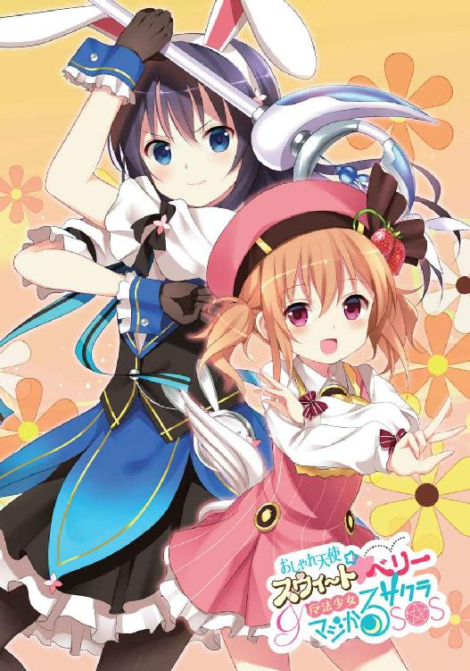
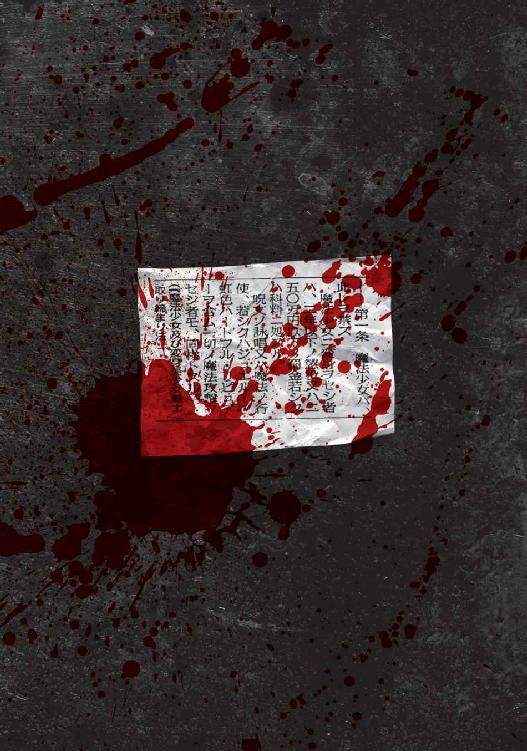
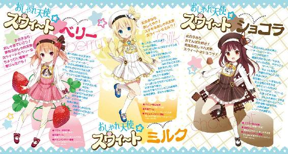
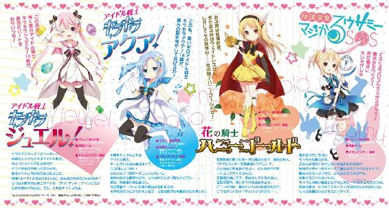
魔法少女禁止法Ⅰ
著者 伊藤ヒロ
イラスト Koi
電子版
本作品の全部または一部を無断で複製、転載、配信、送信したり、ホームページ上に転載することを禁止します。また、本作品の内容を無断で改変、改ざん等を行うことも禁止します。
購入時にご承諾いただいた規約により、有償・無償にかかわらず本作品を第三者に譲渡することはできません。
本作品は、底本の表現や演出を考慮して本文縦組で制作しております。また一部のページを改変しております。ごらんになるリーディングシステムにより、表示の差が認められることがあります。
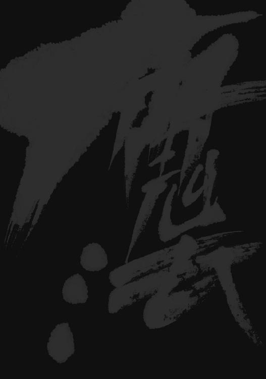
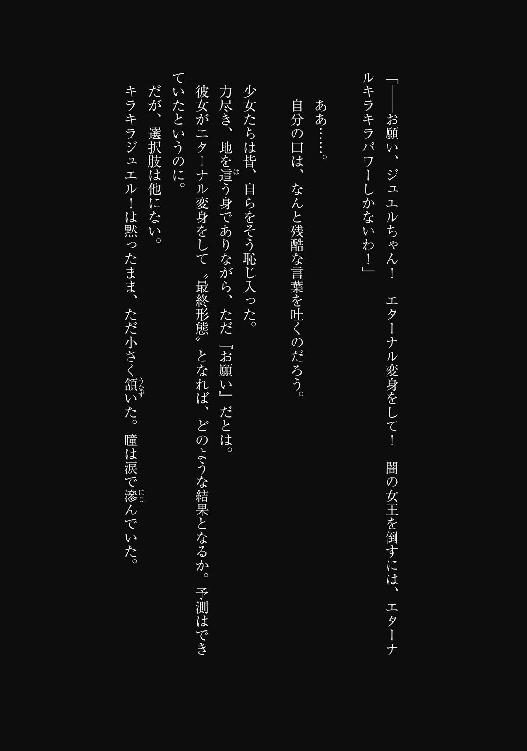
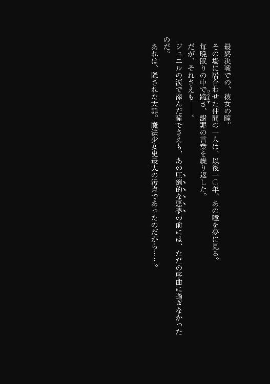
――第一条 魔法少女ハ、此レヲ禁ズ
ウィッチ・イズ・デッド、というやつだ。
魔法少女禁止法が制定されて今年で一〇年。
昔は簡単だったと彼女は思う。
「ひぎャアアアアアアアアアアアアアアアアアアアアアアアアアアアアアアアアアアアアアアアアアアアあああああああああああああああああああああああああああああああああああああああああああああっ!? いでえっ！ いでえっ！ いでえよおおおおおおおおおおおお！」
「だろうな」
夜の新宿東口。午後六時五五分の裏路地。下品なネオンの光すら届かぬ、都会の闇の奥深く。
密売人の指をへし折りながら、少女は当時に想いを馳せる。
黄金の九〇年代――今から一〇年と少し前、世界はずっと単純だった。
敵も、異世界からの侵略者だ。こんな犯罪者どもじゃない。
「ゆ......ゆびがっ！ ゆびがあああああっ！」
男の右腕は、日々筋トレとプロテイン摂取を繰り返してきた『他人に恐れられる為の努力』の賜物だ。調子の良い時ならベンチプレスで二九一キロをあげられる。上半身を埋め尽くすトライバル柄のタトゥーの為に公式な記録として認められる事はないだろうが、これは男子九〇キロ級では国内三位。
にもかかわらずその鍛え抜かれた太い腕は、無様に捻り上げられていた。
幼い少女の掌に。
まだ、ほんの一〇代前半――それも、せいぜい一二か一三そこいらに見えたろう。背丈はプロフィールによれば一四九・八センチだが、子供っぽいイメージからか、さらに小さく見えていた。
未成熟な手足は、すらりと細くて華奢そのもの。一年草の茎のよう。だとすれば掌は、そこに咲く小さな白い花なのだろう。ただ触れただけで、ぱらぱら散ってしまいそう。
でありながら、そんな幼い掌は、逆に男の腕を捻り上げ、そして――へし折っていた。
男の指を。
ぺきり、と。
小枝のように。次から次へ。
自分の倍の太さはあろう、特大芋虫にも似た人差し指を。
小指から順に折ったので、今ので折ったのは四本目。
「ひっぐ、ひっぐ、う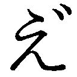えええ......」
タトゥーだらけの大男は、幼子のように泣きじゃくる。
だが、この街では悪党の嗚咽は珍しくはない。少なくとも彼女にとっては、過去一〇年間聞かぬ夜のない『街の音』だ。
「痛いだろう？ 折れた骨は皮膚を破って飛び出し、血はもちろん脂や骨髄までもそこいらに撒き散らしている。傷が塞がっても一生後遺症で不自由するに違いない。――しかし、気の毒に、とは思わん。お前の罪だ」
男の罪は二つ。
一つは、子供に覚醒剤を売った罪。
もう一つは、警告を無視してナイフを捨てなかった罪だ。
「言った筈だ。『降伏しなければ指をへし折る』と。私は絶対に噓を吐かない」
その言葉を聞き、周囲を取り囲んでいた密売人の仲間たちは、一斉に武器を捨てた。
人数は一〇人以上で、銃を持つ者もいたというのに。
とはいえ賢明な判断だ。
対価として、少女は彼らを『比較的軽傷で済む程度にぶちのめしてから、警察に引き渡す』と決めた。明日の朝、彼らは警察病院のベッドで、自らの賢明さに感謝するに違いない。
もし武器を捨てていなければ、少女は『警察に任せず、自ら裁いて』いただろうから。
「た、頼む――!! お願いだから、痛くしないで......!!」
「断る」
少女に、容赦の二文字はない。
顔の造形こそ幼いものの、瞳は爛々と光っている。それは決意と暴力性を示す輝きだ。
喩えるのなら、狩りをする牝ライオン。
彼女の美貌は野獣に似ていた。
少女の名は、おしゃれ天使スウィ～ト☆ベリー（二三歳）。
別名『フリル服の悪魔』『返り血ピンク』『狂犬』『毒ベリー』『死のおしゃれ天使』。
法に逆らい活動を続ける、世界で最後の魔法少女だ。
１
夜、誰かが街のどこかで――。
「――フリルいっぱい 夢いっぱい 女の子ならおしゃまでいこう！ 夢見るおしゃれ天使スウィ～ト☆ベリー！」
一九九〇年代。
より具体的には、九二年四月から九七年三月までの五年間。
いわゆる魔法少女黄金時代。
この時期は歴史上『最も多くの魔法少女たちが誕生した五年間』であり、同時に『最も華やかな活躍を果たした五年間』でもあった。
例を挙げるとするならば、まずは『戦う魔法少女ブーム』の火つけ役でもある超人気チーム〝魔法のアイドル戦士キラキラスターズ！〟。
半人前の魔女がボーイフレンド二人と合体変身する〝ホーリープリンセスかぐや〟。
剣と魔法の異世界オデッセイを旅する〝幻想剣士スターレットガールズ〟。
人間サイズの不細工なデブアヒルに変身する変わり種〝空飛ぶダックさん・ＤＥ・ニコルソン〟。
別の意味で有名になってしまった魔法の小学生〝魔法少女マジかるウサミーＳＯＳ〟。
いずれも世界を救うために戦った少女たちだ。
そのうちの一人が、彼女――おしゃれ天使スウィ～ト☆ベリー。
それと、仲間である〝魔法のスウィ～トおしゃれ天使〟たち。
彼女たちは、喩えば先述の〝キラキラスターズ！〟に比べてマイナーであったものの、しかし当時の勇姿は今でもインターネットの動画サイトで見る事ができる。
以下は二分一六秒の動画データ『Osharetenshi-nanori1996.flv』。
一九九六年に放映されたドキュメンタリー番組のワンシーンを、当時のファンが著作権無視でアップロードしたものだ。
「お聞きなさい、ロックンロール鬼魔デスビート！ みんなの愛する音楽を利用して《キレイなココロ》を奪おうとするだなんて！ 貴方みたいな悪い子のせいで、この――夢見るおしゃれ天使スウィ～ト☆ベリーは！」
「女の子ならおてんば大好き！ 元気なおしゃれ天使スウィ～ト☆ショコラは！」
「女の子ならおしとやか！ ステキなおしゃれ天使スウィ～ト☆ミルクは！」
「女の子ならおちゃめさん！ ひみつのおしゃれ天使スウィ～ト☆ハニーは！」
「「「「私たち魔法のスウィ～トおしゃれ天使は、ちょっぴり機嫌が悪いんだから！」」」」
戦いの際には見得を切る。
これが九〇年代の流儀だ。
画面横に添えられた解説によれば、この映像は鬼魔がロックコンサートを利用して《キレイなココロ》を街の若者たちから奪おうとした時のものらしい。なるほど、それでだろうか。よく見れば敵の鬼魔もどこかエレキギターに似たデザインをしていた。
魔法のスウィ～トおしゃれ天使。
あるいは、スウィ～ト☆チーム。
フリルのコスチュームに身を包む、ほんの一二歳から一三歳、中学一年生の戦士たち。
活動は一九九六年の四月から。活動開始当時はベリー、ショコラ、ミルクの三人体制だったが、やがて独自に活動を続けていたスウィ～ト☆ハニーが合流し、動画通りの四人体制チームとなった。
その中央に立つ、薄桃色を基調としたコスチュームの少女。最初に名乗った、特に幼い顔つきの乙女。垂れ耳の仔犬を連想させる、愛らしい容貌をした女の子。
彼女こそが、スウィ～ト☆ベリー。
三月生まれであったため、動画撮影時にはメンバー唯一の一二歳。
中央に立ち、最初に名乗ってはいたものの、特にリーダーというわけではない。実質的なリーダーは二番目に名乗ったショコラの方だ。毎週末に開かれていた魔法少女たちの情報交換会にもチーム代表として出席していたと記録にはある。
ベリーは、むしろチームのマスコット――ムードメーカー的な存在だった。
明るく無邪気で騒々しく、そして誰からも愛される。
動画でアップになると、よく分かる。特に一分一七秒目のあたり。くりくりとした瞳に無垢な笑顔、いかにも『ちょっぴりドジな頑張り屋さん』といった愛らしさではないか。
「ふぅ......」
時計は夜の七時。
九月とはいえ、もう外は暗い。
一七歳の少年佐倉慎壱は、その用件で外出する際には必ずこの動画を見ることにしていた。
それも三度は必ず。
通しで一度。ベリーの名乗りは、もう二回。
自分の家にはパソコンがないので、隣家の子供部屋――宇佐美奈々の部屋で。
気分を盛り上げるための一種の儀式だ。これで意欲はうんと上がる。
「......佐倉、目がいやらしい」
「まさか!? そんな事ないだろう？ 一二歳だぞ。五つも年下の子なんだ」
この動画は九月に撮影されたもの。中一の九月といえば、ほんの半年前まではランドセルを背負った小学生だ。一七歳の彼にとっては、さすがに幼すぎる相手だったろう。もちろんリアルタイムでドキュメンタリーを観ていた当時は『うんと年上のお姉さん』であったのだが。
「だから、その一二歳で五つも下の子供をいやらしい目で見てるって言ってんのよ！ この変態！ 変態！ 変態！ どロリコンの変態野郎！」
「人聞き悪い事を言うな。だいたい、俺はロリコンじゃない。知ってるだろ？ 俺が誰を好きなのか」
「............」
それは奈々ではなく、全く別の女性だったが。
「そろそろ行くか......。奈々、早くアレを貸してくれよ」
「はいはい、分かったってば！ ――あと、よく考えたけど、あんたはやっぱりロリコンだと思うわ。絶対そう」
「うるさいな」
宇佐美奈々は、佐倉少年と同じ一七歳。同じ高校でクラスも一緒。
髪をポニーテールに結わえた、快活という言葉がそのまま具現化したような少女だった。部活は陸上とチアリーダーを兼部しており、勉強よりも運動を得意とするタイプだ。
一方、佐倉少年は、優等生ながらも運動を苦手とするタイプ。ちょうど正反対となるのだろう。
でありながら二人は、たまに喧嘩をすることはあっても、幼児の頃から仲が良い。七歳の時に宇佐美家が、佐倉家の隣に引っ越してきてから、一〇年来の仲だった。
つまりは幼馴染み。
それも漫画的な意味での、だ。
その奈々は、ここ一週間ほど機嫌が悪い。
佐倉少年が例の用件で外出するようになってから毎日がこの調子だった。
佐倉も『最近、幼馴染みが膨れっ面をしている』とは気づいている。しかし鈍感な事に、彼は原因までは理解していなかった。
（さては――ここ毎日、ずっとパソコンと大事なアレを借りに来てるからだな。それでムカついているのか）
こんな具合に、ややズレた認識のままだった。
もっとも、それも全くの間違いではなかったが。
（毎日、ベランダからやって来て、パソコンを一五分くらい借りて、その後アレを借りて二時間くらい出かけて――しかも親へのアリバイ工作まで頼んでいるんだ。これだけいろいろ頼まれれば、機嫌くらいは悪くなるか。しかもアレは――）
あれは奈々のお姉さんの......。
「ほら、貸してあげるわよ。毎回念押しするようだけど、絶対に壊さないで。それから、感謝の気持ちを忘れない事！ 分かってるんでしょうね？」
「ああ、分かってる。感謝してるって」
感謝の気持ちに噓偽りは一切ない。彼は昔から義理堅い性格だった。奈々もそれを分かっているからこそ、苛つきながらも少年の頼みを断りきれずにいたのだろう。膨れっ面のまま、勉強机の鍵つきの引き出しを開ける。
中から出したのは、例の〝アレ〟。
《マジかるコロロン》――いわゆる魔法ステッキだ。
佐倉少年は、奈々からそれを受け取ると、
「――くるくるコロろん マジかるアップ！」
唱えた。
呪文を。
眩しい光に包まれながら。
「マジかる ラビかる ココろコロン ラみカル ミミかる みミコろろン♪」
光が消える頃には、彼は......変身っていた。
ぷわっ、と髪が伸び、フリルだらけの『魔法少女』に！
「魔法少女サクラ 恋に魔法に大いそがし☆」
媚びたポーズを決めたまま、いつものように少年は頰を赤くする。
何度やってもまだ慣れない。
ポーズや決め台詞もそうだったし――変身プロセスの一環なので、彼の意思と関係なく自動でステッキにやらされてしまう――それに、このコスチューム。
「佐倉、相変わらずその格好似合ってるわね。わたしなんかよりずうっと似合うわ」
「やめろよ、そういう事言うの。恥ずかしくなるだろ」
「バーカ！ あんたはね、わたしが何か言う前からとっくに恥ずかしい存在なの。男のクセにそんなカッコが似合うなんて、まったく恥ずかしいったらありゃあしない。この変態！ 変態！ 糞変態っ！」
「だから、やめろってば」
一七の男子である以上、フリルやミニスカートには抵抗がある。
しかし一方、この姿がどれほどの魔力を持っているのか、それも少年は知っていた。
このコスチュームには羞恥に値する価値が、間違いなく秘められていたのだ。
それと口にこそ出さないものの、心の中では――、
（まあ......、確かに似合ってはいるな）
と、似合っていること自体は認めていた。
もともと女性的な面立ちの少年ではあったが、こうして変身した彼を見て、誰が男子と疑うだろうか。
背こそほぼ男子平均の一七〇・二センチと、少女にしてはかなりの高めであったものの、この可憐さ。この愛くるしさ。
少なくとも、この一週間で真実を見抜いたのは、ただの一人だけだった。
「じゃあ俺、行くぞ。うちの親には『奈々に勉強教えてる』って言ってある。何かあったら適当に誤魔化しといてくれ」
「はいはい、いつもと同じでいいんでしょ！ さっさと行けばいいじゃないの！」
「ああ」
そう言って佐倉少年――魔法少女サクラは窓を開けた。
ここはマンションの八階。高さは約二五メートル。
しかも夜七時の空は暗く、灯りはビルや住宅のガラス窓のみ。頼りのない地上の星々。
このようなダークブルーの景色の中では、昼より一層高く感じる。気分的には地上一〇〇メートル以上はあろう。だが少年は、その体感高度一〇〇メートルを、
「――よっ、と」
よっと、と躊躇なく飛び降りた。
ミニスカートの裾を押さえながら。
スカートが翻るので、誰かに下着を見られないかと心配だった。しかし不安はそれ一つ。
毎夜の事だ。
怖かったのは二度目まで。
サクラの体軀は重力加速度によって秒速二二・一メートル、時速七九・六キロで地面に叩きつけられようとしていたが――しかし、そのまま軽やかに着地する。すとっ、という着地音のみを残して。
これが魔法。魔力による身体能力増幅効果。
魔法少女、驚異の力。物理法則の及ばぬ領域。
この程度の高さなど、変身後の彼にとっては階段を一、二段まとめて飛び降りるのと同じ事。それどころか逆にマンションの八階の高さまで、下から跳び上がる事さえ簡単だった。むしろスカートの事を考えると、その方が簡単なのではなかろうか。
遠く八階の窓から「バーカ」と奈々の怒鳴り声が聞こえたようにも感じた。だが少年は構わず、薄闇の中を駆けていく。
杉並区の住宅地から、新宿の高層ビル街まで。五・二キロメートルを。
時には首都高を駆け抜け、時には建物の屋根や壁面を飛蝗のように飛び跳ねて。
愛しい女性の待つ、あの暗黒の街に。
（――スウィ～ト☆ベリー！ 今、行きます！）
〝魔法少女の弟子〟。
映画「ファンタジア」の『魔法使いの弟子』にちなんで、新聞などではそう呼ばれていた。
２
月は、死んだ。
高層ビル街に入ると、それが分かる。
今夜は満月であったものの、見上げる者など誰もいない。眠らない都会の夜では、視界は常に眩しいままだ。頭上に星はなく、代わりに地上でガラス窓やネオンが煌めく。それは、まるで堕ちた星々の死骸だ。
闇が存在するのは今や心の内にのみ。
かつて地上を導いていた月光は、今や無用のものと成り果てていた――。
少年は駆ける。
誰からも必要とされない、死んでしまった月の下を。
〝魔法少女の弟子〟。
この呼び名には多少なりとも否定的な意味合いが含まれていた。
サクラは九〇年代の魔法少女たちと同等の魔力を保有しており、歳は一七。当時の魔法少女たちはその大多数が一四歳前後だったが、それより三つも上になる。
にもかかわらず、世間は彼を〝魔法少女〟ではなく〝魔法少女の弟子〟と呼んだ。
無論、魔法少女は正体を隠すものであったから、マスメディア関係者はサクラの正確な年齢を知る由もない。性別すら誤解したままだった。
しかし、それならむしろ、だ。一メートル七〇という身長だけからしても、幼く誤解される謂れはあるまい。
彼の呼び名に込められた意味合いは、
『弱そう』
『どこか頼りない』
『こんな大人しそうな子が、魔法少女活動などという凶悪犯罪を？』
『あの女にたぶらかされているのでは？』
『若者のモラルが乱れて、このように凶悪犯に憧れる子が現れた』
と、取り扱うニュースや新聞記事によって変化する。
だが、いかなる意図があるにせよ、サクラ本人はこのフレーズを気に入っていた。
むしろ名誉だ。
一〇日前に路上強盗から助けられ、偶然隣家の幼馴染みが変身ステッキを持っていたのを思い出し、一週間前に初の変身、鼻であしらわれ続けながらも『余所で迷惑を掛けるよりは』と三日前、ついに正式な助手として認められた。
そんな彼としては〝弟子〟の称号は眩しいくらいに誇らしい。
マンションの窓を飛び降りてから一六秒。
夜の高層ビル街を疾走り、屋根を跳ね回り、壁面を駆け抜け、ついには愛する〝師匠〟の元へ――。
「ベリー、俺です」
「......来たか」
建設中の新宿アクアリウムタワービル、その天辺。
巨大グループ企業であるアクアリウム社の新社屋であり、同時に東京タワーの機能を補佐するテレビ塔でもある。高さは三一四メートル。未完成ながらも新宿一帯で最も背の高い建造物だ。
造りかけで鉄骨むき出しの展望台に、
――ちょこん
と、小さく立つフリルの少女。
ここは彼女の秘密の見張り台。彼らの待ち合わせ場所だった。
「早かったな？」
「はいっ！」
一七歳の少年は、幼く見える少女に深々と頭を下げた。まるで姫君に傅く騎士のよう。その恭しさは、むしろ滑稽にさえ見える。自分より二〇センチも小さな子供に対して、あまりに丁寧すぎるお辞儀ではなかろうか。――もちろん、その感想は『相手が何者なのかを知らなければ』ではあるのだが。
サクラとしては、本当なら、
『――はいっ、急いで来ました！ 貴方に、少しでも早く会いたくて！』
そう言いたかったが、さすがに口には出さずにおいた。
そこまで言葉にしてしまえば、もはや愛の告白と変わるまい。そこまでの勇気、彼にはまだない。
（いつかは言わないと――。だが今の自分に、その資格があるとは思えない......）
これほど素敵な女性なのだから。
もっと彼女に釣り合う自分になるまで待つべきだ。少年は固く心に決めていた。この一点に関して言えば、彼は極めて『男らしい』。フリルのコスチュームを着ていようともだ。
幼い外観のベリーに対し、一七歳男子の想いは、真っ直ぐで、眩しく、揺るぎない。
夜の新宿は暗黒の森。
巨木の代わりに墓標にも似た高層ビルが建ち並ぶ。
そして森には鳥や獣が棲むように、ここでは夜でなお人口約三万人。
彼らは、おおよそ三種に分類される。
一つ目は『被害者』。三万人のうち、ほとんどはここにカテゴライズされるだろう。
二つ目は『加害者』。約一七〇〇人。比率的には低いが、決して少ない数ではない。
最後の三つ目。たったの一人。一週間前から、もう一人。
すなわち、彼ら『魔法少女』。
サクラと、その目の前にいる師匠――夢見るおしゃれ天使スウィ～ト☆ベリーだ。
（この人を見ると、どきりとするな......）
心臓が、高鳴る。
遠目には、フリルの少女。先程の動画と同じ衣装であり、小学一年生の頃テレビで見たのと同じ姿だ。感慨を誘う。
一〇日前、初めてベリーを生で見た際、サクラは彼女を、
『可憐だ』
と、感じた。
あるいは『可愛い』『愛らしい』。小さな少女に対する、年上としての褒め言葉だ。
その時、彼はまさに強盗に襲われている真っ最中であったため、その褒め言葉には『本当に、こんな子が自分を救ってくれるのだろうか？』という疑いのニュアンスが含まれる。無論、彼もニュースは見ていたので、スウィ～ト☆ベリーが強大な力を持っている事くらい、頭でならば理解していた。だが、それでもベリーの姿は可憐すぎ、むしろ不安が募るのみ。
しかし、それも最初だけ。僅か数秒後には、全く異なる感想を抱くようになる。
遠目にではなく、間近に彼女を見てしまったから。
彼女はもう動画データの『ちょっぴりドジで頑張り屋さんの一二歳』ではなかった。あれは一〇年以上も昔の姿。二三歳の今は違う。
いや――、同じだが違う。
いかなる魔法の効果だろうか。年齢をとっていなかった。これほどの年月を経ていながら、一切の成長・老化をしていない。背は伸びておらず、当時のプロフィールと同じく身長一四九・八センチ。体重も四〇キログラムしかなく、白く艶やかな肌の張りは、どう見ても一〇代序盤特有のもの。手足もすらりと細い少女のものだ。
夢見るおしゃれ天使の魔力は、人類の夢たる不老不死を実現したというのだろうか？
幼い一二歳のまま、彼女は一〇年余の年月を過ごしていた。
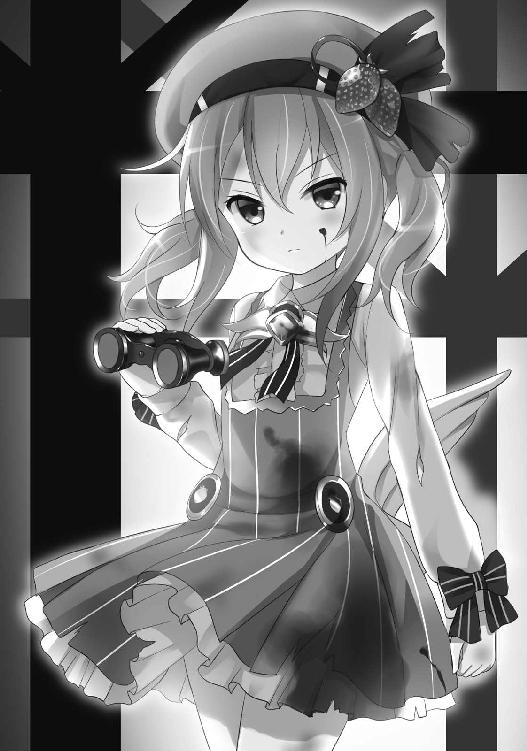
だが、その一方、都会の戦場で過ごした日々は、彼女に明確すぎる年輪を刻んでいた。逆説的だが、その容貌を見れば一目で理解できるだろう。
顔の〝造形〟こそは当時と全く変わらぬまま。しかし、〝顔つき〟は別だ。二三歳という年齢相応に――いや、年齢よりもずっと大人びていた。
特に瞳。その暗く鋭い眼光は、まさしく戦士のそれだった。悪と戦う、本物の女戦士の双眸だ。
あるいはコンクリートジャングルに棲む肉食獣。〝規制〟後一〇年の戦いの歴史が、彼女を変えてしまったのだろう。歯も真一文字に喰い縛られて、きっと何年も笑顔など浮かべていないに違いない。
それに傷。火傷に斬り傷、銃創と、その白い肌には無数の細かい傷痕がついていた。肘まである長手袋をつけた腕や、ミニスカートから伸びた脚、女の命たる顔にまで。
コスチュームも傷を修繕した縫い跡だらけだ。ひらひらフリルはあちこち擦り切れ、ピンク色は褪せていた。しかも泥や血の染みが、そこいらにべったりと付着している。彼女を獣とするならば、傷は毛皮の縞模様。
その凄み。その威圧感。フリルに染みつく、血と硝煙と暴力の匂い。
これが間近で見た彼女の姿。動画から一〇年余を経た、スウィ～ト☆ベリーの現在だった。
だから、今では感想は、こう――。
（相変わらず、『綺麗』な人だ......）
『綺麗』。
一般的な美的感覚によれば、彼女はそうとは呼ばれまい。
本来なら、恐怖の対象。悪人たちのように『怖い』『恐ろしい』と震え上がるべきであろう。
あるいはサクラ少年の初見と同様、その背丈とコスチュームだけで『可憐』『可愛い』『愛らしい』と誤った感想を持つべきか。
だが、今のサクラは違う。
（綺麗な人だ......。もちろん怖くもあるが――そこが、またぞくぞくする）
世界で一番素敵な人。少年は心の中でそう呼んでいた。
無論、贔屓は入っている。『偉大な魔法少女に対する憧れ』や『助けられた感謝』といった想いが、評価を上げ底していたのだろう。そのくらいは自覚がある。だが、そんな贔屓目を抜きにしても、彼女は相当に美しい。それについて譲る気は無かった。
ポーズをつけたヴィーナスではなく、武具を構えたミネルヴァの美だ。
（なんて素敵な人だろう......。気障な言い方だが、まるで小さな〝美と戦いの化身〟だ）
無論、痘痕も笑窪と分かっていたが。
出動前にマンションで、サクラは『自分は幼児趣味ではない』と主張し、幼馴染みの奈々は『幼児趣味の変態野郎』と罵った。それは、どちらも正しく、また、どちらも正しいわけではない。少年よりうんと年上で、しかし背は少年の肩までもない――そんな小さな美貌の女神だ。
少年はただ、うっとりと、幼き彼女の姿を見つめる。
だが当の〝美と戦いの化身〟は、少年が向ける熱い眼差しを気にも留めず、天使アイテム《おしゃれ☆オペラグラス》で夜の街を見張り続けていた。
こんな風に〝活動〟に没頭する彼女も、もちろんサクラは素敵と思う。
「おや......？ ベリー、頰に血が付いていますよ？」
「ああ、さっき何人かへし折った。その時に付着いたのだろう」
「へえ......」
少年の顔が、僅かに曇った。
さっきまでは、ただただ浮かれ、舞い上がっていたというのに。
（へし折ったのか......。俺が来る前なのに）
『何人かへし折った』というのは、つまり『魔法少女活動を行い、何人かの悪党の骨をへし折って退治した』という事だ。
彼が来る前に。
今夜も彼が来ると知っていたのに。
彼としては少し寂しい。自分の居ないところで事件が一つ終わっていたのだから。
もちろんベリーや彼の活動というのは『彼が寂しくならない事』が目的なわけではないし、悪党どもに『悪いが自分が来るまで待っていてくれ』と頼める筈も無いだろう。そのくらいは理解していた。
「......すまんな、サクラ」
「いっ、いいえ！ そんな、全然！」
少年は顔を真っ赤にして、ぶんぶんと首を横に振る。
『もしかすると自分は拗ねた顔をしていたのかも』という恥じらいと、『さもしい自分の考えを読まれていた』という羞恥、それから『ベリーがわざわざ自分の気持ちを気に掛けてくれた』という嬉しさ。
それら三つが合わさっての、この赤面とオーバーアクションだった。
ベリーは相変わらず、オペラグラスから目を離しもしなかったが。
だが、そんな折――。
「............行くぞ」
「えっ？」
えっ、とは聞き返したが、意味は彼にも分かっていた。
発見したのだ。
ビルの裏側さえも見通す《おしゃれ☆オペラグラス》が。
スウィ～ト☆ベリーの冷たく燃える瞳が。
犯罪を。悪を。
即ち、魔法少女活動の対象を。
「歌舞伎町の隅。距離一二〇〇メートル。一跳躍で行けるか？」
「ひと跳びでは、ちょっと......。でも三回くらいビルの屋根を蹴れば――」
「いいや、急ぐ」
天使アイテム《おしゃれ☆アンブレラ》。
肩から掛けた《エンジェルポシェット》の中身の一つであり《おしゃれ☆オペラグラス》と同様、おしゃれ天使用特殊装備の一つだ。
ベリーたち〝魔法のスウィ～トおしゃれ天使〟は玩具メーカーとタイアップしていたという事情もあり（当時は珍しい事でもなかった）非常に多種多様な装備を保有していた。
この傘もその一つ。驚異的な跳躍・滑空能力をもたらすアイテムだ。
「動くなよ」
彼女は縞々ピンクの傘を左手でばさりと広げると、残った右手でサクラをぐいっと抱き寄せた。一二歳の細い腕を、少年の腰に回して。しっかりと。
「――――っ!?」
どきり、とサクラの心臓は跳ねた。
「跳ぶぞ！」
「はっ......はいっ！」
ベリーは傘の魔力で一二〇〇メートルの距離を跳ぶ。
助走も無しに一跳躍で。背は一五〇センチに満たず、体重に至っては四〇キロしかない少女が、自分よりも一・五倍の重さはあろう高二男子を抱きかかえて。
サクラは、こうして抱かれて跳ぶのは初めてではなかったが――やはり照れた。
無論、嬉しくはある。
このように半袖かつミニスカートの衣装で密着すると、すらりとしなやかな二の腕や太ももが素肌同士でぴったりと触れ合った。この距離だと互いの体温や呼吸、体臭までも感じられる。風で揺れるベリーの髪からは野原の花の匂いがしていた。
（やっぱり、この女性は素敵だな......）
しかし嬉しい反面、情けなくないわけでもない。
幼い少女に抱きかかえられる自分の姿は、きっと、みっともないものであったろう。想像するだけで恥ずかしい。だが、それ以上に――、
自分が、まだ『守られるべき存在』なのだと思い知らされてしまう。
それが、何より情けなかった。
「......聞こえているか？」
「は、はいっ！ 聞いてます！」
「ならば、よし。暴力団の出入りだ。銃を持った男三人がスナックに押し入ろうとしている。全員、竹崎組系一学会の構成員。あそこは抗争相手である黒川組の若頭が愛人に任せている店で、本人も一時間前から中にいる」
「止めるんですか？ ヤクザ同士の抗争ですよ。どうせここで助けても、どこかで罪を犯すに決まってるのに......」
「止める。一般客と従業員を守る必要がある。それにサクラの意見には賛成できんな。私はいかなる犯罪行為も許さない」
これは冗談だろうか？ それとも、わざわざ口にする必要がないと省略しただけなのだろうか？
サクラは少しだけ疑問に感じた。今の『いかなる犯罪行為も許さない』という台詞には、『自分たち以外は』という一文が抜けている。
犯罪――違法行為なら彼女もしていた。今まさに。
この『魔法少女』こそが一〇年前から禁止されている違法行為であったのだから。
魔法少女であるおしゃれ天使スウィ～ト☆ベリーは犯罪者。
謂わば『非合法魔法少女』だ。
（助手の俺は、共犯者か。逮捕されたら行き先は別々になるな。俺は少年院でベリーは刑務所だろうから......。もしも一緒なら、捕まるのだって怖くはないのに）
そんな事を考えている間に、もう地上。
アクアリウムタワーから、おおよそ高さ三一〇メートル、距離一二〇〇メートル。
ピンクの傘一つで風を切りながら乱暴に、
――ずどん
と轟音を立てて着地した。
銃を持った暴力団員三人の目前、僅か二メートルの距離に。
「ぶちのめすのは私がやる。サクラは後ろに回って退路を塞げ」
「はいっ、ベリー！」
着地の土煙が舞う中、彼は密かに、ちぇっ、と思った。
また前線ではなくサポートだ。
３
九〇年代の魔法少女黄金時代、彼女たちの攻撃方法は『ビーム』だった。
魔法の光。
ハートや花びらといった、それぞれの象徴と同じ形をした光弾を飛ばして攻撃を加える。あるいは魔法の光を、剣や矢にして攻撃する。
例外的にヨーヨー、ハンマー、新体操用のリボンといった実体武器を使用する者もいたが、基本的には『魔法少女はビームで戦うもの』と思って間違いはないだろう。
ベリーたち〝魔法のスウィ～トおしゃれ天使〟たちも同様だった。
ただし、それは過去の話。
異世界から来た鬼魔相手ならいざ知らず、人間に向けて撃つには〝甘くてスウィ～トな夢を届けるベリー・ピンクベル・ハートヴァイブレーション〟は強力すぎる。
余程の手加減をしなければ、犯人を人質ごと蒸発させて、コンクリートの壁に人形の染みだけ残った状態を作る事になるだろう。スウィ～ト☆ベリーは不精者ではなかったが、わざわざ『余程の手加減をする』という手間を掛ける気もないらしく――、
「――ふンっ！」
と、ただ殴った。
小さな拳で。
一二歳の少女の拳骨で。しかし魔力で超増幅された魔法少女の膂力でもって。
背伸びをしながら、ただの生身の人間――三〇代前半の暴力団員の頰を。
殴られた拍子に一瞬、頸椎があり得ない方向へと捻れた。人間の首は強い衝撃を受けるとそうなるようにできているものだ。喩えば大規模な交通事故に遭ったり、あるいは魔法少女に右フックで殴られたりすれば。きっと何年も後遺症のムチウチに悩まされる事だろう。
同時に唇からは「おぶっ」という呻き声と、血と、折れた歯が何本も飛び出す。これまた魔法少女に殴られた人間の一般的な反応だ。
「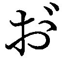......うぉおおおおおっ!? おおぉおおおおおおおおうっ！」
男は痛みと衝撃でびくびくとのたうち回る。
これでもベリーは全力ではない。多少の手加減は加えていた。ただ『余程の手加減をする』というほどまで手間を掛けてはいなかっただけだ。
そして、残りの二人に告げる。
「お前たち、拳銃は使うのか？」
男たちは銃を構えたままだったが、それは不意を突かれて思考停止していただけの事。
仲間の惨劇を目の当たりにしながら、それでも拳銃一丁で魔法少女に立ち向かう――そこまでの勇気を、さすがに持ち合わせてはいなかった。二人は慌てて銃を投げ捨てる。
「それでいい」
ベリーは軽く頷くと、丸腰の二人を順番に......痛めつけた。
「ま......待てよ!? 何でだよ！ 俺たち降参しただろ！ 銃捨てただろ！」
「軽くだ。我慢しろ。一人だけ痛めつけたのでは公平さを欠く」
「だ、だからって、こんなひでえ――!!」
「後でお前たちも感謝する。無傷のまま逮捕されてみろ。組に『戦わずに逃げた』と思われて殺されるぞ？ 怪我をしていれば言い訳もできる」
これが彼女なりの優しさであり、過去の失敗から学んだ手法。片方の男は肋骨三本を肺に刺さるようにボディブローで折り、もう片方は両脚を摑んで力任せに叩き折る。
〝死のおしゃれ天使〟とまで呼ばれた彼女が、犯罪者に掛ける唯一の慈悲だった。
（............ちぇっ）
ベリーの見事なまでの手際。
しかし、その手際があまりにも見事すぎるため、助手のサクラとしては、やや『つまらなさ』や『疎外感』を感じてもいた。
（言われた通り、あいつらの後ろに回り込んだのに......）
いつもこうだ。毎回同じだ。悪党退治はベリーが一人でやってしまう。
ベリーにとって自分は必要ないのでは？
いや、それどころか邪魔者扱いされているのでは？
先程の『後ろに回って退路を塞げ』という指示も、本当は『邪魔だから向こうに行け』という意味ではなかったか？
それを考えると少年の表情は、自然と陰鬱なものになっていった。
（いや......考えるのはよそう。そんな事を考えていたら、きりがない）
やがて、外の騒ぎが聞こえたのだろう。襲撃先だった安スナックの扉が開く。
店内から出てきたのは――。
「ス......スウィ～ト☆ベリー!? こりゃア、何の騒ぎだ！」
出てきたのは、ターゲットである若頭だ。
初老の暴力団幹部は、孫のような歳の少女を前に、びくりと背筋を痙攣させた。
「黒川組若頭の黄島だな。こいつらの顔に見覚えがあるだろう？」
「あァ......？ 確か、こいつら一学会の――!! じゃあアンタ、俺を守ってくれたってェのか!?」
「結果としては、そうとも言える。だが私が守ったのは法と正義だ」
「法？ い、いや、法を守れてるかは知らねえが......けど、どっちにしても有り難え！」
確かに、このアスファルトの上の地獄絵図。合法性には疑問を感じる。
だが、男たちの悲痛な呻きの中でもベリーの瞳に揺るぎはない。
彼女が守ったという法は『刑法』でも『日本国憲法』でもなく、その上に位置する『彼女なりの法』だったのだろう。
狂気にも似たこの圧倒的自信。
スウィ～ト☆ベリーの真っ直ぐな視線を前に、五二歳になる暴力団幹部黄島の瞳は、怯え、潤み、視線を真横に逸らしていた。背中も僅かに震えている。
そんな恐怖の中で『有り難え』と礼を言ったのは、暴力を生業とする者の精一杯の虚勢であるのか。あるいは古いタイプのやくざ特有の美学とでも言うべき義理堅さであったのか。
しかし、いずれにせよベリーはその礼儀を、
「いいや」
一蹴した。
その語調は瞳と同じく、凍りついた炎のよう。
冷静沈着、でありながら極めて高い攻撃性を秘めていた。
「感謝をされる謂れはない。必要もない。むしろ、お前は私に怨嗟の言葉を吐くべきだ。魔法少女は公正さを重んじるものなのだからな」
黄島は、瞬時に悟った。
横で聞いていたサクラも、遠巻きに眺めるギャラリーたちも。
『ベリーは彼にも大怪我を負わせて、それで公正さを保つ気だ』と。
日本の一般的な法では、この男は襲撃された被害者であるのに。
だが、これが彼女なりの公正さであり法だった。
「ま......待て！ やめっ、やめろ！ やめろおおおおおおっ！」
やめない。
ベリーが胸倉を摑んだ瞬間、黒川組若頭であり自らも二次団体の組長を務める黄島俊次（五二）は......失禁した。勢いよく。
彼のようなベテランは、長く暴力業界に身を置くだけあって『苦痛に対する勘』が鋭い。襟を摑む握力から、味わう痛みの量を計測できてしまったのだろう。漏れた尿がベリーの太ももやブーツに撥ねる。
だが、ベリーはそれで怒りを激しくする事もなければ、逆に憐れむ事もない。彼女の法では恐怖による失禁は罪ではなく、また逆に減刑理由にもならないのだから。
スウィ～ト☆ベリーはただただ冷徹にその右拳を振り上げるが......、
「お......おお、俺に八つ当たりする事無えだろォ！ 仲間が死んだからってよォ！」
「――――？」
ここで初めて、手が止まる。
『仲間が死んだからってよォ』の部分で。
振り下ろした拳が、男の顎に触れる直前で。
「仲間......？ 誰が死んだと？」
「あ、あれ......もしかして仲ァ悪かったのかよ？ 確かに違うチームの奴は仲間じゃねえのかもしれねえが......でも同業者だから、てっきりそれで機嫌悪ぃのかと思ってたんだ。なあ、もしアレが他殺で、犯人を捜す気なら俺も手伝って――」
「いいから言え！ 誰が死んだ！」
「テ......テレビ見ろよ！ ちょうど今、そのニュースが......!!」
〝スナックみつゑ〟。
歌舞伎町の隅にあるこの安スナックの内装は、お世辞にも豪華とは言えないものだ。しかし日本シリーズや高校野球のシーズンには店内で野球賭博をする事もあって、テレビだけはそれなりに悪くないものを置いていた。
六〇インチサイズのプラズマテレビだ。
その大画面には今、夜七時台のニュースが映し出されている。
テロップは『人気ファッションモデル金城マリー、自宅マンションから転落死』。
画面の中でアナウンサーは、淡々とニュースを読み続けていた。
「――金城さんは一〇年前、国民的人気を博した魔法少女チーム〝魔法のアイドル戦士キラキラスターズ！〟のメンバー、キラキラゴールド！の正体ではないかと噂された事で一躍時の人となり、その後は歌手、女優、グラビアアイドルとして活躍。現在はファッションモデルとして海外を中心に活動をしていました。今回の転落には不審な点も多く、専門家の意見によればこのマンションの窓は強化ガラス製で――」
午後の五時過ぎ、二〇階建ての高層マンション最上階から不審な転落死。
失禁した暴力団幹部の襟首を摑んだまま、スウィ～ト☆ベリーは画面を見ていた。
眉根に皺を寄せ、目を細めながら。
助手であるサクラはすぐ傍らでベリーの顔を見つめていたが、彼女のこの表情がいかなる感情の発露であるのか、それは少年には分からなかった。
悲しみ？ 怒り？ 謎に対する純粋な疑問？
はたまた、そのいずれとも異なるものか......？
「......サクラ」
「は......っ、はいっ！」
「今夜は『残業』だ。お前の手を借りる」
「はいっ、ベリー！」
黄金の愛のアイドル戦士キラキラゴールド！。
彼女の死は一つの『はじまり』であり、同時に一つの『ヒント』でもあった。
１
フリル服の二人組が犯罪者狩り。可愛らしいコードネームを名乗り、使う道具も幼い女児向けの玩具のよう、とは。
まるで幼稚なギャグのよう――客観的に見ればそうだろう。
だが、笑う者はどこにも居ない。
この二人を笑いものにするというなら、自分たちは？
一〇年前フリルの少女たちに救われた我々の命は、一体どれほど軽くなる？
自分たちの住む世界は、幼稚で悪質で笑えないギャグの上に成り立っている――皆の自覚がある以上、この二人は『深刻な現実』そのものだった。
ともあれ〝非合法魔法少女〟たちは夜の街を駆けていた。
先程の暴力団組員を手早く簡単に痛めつけた後で。歌舞伎町から麻布十番まで、ビルの屋上を跳ねながら。
険しい目つきの小さな少女と、ちょこまかとそれを追う一七歳。
そんなアンバランスな二人組で。
（ああ、しまった......。やっちゃったかもしれないな）
〝魔法少女の弟子〟こと魔法少女サクラは、恥じていた。
（『はいっ、ベリー！』だなんて！ あんな弾んだ声で、嬉しそうに！）
サクラ少年は、敬愛するスウィ～ト☆ベリーに、
『今夜は〝残業〟だ。お前の手を借りる』
と言われ、つい弾んだ声で返事をしてしまった。
元気いっぱいに。嬉しそうに。
少年は、それを恥じていた。
（ベリーの昔の仲間が死んだというのに、俺はなんて事を！ 彼女の気持ちも考えず、あんなに浮かれてしまうだなんて......。もしかして、ベリーの気持ちを傷つけたかもしれない）
純粋な後悔だ。『機嫌を損ねて嫌われるかも』ではなく『傷つけてしまったかも』。このあたりに彼の善良さや育ちの良さが窺えた。
しかし、仕方のない事ではある。
これまで、彼はずっと『自分は本当に役に立っているのか』と疑問に感じていた。彼は助手として認めてもらう際にも、
『夕食が終わってから午後九時までだけ助手としての活動を許可する。子供は家族で食事をとるものだし、夜の九時には家にいるものだからな』
と、まるっきり小さな子供扱いをされていた。
そんな彼が、力を必要とされたのだ。舞い上がる気持ちも理解できよう。
「あの......ベリー、すみません」
「............？ どうした？」
「いえ、何でも......」
当のベリーは気にしていないようだったので、サクラの気分はやや軽くなる。が、それでも胸のつかえは取れないままだ。
他に気になる事が幾つもあった。
（ベリーにとって余所のチームの魔法少女は、どういう存在なのだろう？ 死んでも、そこまで気にならないのか？ いや――そもそも、その死んだファッションモデルは本当にキラキラゴールド！だったのか？）
〝魔法のアイドル戦士キラキラスターズ！〟といえば、サクラでも知っている超有名魔法少女チーム。鬼魔と戦う一四歳の美少女戦士たちだ。
メンバーは、リーダーであるキラキラジュエル！以下、ローズ！、アクア！、グリーン！、ゴールド！の五人で、それぞれ地球、火星、水星、木星、金星をシンボルとしている。途中、何人かメンバーの追加もあったが、基本的には〝キラキラスターズ！〟といえばこの五人の事だろう。
サクラは〝規制〟前はせいぜい小学一年だったが、それでも記憶は残っている。
当時、子供たち――特に女子は毎日〝キラキラスターズ！〟の話題で持ち切りだったし、雑誌の表紙や特集記事も彼女たちのものばかり。アニメや漫画、玩具、テレビゲームなどにもなって、いずれも大ヒットを飛ばしていた。
サクラは大人しい子であったため、よく女子に交じって遊んでいたが、その影響もあってロボットよりも彼女たち五人の方が好きだった。
決め台詞も憶えている。
『クリスタルエナジー スターライトアップ！ このあたし、輝く星のアイドル戦士キラキラジュエル！一四歳が、貴方のハートをねらいうち！』
まだ魔法少女が合法だった時代、彼女たちは全国の少女の憧れだった。
一方、こう言っては何だが、ベリーたち〝魔法のスウィ～トおしゃれ天使〟はさほど人気のあるチームではなかった。
知名度も微妙であったし、むしろ『ぱくり』『ぱちもの』として嫌っている子も多かった気がする。
実際〝おしゃれ天使〟は〝キラキラスターズ！〟の影響を受けて結成されたチームであったろうし、それについて弁明するのは難しいだろう。スウィ～ト☆ベリーが非合法活動を続けていなければ、このチームの名は完全に忘れ去られていたに違いない。
（......本当に、どう思ってるんだろう？ あのやくざも言っていたけど、もしかして仲が悪かったのか？ それとも、そんな事はない？）
余談ではあるが、現在ではおしゃれ天使スウィ～ト☆ベリーより有名な魔法少女は存在しない。当然の事だ。
今では彼女（と、その弟子）が最後の魔法少女なのだから。
２
〝魔法少女禁止法〟。
それはある意味、歴史の必然と言える。
大人たちが胸に秘め続けてきた叫び声を、ただ文面に起こしただけの法律だった。
そもそも魔法少女は九〇年代に初めて現れたわけではない。
一九六〇年代から既に『魔女っ子』『小さな魔法使い』『ミラクル少女』などと呼ばれる超自然的な能力を持つ少女たちは存在していた。
だが彼女たちはその魔力で何かと戦ったりは、基本的にはしなかった。
中には〝花の騎士ハニーゴールド〟のように秘密結社と戦っていた者もいたが、それは極々稀な例外に過ぎない。
普通は近所で起こったトラブルを解決したり、子供らしいちょっとした悪戯に使ったりする程度の活動しかしていなかった。
また、この頃は魔法少女そのものが、ほんの少数しか存在していない。
これが俗に言う第一世代魔法少女。
当時はまだ『第一世代』とは呼ばれておらず（まだ第二世代があるかどうか知らないのだから当然だ）、また『魔法少女』という呼び名も定着してはいなかった。
一九八〇年代に入って魔法少女は、短期間のうちに急激にその人数を増やす。
彼女たちは第一世代と同じく、基本的にはその魔力を身近なトラブルの解決や悪戯などに使っていた。
しかし一部にはヘリコプターや巨大ロボットといったものものしい装備を持つ者もおり、怪物やマッドサイエンティスト、大規模災害に対して魔法を駆使して立ち向かう事例も、少数ながら存在していた。
この段階で、次の世代への下地が固められたと見てよいだろう。
これが第二世代魔法少女。
メディアが『魔法少女』という言葉を使うようになったのもこの時期だ。
そして、ついに九〇年代。
当時、人類は〝鬼魔〟の脅威に晒されていた。
闇に潜み、人間の持つ《キレイなココロ》を奪おうとする異世界から来た怪物たち。
だが一九九二年、この脅威から世界を守るべく最初に立ち上がったのが〝魔法のアイドル戦士キラキラスターズ！〟だった。彼女たちは当時まだ珍しい『戦う事を目的として誕生した魔法少女』であり、初のチームスタイルの魔法少女だ。
その後〝キラキラスターズ！〟の影響を受けてか、幾つもの『戦う魔法少女』たちが登場。多くはチームを組み、やはり鬼魔と戦った。
これが第三世代魔法少女。
過去の世代より、ずっと武闘派の魔法少女たちだ。
当初からその戦闘能力を危険視する者もいはしたが、しかし異世界からの脅威が現実として存在する以上、彼女たちは必要とされていた。
なのでメディアも好意的に、かつ大々的に取り扱った。
週に何本もドキュメンタリー番組やニュース特集が放映され、その活躍はアニメや漫画にもなった。テレビをつければ毎日最低一本はどこかのチャンネルで魔法少女の番組をやっていて、特に小さな女の子に大人気。最も人気のあった〝キラキラスターズ！〟のアニメ版などは当時、視聴していない女児はいなかったのではなかろうか。
しかし一九九七年の春、状況は一変する。
この年の三月〝キラキラスターズ！〟を中心とする魔法少女連合軍が鬼魔の本拠地である鬼魔界に乗り込んで最終決戦を挑み、指導者である闇の女王プリンセス・オブ・ダークネスを倒したのだ。
こうして五年間に及ぶ戦いは終わり、人類は平和と安寧を取り戻す。
と同時に『戦う魔法少女』――異世界に殴り込んで、その世界の全軍隊と互角に渡り合い、要塞の奥に潜んだ指導者と幹部を殺害する、などという物騒な力を持った少女たち――は世界に不要な存在となった。
少なくとも、持て余す存在となったのは間違いない。
翌月、九七年四月。〝キラキラスターズ！〟のメンバーで青き水のアイドル戦士キラキラアクア！が自分の正体を明かした上で引退を宣言。全世界に向けて英語で『もはや魔法少女の使命は終わった』と有名な演説をした。
また同時期。当時八歳で最年少の魔法少女であり、連続ドキュメンタリー番組〝魔法少女マジかるウサミーＳＯＳ〟の主役でもあった魔法少女ウサミーが、今度は痛ましい事件の主役となる。
魔法少女は正体を秘密にするものだったが、彼女はスポンサー契約していた大手ゲーム会社だけには本名と住所を明かしていた。しかし、アルバイトのプログラマーから情報が流出。ウサミーこと本名宇佐美実々（当時八歳）は下校途中に誘拐され、三日後首を絞められた全裸死体となって山の中で発見される。
当初は鬼魔残党の仕業と思われていたが、しかし実際は彼女に乱暴する事を目的とした熱狂的なファンの犯行だった。ワイドショーでは泣き叫ぶ両親と幼い妹の姿が連日繰り返し放送された。
他にも幾つかの事情・事件が重なって、ついに六月下旬、国会で魔法少女を禁止する法案が提出される。先述の事件による世論の後押しもあり――いや、むしろ大人たちは口には出してこそいなかったものの、以前から皆、魔法少女を恐れていたのだ――ついに一九九七年八月、法案は可決される。
かくしてここに『魔法少女及び変身美少女戦士取締法』、通称〝魔法少女禁止法〟が施行された。
魔法少女ニ変身ヲセシ者ハ、二年以下ノ懲役又ハ二五〇万円以下ノ罰金若シクハ科料ニ処スル。
呪文ノ詠唱又ハ魔法ノ行使、若シクハジュエル！・虹色ハートフル・リピュアーヲ含ム一切ノ魔法攻撃ヲセシ者モ、同様トスル。
この懲役二年というのは、魔法少女に変身する事や魔法を使う事だけに対する刑罰だ。
普通の犯罪に対する刑罰にプラス二年、という意味と言えば分かり易いだろうか。人間を魔法で攻撃すれば、さらに追加で殺人・傷害・暴行などの罪が加算される。そう考えれば、かなりの重い罰だろう。
また、それまでは魔法でしでかした行為は、殺人でさえ罪に問われるかどうか明確ではなかったが、この法律により『通常の凶器によるものと同等かそれ以上の罪に問われる』と明文化された。
この法により、魔法少女はその存在自体が非合法なものとなる。
幾人かはメディアに正体を明かす者もいたが、大抵はただ黙って姿を消した。魔法少女がその存在を消すのは、呪文を唱えずとも容易い事だ。ただステッキをどこかに仕舞って二度と変身しなければいいのだから。
法施行後、彼女たちは各々の日常へと戻っていった。
法を無視して魔法少女活動を続ける者も幾人かは居たものの（この頃になると敵は人間の犯罪者たちになっていた）ある者は逮捕され、またある者は遅れてステッキを仕舞い、やがて一九九八年の春にはただ一人――おしゃれ天使スウィ～ト☆ベリーのみとなる。
これが現在までの経緯であり、今の魔法少女を取り巻く状況のさわりだ。
都会の宵闇のような孤独の中で、ベリーはたった一人の戦いを続けていた。
「やれ、サクラ」
「はいっ、ベリー！
――マジかる ラビかる ヘンしんチェんジ 警視総監にな～あれ♪」
ここ最近は、少しだけ孤独でなくなったようだが。
３
「どうでしょう？ 少々、無理がある気もしますが」
「問題ない。ちゃんと警視総監に見えている」
この〝変身魔法〟というのは、コスチュームへの変身とはまた別のもの。
子供が秘めている無限の可能性を引き出す事により、あらゆる職業の大人に変身するという効果の魔法だ。一種の変装術とも言える。潜入捜査や人助けに最適な魔法だった。
魔法のメカニズムなどに多少の違いはあるだろうが、魔法少女なら大抵は似たような魔法が使えるものだ。
サクラはこの魔法によって警視総監に変身をしたのだが――。
「本当にちゃんと変身できています？ 鏡を見た限り、とても問題ないようには......」
立派な口髭はそれらしいと言えなくもないが、顔自体はサクラのままだし、肌のつるつるした張りは明らかに一〇代のもの。
それに一番ひどいのが足元。靴が魔法少女の時のままだ。
ハイヒールつきブーツの警視総監なんて、サクラは一都民としてどうかと思う。
「無茶ですよ。だいたい、今の警視総監ってこんな顔なんですか？ もし相手が本物の顔を知っていたら？」
「いいや、問題ない。変身魔法の暗示効果で、ちゃんと警視総監に見える。このまま打ち合わせ通りにやれ。今はお前だけが頼りなんだ」
「はいっ！」
はいっ、と元気よく返事をしながらサクラは頰を赤らめた。
（そうか、俺の変身魔法だけが頼りなんだな）
なんて素敵な響きだろう。
ずっと自分がいらない存在なのではと不安であったのに、突然『お前だけが頼りだ』とは！
「でもベリー、おしゃれ天使には変身魔法はないんですね？」
「いいや、ある。だが事情があって使用不可能な状態だ。だから今はお前が頼りだ」
「そうですか......」
サクラは紅潮していた顔から血が引いていくのを感じていた。
擬態語でいうなら、しょぼん、が一番ちょうど良い。
（そうか、俺の変身魔法だけが頼りなんだな......）
同じ言葉でありながら、これほど異なる意味合いになるとは。
（変身魔法用のアイテムが故障か何かしているのか......。俺の力が必要ってんじゃなくて、魔法ステッキの変身機能さえあればよかったんだな）
それどころか、もっと嫌な考えさえ頭に浮かぶ。
（......もしかして、俺を助手にしたのも、これが理由？ 変身魔法用のアイテムが使えないから、それで代わりに変装させようと？）
アイテムの故障が直ったら、自分は必要無くなってしまうのか？
そんな想像をしたがために、赤かったサクラの顔は青ざめていく。
「どうした？」
「いいえ、何でも......」
本当は『何でも』どころではなかったが、訊ねて確かめる勇気も彼には無かった。
〝サクラ警視総監〟が顔色を赤やら青やらカラフルに変化させているうちに、二人は目的地へと到着する。
麻布十番にある地上二〇階建ての高層マンション、その最上階――つまりは事件現場へと。
エレベーターを降り、通路の奥の〝彼女〟の部屋へ。
今まさに捜査中であったのだろう。部屋の前には、制服警官に、刑事らしき背広の男、作業服姿の検視官。そんな幾人もの捜査関係者でごったがえしになっていた。
「......サクラ、台詞を」
「はっ......はいっ！」
緊張で手順を忘れてしまうところだった。
「ええと、その......諸君、ご苦労！」
ひどく棒読みの演技ではあったが、警官たちは一斉にサクラに向かって敬礼をする。
「これは警視総監どの！ 現場にどのようなご用件でしょう？」
目の前にいた背広の刑事が、かしこまった態度でサクラに声を掛けてきた。
特に疑っている様子はない。魔法の暗示効果なのだろう、彼を本物の警視総監と信じきっているようだ。
サクラは緊張で声を震わせながらも打ち合わせ通りの台詞を続ける。
「ウォッホン！ 全員、部屋から出てくれたまえ。私だけで中を見たい。何があっても一〇分経つまで入ってこないでもらおうか」
それはあまりにも不自然な命令。
だが、やはり魔法の効果だ。警官たちはサクラ少年に言われるままに、部屋からぞろぞろと去っていく。
「あの......警視総監、そちらのお連れの方は？」
「こ、この人は構わない！ 一緒に部屋に入るが、気にするな！」
連れは、もちろんスウィ～ト☆ベリー。
彼女は変身魔法を使えなかったが、一応変装（らしきもの）はしていた。裾の長いトレンチコートをコスチュームの上から羽織り、帽子を深く被って顔の上半分を隠している。
いかにも怪しい姿だ。低い背丈とのバランスも悪く、九月の陽気のもとではあまりに不自然であったものの――しかし、そこはサクラの魔法の暗示効果。追及される事は無かった。
二人は部屋へと入ると、見るからに防音効果の高そうな分厚い金属扉をがしゃりと閉じて、鍵も掛け、
「......ふう」
と息を吐く。
いや、訂正だ。ふう、と吐いたのはサクラのみ。
歴戦の戦士であるベリーには、そんな一瞬の休息さえ必要はない。ドアから入るや否や、変装用の帽子を玄関の帽子掛けに引っ掛け、流れるような手際で部屋のあちこちを調べ始めた。
「一〇分だ。急ぐぞ」
「はいっ、ベリー！」
天使アイテム《おしゃれ☆探偵ルーペ》。
ベリーはこの捜査用の天使アイテムで鋭い視線を巡らせる。その後ろにサクラも続く。
（随分高級そうなマンションだな。ファッションモデルで歌手でアイドルだから、金銭的には裕福だったんだろうが――）
しかし、それにしても豪華すぎる。低俗なテレビドラマのような発想だが、まさか金持ちの愛人でもやっていたのだろうか？
（いや――〝キラキラスターズ！〟のメンバーがそんな事......!!）
サクラは頭によぎった思考を強引に打ち消した。当時子供たちに大人気だった〝キラキラスターズ！〟のメンバーが、どこかの富豪の愛人になっているだなんて。想像さえもしたくない。
超有名魔法少女チーム〝魔法のアイドル戦士キラキラスターズ！〟。その五番目のメンバー、黄金の愛のアイドル戦士キラキラゴールド！。
彼女はもともと単独で活動する独立した魔法少女であり、一説によれば他のメンバーたちより活動歴はずっと長いと言われている。
しかし〝キラキラスターズ！〟結成から八ヶ月目、共通の敵と戦っていると知ったゴールド！は、鬼魔に苦戦していた〝キラキラスターズ！〟への参加を表明。
それから活動終了まで、ずっとチームのメインメンバーであり続けた。
単独活動期間の実戦経験から『チーム最強』との呼び名も高い、実力派のアイドル戦士だ。
「あっ、ベリー！ 見てください、この窓です。ガラスが割れている。このリビングの窓から転落したんです」
金城マリーがキラキラゴールド！だったとしても、ここから落ちたのは変身前。
既に遺体は回収されていたが、さすがは二〇階。この高さでは、即死だったに違いない。むしろハンバーグのタネに近い状態となっていただろう。想像するだけでサクラの胃は逆流しかける。
「ふむ......。今、お前は『転落』と言ったな？ だが『転落』という単語からは『誤って勝手に落ちた』というニュアンスが感じられる。サクラはこれを事故死と考えているのか？」
「い、いえ......別に、そういうつもりじゃ......」
「ならば、いい。テレビでも言っていたが、高層マンションの強化ガラスは『つい誤って』ぐらいで割れはしない。従って、この一件は事故である筈がない。とはいえ――この厚さのガラスは『意図的に』割るのもそう簡単ではないだろう。何らかの道具を使うか、あるいは............鬼魔の腕力でなら」
「鬼魔？ まさか！ だって、あれは一〇年前に！」
「ただの仮説の一つだ。無論、私もそんな――」
――と、そこで一旦言葉は止まる。
魔法のルーペが何かを見つけたのだ。
寝室の壁際に置かれた、北欧調クローゼットの奥に。
「......見つけた」
「何をです？」
サクラ少年の目には、それはただのクローゼットにしか見えなかった。
単に『高そうな家具だ』というのと『仕舞ってある服も高そうだ』くらいしか感想はない。だがベリーの瞳と《おしゃれ☆探偵ルーペ》には、そう単純には映らない。
「このクローゼット、壁にめり込んでいるだろう？」
「そういうデザインなんじゃないんですか？」
「いいや、奥行きが不自然だ。見ろ――」
死者とはいえ他人の部屋だというのに。
ベリーは魔法少女の超腕力で、クローゼットを丸ごと壁から引き剝がす。
それも力任せに、ばりばりと。滅茶苦茶に壊しながら、だ。
この小洒落たクローゼットは一見木製に見えたが、実は金属製だったらしい。ぐしゃぐしゃに潰れた合金の塊が、床にどすんと転がった。『何があっても一〇分間入ってくるな』と念押ししていなければ、今の音で警官たちが突入していたに違いない。
「ふむ......」
「問題ないんでしょうか、こんな事をして？」
「いいや、問題あり、だ。見ろ」
クローゼットの裏側に、あった。
隠れていた。念入りに隠されていた。
壊れたクローゼットなんかよりも遙かに大きな『問題』が。
「これは......《スターアイドルスティック》？ これって《スターアイドルスティック》ですよね？ キラキラスターズ！が変身する時に使う魔法ステッキの。幼稚園の時、女の子たちがこれを持っていたのを憶えています。それに、こっちはキラキラゴールド！のコスチューム......。そうか、やっぱり亡くなった金城マリーがキラキラゴールド！だったんですね」
「..................」
まだこの瞬間、サクラは『問題』の本質を理解していなかった。
金城マリーがキラキラゴールド！だった事は、問題のほんの一部に過ぎない。
寝室のクローゼットの裏側には、秘密の隠しクローゼット。
そこに並べてあったのは、キラキラゴールド！のステッキとコスチューム。
と、それ以外！
「......そうだな、死んだ金城マリーはキラキラゴールド！でもあった」
そして、それ以外でもあった。
４
ベリーは軽く自分の唇を嚙んだ。秘めたる心の乱れの現れだろう。冷徹な死のおしゃれ天使には似つかわしくない仕草だったが、しかし目の前に突きつけられたこの事実。彼女でなくば、より激しく取り乱していたに違いない。
ベリーは隠しクローゼットに並ぶ品々を端から順に解説していく。それは単にサクラに対する説明というだけではなく、自分自身に対する確認作業でもあったのだろう。
「お前の言う通り、これはキラキラゴールド！用のスターアイドルスティック。こちらはそのコスチュームだ。そして、その隣が――〝ホーリープリンセスかぐや〟のライバルである仮面プリンセスハッチちゃんの杖とマスク」
「......えっ？」
〝ホーリープリンセスかぐや〟は、かぐや姫の子孫で半人前の魔女。彼女のライバルであり、やはり鉢かぶり姫の子孫で修業中の魔女でもあったのが、『黒頭巾』こと仮面プリンセスハッチちゃんだ。
「さらに右横に立てかけてあるのは〝幻想剣士スターレットガールズ〟を助けた黄金の騎士フェアレディの剣」
「......えっ？ えっ？」
地球から異世界オデッセイに招喚されて、魔法剣士として戦う事になった女子中学生三人組〝幻想剣士スターレットガールズ〟。その戦いが地球にまで及んだ時、突如現れたのが、この黄金の騎士フェアレディ。
「それから......ああ、あったぞ。これは〝空飛ぶダックさん・ＤＥ・ニコルソン〟のライバル、ウーパーさん・ＴＨＥ・ゴールドバーグの帽子だ。魔法ステッキの《ルーパータンバリン》は見当たらないが、どうせそのあたりにあるのだろう」
「それって、どういう......」
人間サイズのデブアヒルに変身する変わり種魔法少女〝空飛ぶダックさん・ＤＥ・ニコルソン〟。彼女の前に一度か二度だけ現れて、喧嘩ばかりしながらも協力して事件を解決したのがこの人間サイズのウーパールーパー、ウーパーさん・ＴＨＥ・ゴールドバーグだ。
「他にもいろいろ並んでいるが、以下省略だ。全部説明していたらきりがない」
何故、その装備がこの部屋に？
いずれも〝キラキラスターズ！〟とは無関係の魔法少女たちであったのに。
しかも偶然なのだろうか、今列挙したのは皆〝途中参加メンバー〟や〝第五の戦士〟と呼ばれる魔法少女たちのものばかり。キラキラゴールド！を含めて全員が、チーム結成初期からではなく途中から新たに加わった魔法少女たちだった。
「最後に......この黄色いステッキは――」
それは、サクラにも一目で分かる。
家を出る前に、パソコンで見たばかりであったから。
ここに並んだもののうち、ベリーにとっては最も意味のある品であったに違いない。
「〝魔法のスウィ～トおしゃれ天使〟のメンバー、ひみつのおしゃれ天使スウィ～ト☆ハニーの《おしゃれ☆アンクステッキ（イエロー）》......」
スウィ～ト☆ハニーは〝魔法のスウィ～トおしゃれ天使〟の途中参加メンバー。
もともとはハニー単独で活動していたが、やがてベリーたち三人と合流。活動歴は他のおしゃれ天使たちよりも長く、未熟なベリーたちを導く教師のような役割でもあった......らしい。
（ああ、やっぱりそうなのか......）
やはり、とサクラはそう思った。
この『やはり』というのは『やはりスウィ～ト☆ハニーのものだったか』という『やはり』と同時に『やはりベリーでもショックだったのだな』という『やはり』でもある。彼にとって鋼鉄のような存在であったこの師匠が、ほんの一瞬だけガラスに見えた。
「つまり、ベリー......これって、どういう事なのでしょう？ 死んだ金城マリーは、他の魔法少女の装備を集めていた？」
「違う！」
ベリーは声を荒らげ、サクラの背筋をびくっとさせながら言葉を続けた。
語られる驚くべき真実。
而して、その実態は――。
「もとから同一人物だったんだ！ キラキラゴールド！も！ プリンセスハッチも！ ウーパーも！ フェアレディも！ それから......スウィ～ト☆ハニーも！ みんなみんな、全員が！」
あらゆる魔法少女チームの途中参加メンバーは、その全員が同一人物。
これこそがクローゼットに隠された秘密だった。
「そんな、まさか......!! 噓ですよね？」
「......いいや、真実だ」
時として真実は虚構を上回る――とは、やや使い古された言い回しだろうか。
あまりに突拍子も無さすぎる。と同時に、ベリーたち共に戦ったかつての同志に対して、あまりに大きすぎる裏切りではあるまいか。
（まさか、そんな......!? いや、でも、そういえば――）
サクラには、僅かに心当たりが無くもない。
幼稚園の頃、女子たちが話していたのを聞いた憶えがある。〝途中参加メンバー〟の魔法少女は皆どこか似ている、と。
キャラかぶり、とでも言うべきだろうか。彼女たちには幾つかの共通点があった。
『後から出てきたくせに実戦経験豊富で、なんとなく威張っている』
『装備や技が他のメンバーと少し異なっていて違和感がある』
それから、これは単なる当時の子供たちの印象で、おそらく異論もあるのだろうが、
『声が、年齢よりも老けている』
当時、サクラの周囲の女の子たちは『キラキラゴールド！だけ声がおばさんくさいよね』と、よく噂をしていたものだ。先述の『途中参加メンバー』たちは皆、異なる声ではあったものの似た傾向を持っていた。それは否定し難い事実であろう。
当時の女児たちは子供ならではの純真さで、薄ら真相を見透かしていたらしい。
「......見ろ」
隠しクローゼットを漁り続けていたベリーだったが、やがて一番奥の引き出しからその装備を見つけて摘み上げる。
「こいつがクローゼットで一番古い装備だ。おそらく、これが彼女の『正体』だろう」
それは、黄色い首飾り。
花を模った金属飾りがワンポイントで付いていたが、いかな仕掛けであるのだろう。その部分からは、ある種のエネルギーが感じられた。溢れんばかりに強力な、しかし魔力とはやや似て非なるエネルギー。
「これって何でしょう？ 見た事のない魔法アイテムですが......」
サクラは自分が魔法少女になるにあたって、インターネットなどで第三世代の魔法少女について調べていた。装備についても一通り知識を持っている。しかし、この首飾りは、記憶のどれとも一致しない。
戸惑う彼に、ベリーは吐き捨てるように正解を告げた。
「これは《ラブエネルギー元素変換システム》。あらゆるイマジネーションを物質化し、また使用者の姿を自在に変える――〝花の騎士ハニーゴールド〟の魔法アイテムだ」
「――っ!? 第一世代魔法少女の？ 冗談ですよね!?」
いや、あり得ない。
スウィ～ト☆ベリーが冗談を言うなど、絶対にあり得ない事だ。
（だとすれば、本当にハニーゴールド？ テレビの『懐かしの映像特集』でよく見る、一九七〇年代の......？）
一九六〇～七〇年代、魔法少女は戦わなかった。
当時は、そういう時代だった。彼女たちは魔法の力を、ご近所のちょっとしたトラブルの解決や、せいぜい事故や災害を喰い止める程度にしか使用しなかった。
ごく一部の例外を除いては。
その例外こそが〝花の騎士ハニーゴールド〟。
米ソ冷戦ただなかの一九七三年、科学と魔法の混じった超技術を駆使して国際犯罪シンジケートと戦った、確認し得る限り日本初の『戦う魔法少女』だ。
「ハニーゴールドは変装の名人だ。このラブエネルギー元素変換システムで、あらゆる姿に変身できる」
だからといってウーパールーパーにまで変身するとは。
滑稽や愉快を通り越し、悪趣味とさえ感じてしまう。
「そういえば名前も似てますね？ みんな金色や蜂蜜のイメージですし。ハニーにゴールド、黄金の騎士......ハッチもそうかな？」
「『戦う魔法少女』の元祖だからな。スウィ～ト☆ハニーやキラキラゴールド！は『ファンなので似たコードネームにした』と公言していた。最初は単独で行動していたのも、その影響だと。しかし、まさかこんな......」
一七歳のサクラには共感できなかったが、ベリーたちの世代にとって『ハニーゴールドのファンで影響を受けている』というのは極めて自然な事だったのだろう。そういえば昔見た〝キラキラスターズ！〟のインタビュー番組で、他のメンバーも皆影響を受けている、という話を聞いた気もする。
（......というか、そんな昔の人が正体だから、途中参加メンバーは全員あんな声だったんだな。おばさんみたいな声じゃなくて、実際に結構な歳だったのか）
一九七三年に一〇代前半だったなら、〝キラキラスターズ！〟で活躍していた頃には三〇代前半から後半。現在はさらに一〇年以上経っている。
元素変換システムの力か、見た目は疑いようもなく若かったが......。
「でも......金城マリーがキラキラゴールド！でスウィ～ト☆ハニーでハニーゴールドなのは分かりましたが――だとしたら、誰が彼女を？ 金城マリーを殺した犯人は誰なんです？」
かつては『通常モード最強』と名高いキラキラゴールド！であり、おしゃれ天使たちの戦闘コーチであったスウィ～ト☆ハニーであり、怪力で有名なダックさんと互角にやり合ったウーパーさんであり、さらには国際犯罪シンジケートを壊滅させてソヴィエト連邦のスパイ網に大打撃を与えたハニーゴールドでもあった、この金城マリーを。
変身前とはいえ――いや、むしろ変身させる隙も与えずに。
どのような力で。
誰が。
いかなる目的で。
「いったい誰が......？」
「それを調べるのが我々の仕事だ。ただ待っていても答えは出ない」
「それは、そうですが――」
と、ここでちょうど一〇分。警官たちが部屋に戻ってくる時間だ。
二人は事件現場である割れた窓から跳び出して、そのまま闇夜の中へと消えていく。
魔法少女に変身さえしていれば、この程度の高さは『ちょっとした段差』に過ぎないのだから。
「まさに『ウィッチ・イズ・デッド』というやつだ」
「？ 何です、それ？」
〝Witch（Which）is dead ?〟
一一年前の流行り歌だ。
１
五年前、ハニーゴールド自身も言っていた。
『アタシらみたいなオンナノコは、もうこの頃は流行らないんだとさ』と。
あの流行歌、そのままだ。
ウィッチ・イズ・デッド 魔法少女は、死んだ
ウィッチ・イズ・フォールン 魔法少女は、落（堕）ちた
歌詞の通りの死を遂げた。
時は進み、翌朝七時三二分。
場所は、新宿の薄暗い路地裏。
「ふん......」
日が昇って気温が高くなる所為だろうか。
毎朝この時間帯になると路地裏は、噎せ返るほどに臭くなる。湿気に埃、野良犬の体臭や放置された生ゴミ、生乾きした立ち小便。
日は当たらないのに太陽の影響は受けるというのは、皮肉めいたジョークのようだ。
（......やはり、報道されていないか）
この汚らしい路地裏の奥に、おしゃれ天使スウィ～ト☆ベリーの隠れ家はあった。
いわゆるダンボールハウスというやつだ。湿ったダンボールとブルーシートで造ったもので、〝活動〟をする夜以外は、ここでほとんどの時間を過ごす。あちこちに隙間ができており、本職のホームレスのものに比べても粗末なハウスではあったが、寒さを感じない彼女には、さしたる支障は生じていなかった。
コスチュームを着た一見一二歳の魔法少女が、悪臭漂う路地裏のダンボールで暮らす――。
その光景は、『無残』と呼びたくなるものだったろう。だが、これは彼女が自ら選んだ生活であり、本人としては不満も無かった。
ともあれ――そんな隠れ家の中で、彼女は一〇年使い続けているポータブルテレビの画面を睨んでいた。
チャンネルは７。番組は〝ワイドモーニング・セブン〟。朝の時間帯では『最も公正な報道をお届けする』というのが、この番組の謳い文句だった。
だが、やはり例の件は報道されていない。
この番組に限らず、他チャンネルのニュースでも。昨夜の第一報と同じく、ただ『〝キラキラスターズ！〟メンバーと噂されていたファッションモデルが、自宅であるマンションの二〇階から落ちて死んだ』という内容を、鸚鵡のように繰り返すのみだった。
この女が七〇年代の冷戦時代に名を馳せた第一世代魔法少女であった事も、第三世代魔法少女チームのあらゆる『途中参加メンバー』が同一人物だった事も、肝心な部分は電波で流れる事はない。
それどころかマンションの窓が常人の腕力では割れない強化ガラスであった事さえも今日は報じられない。
新聞もそう。朝刊を片っ端から漁ったが、やはり結果は同じだった。
（......圧力、だな。こうなると思っていた。ハニーゴールドは普通の魔法少女ではなかったから）
スウィ～ト☆ベリーは知っていた。
花の騎士ハニーゴールドは政府の秘密工作員であった、と。
魔法少女がエージェントになったのか、あるいは超自然的なパワーを持つエージェントが何かの都合で魔法少女を名乗っていたのか、それはベリーには分からない。
だがベリーは今から五年前、一度だけハニーゴールドと会った事があった。
あれは麻薬密売組織との鼬ごっこに業を煮やしたベリーが、某独裁国家に直接殴り込もうとしていた時だ。その国は国策として大規模に覚醒剤を生産・密売しており、スウィ～ト☆ベリーのルールでは罰されるべき悪だった。
だが《おしゃれ☆アンブレラ》で海を渡り、いよいよ国営覚醒剤工場を破壊しようとしたベリーの前に現れたのは、かのハニーゴールド。彼女は『これは国家間のデリケートな問題だから』とベリーを制止しに来たのだ。
二時間にも及ぶ説得と殴り合いの結果、殴り合いは引き分けだったが、ベリーは説得を受け入れた。
（......しかし、自分のチームメイトと同一人物だったとは。気づかない私を、陰で笑っていたのかもしれないな）
『――よォ、ベリーちゃん。こうして逢うのは初めてだけどね、アタシゃあアンタの事、よく知っているんだ』
テレビで観たままのがらっぱち口調でそう言われた時、ベリーは感動さえ覚えたというのに。
ハニーゴールドは意外によく喋る女だった。他にも様々な事を語っていた。
『アンタのやり方は間違ってるよ。そうやって派手にワルモノたちをやっつけるのは、そりゃあ気持ちがいいだろうさ。でも了見が違うんじゃないかい？ アタシらの活動ってのはもっと人知れず、コソコソ目立たずやるモンだろうに』
『だってアタシらが目立ちすぎたら、普通の連中が頑張る気を失くしちまうだろ？』
『アタシを見な。アタシゃあね、アンタがパパの玉袋でニョロニョロしてる頃から、こうして政府のために働いてた。けど、いっつも極秘任務だ。誰にも褒められた事がない』
『しかも普通のスパイがやりたがらないキツくて汚くて危険な任務――いわゆる３Ｋ仕事ばっかりさ。旧ソ連の秘密研究所をブッ壊したり、中東某国にダミーの核施設を運び込んだり。一見正義に反してるかもしれないけど、でも結果として一番平和を守ってるのは、実はこのアタシなんだよ』
『地味で報われない仕事さ。けど、これこそが本当に正しい魔法少女のあり方なんだ』
『それから、ええと後は......そうそう、アタシのコードネームだけどホントはね、花の名前の〝マリーゴールド〟だったんだ。でも間違ってハニーゴールドと発表しちまってね、そのまま定着しちまったんだよ』
彼女の語る内容は、それなりに耳を傾けるべき部分もあったが、基本的にはいずれも納得できないものではあった。しかし――、
『え？ こんな話してどうするかって？ そりゃアつまり――周りをご覧。お喋りと殴り合いで時間稼ぎをしてる間に、軍隊が集まってきちまっただろ？ 麻薬工場の守りをすっかり固めちまってる。それにアンタも疲れて、工場ブッ壊す元気が残ってるとは思えない。つまりアタシらの勝負の決着に関係なく、アンタの予定はもう駄目になっちまってるのさ。
ベテランの味さ。喧嘩は互角でも頭はアタシが一枚上手ってこったね』
――と、見事な〝交渉術〟でベリーを説得し、日本へと引き返させた。
確かに彼女が一枚上手だった。その後、件の某国からの覚醒剤流入量は三〇％以下にまで縮小した。ハニーゴールドの言うところの〝国家間のデリケートなやりとり〟が知らない場所で行われた結果なのだろう。
（いずれにせよ、ハニーゴールドには敵が多い。普通の魔法少女なら、恨んでいるのは鬼魔だけだ。しかし、あの女にはエージェントとしての敵もいた。今回の一件も他国の諜報機関の仕業か、はたまた国内の揉め事か......）
あるいは、魔法少女。
チームメンバーがハニーゴールドの変装だったと知って、裏切られたと感じた魔法少女が――。
と、そんなシナリオさえも考えられる。
（『鬼魔の復活』や『何者かによる魔法少女狩り』という線もあり得るか......）
どれほど頭を悩ませようと、容疑者が絞られる事はなかった。
「さて、と――」
彼女はポータブルテレビをポシェットに仕舞うと、そのまま隠れ家を後にする。
出撃に際してベリーが決め台詞や呪文を唱える事はない。玩具メーカーのマーケティング部門が考えてくれた名乗り文句は、もう一〇年も使っていなかった。
今や彼女は黙したままでも、おしゃれ天使スウィ～ト☆ベリーであったのだから。
「夜には夜の仕事、昼には昼の仕事、だ」
ベリーはその後、下水道からＡｑｏｏａ！社――巨大グループ企業であるアクアリウム社のＩＴ部門にあたる会社だ――の地下に潜り込む。地下室ではなく、文字通りの真下の地下に。
そして電話会社の引いた太いケーブルに魔法コンピューターのコードを接続した。
「今すぐ全ての魔法少女の居場所を調べろ。特に第三世代。所属チームに関係なく、判明する限り片っ端からリストにするんだ。それと『どのタイミングで会いに行くのが最適か』も計算しろ」
「リョウカイ、オ答エシマス......」
こんな雑な方法でハッキングが可能となるのは、彼女のコンピューター《おしゃれ☆ワードプロセッサー》が魔法で造られた天使アイテムだからに他ならない。
電子音声の報告を聞きながら、ベリーは朝食を頰張った。
いつものメニューだ。シーチキンの缶詰めとチョコレートひとかけら。シーチキンは十徳ナイフのフォークで食べる。
周囲には下水の悪臭が立ち込めていたが、それだっていつもの事だ。
やはり午前七時三二分。
「すぅ～っ......」
ここは杉並区の住宅街。
金城マリーの事件現場に比べ、広さはせいぜい半分程度、賃料に至っては一〇分の一以下であろう賃貸マンション。その八階。
四畳の子供部屋で眠る彼は、今は〝魔法少女の弟子〟ではない。ただの高校生、佐倉慎壱に過ぎなかった。その普通の一七歳である佐倉は――、
「おーーーーーきーーーーーろーーーーーっ！」
と、素っ頓狂な声で起こされる。
「うわあっ!? 奈々、デカい声で起こすな！ びっくりするから、やめてって言ってるだろう？」
「だったら自分で起きればいいでしょ？ あんた、このままじゃ遅刻よ。起こしてやったんだから感謝なさい」
「やれやれ、分かったよ」
毎朝、隣家の奈々は佐倉家に来て朝食を摂る。
その際、佐倉慎壱少年が寝坊していたら彼女が乱暴に叩き起こす。
これは七歳の頃から一〇年近く続いている習慣だ。
宇佐美家が越してきたばかりの頃、母親は半ばノイローゼで育児放棄、父親は家に寄りつかない――そんな状態だったため、あの家では誰も朝食を作る事がなかった。見かねた佐倉家の母親は奈々の朝食も用意するようになり、それ以来ずっと奈々は隣家で朝食を食べるようになっている。寝坊した佐倉少年を起こすのは、もともとはそのお礼代わりのお手伝いだった。
「でもさ、もうちょっとだけ――せめて、もう三分寝かせろよ。昨夜、遅かったのは知ってるだろう？」
「うるさい！ 言い訳すんな！ ほら、さっさと起きる！」
「まったく......」
ふああ、と大きく欠伸をしながら、少年は布団から這い出す。
昨夜は、就寝が普段よりもだいぶ遅かった。
布団に入ったのは深夜の二時。眠って寝息を吐いたのは、さらに三〇分は後だろう。
無論、魔法少女活動が原因だ。
少年とベリーは事件現場のマンションを去った後、所轄署の遺体安置室にも忍び込み、検視途中だった金城マリーの遺体を調べてきた。
いや、もっとも実際に死体を調べたのはベリー一人で、佐倉少年は部屋の外で見張りをしていただけだったが。
『グロテスクな死体を見せたくない』という配慮だったのだろう。子供扱いされたのは不満だが、死体を見たかったわけではないのでちょうど良いと言えばちょうど良い。二〇階から落ちた死体なんて見ていたら、何ヶ月もハンバーグが食べられなくなっていたに違いない。
ともあれ少年が帰ってきて奈々に《マジかるコロロン》を返したのは真夜中の一時過ぎ。両親には奈々が上手く誤魔化してくれていたようで、深夜に帰宅した事についてはあまり叱られずに済んだ。
（一体、どんな言い訳したんだろうな？ 上手い事言ってくれたのは助かるけど、あんまり変な事言われたら、それはそれで後が困る......）
「ボーッとしないでシャキッとする！」
「分かってるってば。まったく......こんな風に勝手に男の部屋に入ってくる女子って、どうなんだろう？ 俺なんか、まだパジャマなのにさ。互いの親に『俺たちがつき合ってる』って勘違いされたらどうするんだよ？」
「か、勘違いって......!! バーカ！ バーカ！ このバーカ！」
奈々は床に落ちていたクッションを拾い上げると、そのまま佐倉少年に向けて勢いよく投げつけた。
顔にぼふっと命中したので、いくらクッションでも割と痛い。つまりは『そのくらい怒っている』という事なんだろう。顔も耳まで真っ赤にしていた。
「いっちょまえの事、言ってんじゃないわよ！ 佐倉のクセに生意気なんだから！ このバーカバーカバーカバーカ！ いいから早く仕度！ 学校に遅れるじゃないの！」
「分かったよ......」
（『生意気だから』なんて怒り方があるかよ......。一瞬、照れて真っ赤になったから、その照れ隠しで怒ってるのか――でなければ『奈々的にはとっくに俺とつき合ってる気でいたのに〝勘違い〟って言われたから怒った』のかと思った。でも、そうじゃなくって、ただ普通に怒っていただけか......）
それはそれで気が楽だ。
佐倉少年が好きなのは、この怒りっぽい幼馴染みではなく、あの大人っぽい世界最後の魔法少女なのだから。
「ああ、そうそう、今夜もステッキ借りるけど、また夜遅くなると思うんだ。だから、うちの親への言い訳を――」
「無理」
「無理？ 無理って何だよ？ 意地悪言わないで、言い訳くらい協力してくれよ」
「言い訳じゃなくって『今夜もステッキ借りるけど』の方が無理なの。わたし、今日は用事あるんだから。学校から直で出かけて、そのまま遅くまで帰ってこないの。もしかすると泊まってくるかもしんないわ」
「そんな、困る！」
「あら、わたしがお泊まりで出かけるのがそんなに困る？ どこ行くか気になるの？」
「そうじゃない。ヘンな冗談やめろって。前後の文脈から分かるだろ。奈々が出かけたら、どうやって俺は変身すればいいんだよ。『今夜は大事な捜査だから、絶対来てくれ』ってベリーに言われてるのに......」
「............」
「そうだ、だったら今のうちにステッキ貸してくれよ。それならいいだろ」
「........................」
「なあ、いいだろ？ 貸してくれよ」
「イ・ヤ！」
奈々はわざわざ佐倉少年の耳元に口を近づけてから『嫌』と大声で怒鳴りつけた。
ご丁寧にも、一音ずつ区切って。鼓膜がびっくりして震えたし、唾液が何滴か耳の穴に入った気もする。
だが、それ以前に少年にとっては、貸し出しを断られた方がショックだった。
「どうして、そんなに嫌がるんだよ？」
「嫌なもんは嫌なの！ わたしのお姉ちゃんのステッキなんだから、わたしがどうしようと勝手でしょ！」
「それはそうだけどさ......。じゃあ、ベランダから部屋に入って机の引き出しから借りてっていいか？ 今のうちに引き出しの鍵だけ預かって」
「ん～......」
「なっ？ 頼む！ この通り！ 現社のレポート、代わりにやるから！」
「............そこまで言うなら、貸してもいいけど」
「やった！」
「でも鍵は貸さないわ。無用心だもの。鍵はタンスに隠してあるから、勝手に開けて持っていきなさいよ」
「ああ、助かった。感謝するよ」
佐倉少年には、鍵を貸すよりそっちの方が無用心にも思えたが、しかし機嫌を損ねたくないので、それについては黙っておいた。
「黄色いタンスの一番下の段に隠してあるわ。一応言っとくけど、ドサクサでパンツとか盗むんじゃないわよ？」
「ぬ、盗むかよ、そんなもん！」
そんなに心配なら、やはり鍵を貸してくれればいいのに。
少年は口には出さずにそう思った。
この後、二人は朝食を食べてから学校へ向かう。
メニューは、レタスとソーセージを添えた目玉焼きに、茄子の味噌汁。主食は茶碗に盛ったお米のご飯。
和風だか洋風だか、はっきりとしない朝食だ。味も大した事は無い。
だが母親が作ったこの朝食は、ある意味リアルな『日常』そのもの。かつて魔法少女たちが戦ってまで守ろうとしたもの――少なくとも、その象徴の一つではあった。
佐倉慎壱こと〝魔法少女の弟子〟サクラは、まだそれを理解していない。
もしかすると彼の師であるベリーでさえも......。
２
さらに一一時間ほど時は進み、時計は一八時二六分。
夕暮れ。
太陽はほぼ沈みかけ、この時間特有の赤黒い不吉な日差しが、ガラス窓から差し込む中で――、
（奈々のパンツって白ばっかりだな......。清純派でも気取ってるのか？）
佐倉慎壱少年は、隣家のタンスを漁っていた。
それも下着の段を。
（なんなんだ、まったく......。こんなところ人に見られたら、何も言い訳できないじゃないか。どう見たってパンツ盗んでるようにしか見えないだろ）
もちろん本当に下着を漁っているわけではない。
彼が漁っているのは、タンスに隠してある鍵。
机の引き出しを開ける鍵だ。
（なんでパンツの段に隠すんだ？ というか、なんでパンツの段に隠したのに、俺に『勝手に開けろ』なんて言うんだよ!? 奈々のやつ、わざとパンツ盗ませようとしてるのか？ どんな罠だ？）
まさか、どこかで隠れて見ているのか？ ――と、そう思い周囲をきょろきょろと見渡すが、その仕草は少年の姿を一層下着泥棒らしくさせるだけだった。
余談ながら、奈々の下着は先述の通りほとんどが白ではあったが、ワンポイントでリボンやフリル、バックプリントが付いたものも多かったし、白以外のものも全く無いわけではなかった。
喩えば、漫画っぽいブルーの縞模様や、どんな時に穿くつもりなのかは不明だが、大人っぽい黒の上下。
また、普通の白だが、股のところに経血の染みが付いていたものまであった。洗濯しても汚れが落ちなかったのだろう。こんなものを見つけてしまっては、さすがに少年の心臓はばくばく鳴りっぱなしになってしまう。どんな色のものより衝撃的だ。
そんな下着の山の中に手を突っ込んで、ふんわりコットンやすべすべナイロンの感触を感じながらまさぐり続け――ついには鍵を発見した。
「よかった、あった......!! よしっ！
くるくるコロろん マジかるアップ！ マジかる ラビかる ココろコロン ラみカル ミミかる みミコろろン♪ 魔法少女サクラ 恋に魔法に大いそがし☆」
佐倉慎壱は早口で変身すると、そのままベランダの窓から跳び去っていく。
女装も決め台詞も相変わらず恥ずかしかったが、しかし下着の山に手を突っ込んで搔き回すよりは全然ましだ。
空は今、ちょうど日が沈んだ瞬間。
赤みが残る薄闇の中を、彼は人目を忍んで駆けていく。
（初めてだな、こんな早い時間に出動なんて......）
だが、これも師であるベリーの指示。『今日は日没直後に集合』と少年の携帯電話に、ベリーの魔法携帯電話《おしゃれ☆ピッチ》から連絡があったためだ。
（今日はよっぽどたくさん、やる事があるんだろうな）
〝魔法少女の弟子〟たるサクラにとっては望むところだ。自然と胸は高鳴ってくる。
鍵を捜していた時とは異なる、心地の良い高鳴りだった。
「ベリー、俺です！」
「......来たか、サクラ」
いつもの集合場所。アクアリウムタワービルの建設現場の展望台。
夢見るおしゃれ天使スウィ～ト☆ベリーは、いつものように立っていた。
早い時間だからか、目立たないよう昨日と同じくコートを羽織って。
普段より不機嫌そうに見えたのは、おそらくサクラの気の所為だろう。昨日の事件を知っているから、それでそう感じるだけに違いない。
「......サクラは〝キラキラスターズ！〟のファンだったな？」
「え......っ？ それは、まあ......。でも当時の子供はだいたいそうでしたし、それに一〇年以上昔の話ですよ？」
「どうして弁明めいた口調になる？ 私に気を遣う必要は無い。当時のお前が余所のチームのファンでも私には関係ないし、逆に〝魔法のスウィ～トおしゃれ天使〟のファンだったとしても私が喜ぶ事はない。それこそ一〇年以上昔の話だ」
「それは、そうかもしれませんが......」
申し訳なさそうにするサクラを横目に、ベリーは足元を――アクアリウム社新社屋であるところのアクアリウムタワービル（建設中）をブーツの踵で、かつん、と蹴った。
「会わせてやるぞ」
「............誰に、です？」
〝魔法のアイドル戦士キラキラスターズ！〟のもとメンバーに、だ。
新宿の高層ビル街。
新社屋となるアクアリウムタワービルの建設現場から、ほんの徒歩五分の場所に、アクアリウム社の現本社ビルはあった。
通称、アクアビル。
新社屋の建設開始以後は『旧アクアビル』と呼ばれている。三八階建てで新社屋のタワーと比較すれば小ぶりだったが、決して小さい建物ではない。
最上階は、豪奢なオフィス。僅か一〇年でこのグループを築き上げた、若き天才社長のための空間だった。
そんな天才社長は、窓の外を見ながら、
「............あら？」
と、何かに気づき、傍らの秘書に声を掛けた。
「ねえ海音寺さん、悪いのですけど......ゴミ箱がいっぱいになっているのが気になって仕方無いのです」
「それでは、すぐに清掃の者を――」
「いえ、今すぐ捨ててきてくださいません？ 地下のゴミ捨て場まで、往復二〇分ほど掛かるでしょうが」
「はあ......」
社長秘書の海音寺は見た目こそいかにも知的なタイプの美人ではあったものの、しかし実際にはそれほど優秀な秘書というわけではない。むしろ無能の範疇に属している。
しかし、さすがに二年も働いていれば今の会話だけで、
『約二〇分間、一人きりにしてほしい』
『それについて詳細を詮索しないでほしい』
という言外の意味を理解し、実行する程度の能力は備わっていた。
「分かりました。行ってまいります」
「よろしく......」
若き代表取締役社長は、秘書がゴミ袋を抱えて部屋から去ったのを確認すると――、
「......それで、お二人とも――」
窓に向かって声を掛けた。
外にいた二人の魔法少女に。
「いったい、どのようなご用件で？」
「そうだな、まずは窓を開けてもらいたい。でなければ箒と塵取りの用意だ」
この『でなければ箒と塵取りの用意だ』というのは『開けなければ窓を割って入る（割れたガラスを片付ける必要があるぞ）』という意味だ。『箒』の部分が魔女を連想させるので、気の利いた言い回しと言えるかもしれない。
いずれにせよ、窓は開いた。
高い天井に、広い空間。
最上階のワンフロアほぼ丸ごとが、彼女一人のためだけの空間だった。残りはエレベーターホールと秘書用のスペース、それからトイレがある程度。本来不要な広さではあるが、これは倹約家である彼女にとってのささやかな個人的贅沢。経営者としてぎりぎり許される範囲での我が儘だった。
壁に埋め込まれた巨大水槽では色とりどりの熱帯魚が舞っており、まるで社名の由来である水族館。他にも鯨の置き物や、イクチオサウルスの化石のレプリカなど、様々な水棲生物で部屋は飾り立てられていた。
そんなオフィスで、秘密の客たちと面会する――。
「この時間ならオフィスにいると《おしゃれ☆ワードプロセッサー》が教えてくれた」
「やはり貴方でしたか......。今朝、Ａｑｏｏａ！のメインサーバに強引なアクセスをしたでしょう？ プログラマーたちが泣いていましたよ」
日本有数の巨大グループ企業、アクアリウム社。
その創設者でもある代表取締役社長が二〇代の女性であるのは、少しでもニュースを見る人間なら誰でも知っている有名な話だ。
水城宇美、二七歳。
人呼んで『世界一賢い少女』。
今から一〇年前、僅か一七歳の時に会社を起こし、その名声とＩＱ三〇〇とも言われる頭脳を活用する事で、瞬く間にこの巨大企業を築き上げた。
誰もが認める『天才』であり『経営の魔法使い』『財界の魔女』とも呼ばれた女だ。
そして彼女がかつて、もう一つ有名な異名を持っていたのも誰もが知る常識だった。
それは、青き水のアイドル戦士キラキラアクア！。
〝魔法のアイドル戦士キラキラスターズ！〟のメンバーで、チームの頭脳とも言える知性派戦士だ。
〝キラキラスターズ！〟のアイドル戦士は皆、星の守護者と呼ばれる亜神（デミゴッデス）たちの生まれ変わりだったが、アクア！は『水星の守護者』の転生にあたる。
彼女の魔法少女デビューは一五年前の一九九二年で、その当時は一四歳。現在の二七歳という年齢は計算が合わないように思えるだろう。しかし、それはチームメイトの使った魔法の影響であり、一旦破壊された地球を時間ごと再生させるという大技の結果だった。このためキラキラスターズ！のメンバーは全員そうだ。
（キラキラアクア！......!! 本物だ！）
サクラは、両手に荷物を抱えたまま感激していた。
かつての子供たちにとっては、リーダーのキラキラジュエル！を抜いて一番人気のアイドル戦士――いや、世界で一番人気のある魔法少女でもあった。魔法少女専門誌の人気ランキングでも、一位の座を譲った事は一度もない。
「スウィ～ト☆ベリー、ご無沙汰ですね。なんといいますか、その、お変わりなく......」
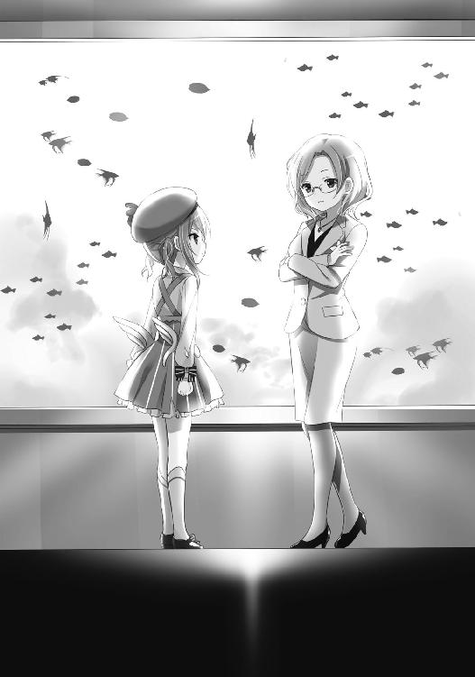
『お変わりなく』にもほどがある、というものだろう。水城も『年齢よりは若い』とよく褒められるが、それは高価な化粧品を駆使した結果だ。目の前にいる『一〇余年間一二歳を続ける女』とは意味合いが全く異なる。
「貴方とは、マジかるウサミーの告別式以来でしたか？」
「その筈だ。私はよく憶えていないが、世界一賢い少女がそう言うなら、きっとそれで正しいのだろう」
「まあ......」
意図的なものかどうかは不明だが、どこか攻撃的な語調だった。
（......ベリーは、わざと怒らせようとしているのか？ それとも、もとからあまり仲良くないのか？）
そもそも、もとアクア！の水城はベリーよりも年上で、魔法少女活動だけでも四年も先輩にあたる。それなのに敬語は、水城が一方的に使っているとは。
さすがに気分を害したらしい。言葉遣いは丁寧なままながらも、僅かに棘が交ざり始めた。
「さすがに二〇代の身で『少女』と呼ばれて喜ぶほど図々しくはありません。『賢い』の方も世間が勝手にそう呼んでいただけですし、私自身としてはあのキャッチフレーズは好きではありませんでした。それでスウィ～ト☆ベリー、本日のご用件は？ 金城マリーさん絡みの件なのは、ある程度想像がついておりますが」
「察しがいいな」
「昔は世界一賢いと言われてましたので」
当て擦りのつもりか、自ら例のフレーズを口にした。
「それに、テレビを見ないので有名な私でも、新聞くらいは読んでいます。亡くなった金城マリーさんはチームメイトのキラキラゴールド！でした。噂は正しかったんです」
「では、私のチームメイト、スウィ～ト☆ハニーだった事は知っていたか？ 第一世代魔法少女の〝花の騎士ハニーゴールド〟だった事は？」
「............いいえ」
――ブブーッ！
水城が『いいえ』と否定した、その瞬間。サクラが両手に抱えていた機械が、耳障りなブザーを鳴らした。
「......？ 今のは？」
「《マジかるウソ発見機》。私の助手が魔法で出した。従って、今のお前の発言は噓だ」
「ああ......分かりました、正直に言いましょう。金城マリー――マリーちゃんの『本当の正体』も、変装して余所の魔法少女チームを掛け持ちしてた事も、私は全部知っていました。初対面から三日後には、自力で見抜いていたのです。ですが本人に頼まれて、今まで誰にも言わずにいました。他のチームメイトにもね」
今度は、鳴らない。真実らしい。
『世界一賢い少女』と呼ばれた彼女ならチームメイトの秘密を見抜き、その上で沈黙する事くらい、さほど難しくはないのだろう。
「アクア！――我々は金城マリー殺しの犯人を追っている。この事件の裏には最悪『鬼魔の復活』や『何者かによる連続魔法少女狩り』という線さえあり得ると考えている。何か〝重大な危機〟が迫っているのではないか、とな。お前の意見を聞きたい」
「意見、と言われましても......。どちらかと言えば、政治的暗殺を疑うべきでは？ 彼女が政府の秘密工作員をやっていたのはご存知ですか」
「知っている。だが、魔法少女で秘密工作員だぞ？ そう簡単に殺せるとは思えん」
「それは、そうかもしれませんが......。しかし私には鬼魔の復活や魔法少女狩りよりも、余程可能性が高いように思えるのです。特に、鬼魔復活だなんて。失礼ながら貴方の願望が入っているような......」
「願望だと？」
「ええ、パラノイアの願望です。『再び魔法少女活動が合法化される世の中が来てほしい』と、そう望む心理が突拍子も無い考えに走らせているのです」
「何が願望なものか。むしろ政治的暗殺こそがお前の願望だろう？ 一〇年前の四月、お前は『魔法少女の使命は終わった』と演説し、それが魔法少女非合法化の原因の一つとなった。今さら『やはり魔法少女は必要でした』と発言を撤回する羽目になるのを恐れているんだ」
「..................」
それまでも二人の仲は良好なものとは言い難かった。
しかし、この瞬間、関係は完全に決裂したと言っていいだろう。もとアクア！こと水城は、少しだけその感情を露わにした。
「スウィ～ト☆ベリー......貴方と私は親友ではありませんでしたが、しかし今の物言いは公正とは思えません」
「ほう？」
「魔法少女の規制は当時の世の中にとって必然的な流れでした。私はその流れを読んだだけです。世間がどう言っていようと、あの引退演説と〝魔法少女禁止法〟は無関係......私が規制を望んだわけでもなく、逆に私が黙っていても規制されていた筈なのですから。だからこそ私は誰からも強要される事なく自ら引退したのですよ。禁止法の四ヶ月も前にね」
「ああ、いい判断だったな。ともかくも『警告』はしたぞ。危機が迫っているかもしれない、と。お前が『もと世界一賢い少女』にならないようにと思ってな。......行くぞ、サクラ」
「は......はいっ！」
「そうだアクア！、さっきの女も、もと魔法少女だな？ 少し話をさせてもらうぞ」
「どうぞ、ご自由に。ところでスウィ～ト☆ベリー、最後に一つだけ訊きたい事――いいえ、言いたい事があります。貴方の連れている、その助手ですが......」
３
「あの......もしかして仲、悪いんですか？」
サクラは我慢できずに質問してしまったが、口に出した直後に後悔した。
こんなの訊く必要の無い質問だ。
「良くは、ない。もとから〝キラキラスターズ！〟は他のチームと関係が良好ではなかったし、それにアクア！は私を嫌っている」
「逆じゃなく？ ベリーがアクア！を嫌いなんじゃなくてですか？」
「そうだ。奴は私を嫌っている。非合法で活動を続ける私に対して、新聞で非難声明と自首の勧告をした。それも二度もだ。今日も大人しく会ってくれるとは思ってなかった」
「そうですか......」
（......ベリーはそう言ってるが、本当はどうなのだろう？ やはりアクア！の演説の所為で魔法少女が規制されたと思っていて、それで彼女の事を恨んでるのでは？ 少なくともアクア！はそう疑っていたような......）
だがサクラはこれ以上詳しく訊ねず、ベリーもこの件については自ら語る事は無かった。
やがて二人は黙したまま、ビルのエレベーターシャフトの中を飛び降りて――、
――どすっ、どすっ
と、下りで作動中のエレベーターの屋根に飛び降りる。
やや乱暴に。わざと。
センサーが反応して、非常停止するように。
ベリーとサクラは、停止したエレベーターの天井を外からこじ開け、内側へと押し入る。
エレベーターの中には、驚いた拍子に撒き散らしてしまったゴミ袋の中身と、二〇代後半の美人秘書。
「〝キラキラスター・トリニティーズ！〟のキラキラレディー・コバルト！だな？ 他人の見ていない場所で話がしたい」
「――っ!? スウィ～ト☆ベリー......!! そう、社長のお客は貴方だったのね。あの人は私の仕事ぶりをアテにしていないから、大事な案件の時は私を部屋から追い出すけど......驚いたわ。まさか、おしゃれ天使と会ってたなんて」
「ああ、まだ世界に驚異は残っている。話を聞かせてもらおうか」
〝星の守護者キラキラスター・トリニティーズ！〟の三人は〝魔法のアイドル戦士キラキラスターズ！〟のサブメンバーであり、異世界の脅威から太陽系を守るガーディアンだ。
ただし、キラキラスターズ！と同じく星の守護者の転生体でこそあったものの、実質的には別個に活動する独立チームだったと言っていい。やや距離感のある同盟チームといったところか。
そして彼女は、遠き海の王キラキラレディー・コバルト！。
本名、海音寺うしお。二七歳。
もとは有名な少女ピアニストだった。そうサクラは聞いている。
しかし、どうやらピアノでは大成しなかったらしく、今では当時のコネでアクアリウム社の社員となっていた。無論、大企業の社長秘書というものは、ピアニストに匹敵する『憧れの職業』なのではあるが。
「コバルト！、昔の仲間たちはどうしている？」
もとコバルト！は、エレベーター内に散乱したゴミを拾いながら返事をした。
「さあ、知らないわ......。もう何年も連絡を取ってないもの」
噓発見機は無音のままだ。
「キラキラレディー・ウラニウム！ともか？ 現役時代は同性愛者だとデマを飛ばされるほどの仲だったろう」
「............いいえ」
「......？ 何が『いいえ』だ？」
「デマじゃないわ。実際に同性愛者だったのよ。でも、あいつが新しい女を見つけて出ていったから......」
「そ、そうか......」
珍しくベリーが狼狽えていたので、サクラは少しだけ驚いた。
（なるほど、まだ世界に驚異は残っているな......）
レアな表情が見られて、得をした気分だ。
「ところでスウィ～ト☆ベリー......テレビで見た時から気になっていたのだけれど、貴方の弟子って、もしかして――」
４
秘書であるもとコバルト！にもアクア！にしたのと同様の『警告』をして、ベリーたちは次へと急ぐ。
どうやらベリーは今晩中に、魔法少女たちのうち居場所の分かる者に、片っ端からコンタクトを取る気のようだ。
「次は、どこです？ また〝キラキラスターズ！〟のメンバーですか？」
「いいや、今度は違う。だが『有名人』だ」
時計は、夜の九時〇七分。
六本木にあるテレビ局、チャンネル７。
その正面出入り口前。タクシー乗り場。
「急いでお台場にやってちょうだい」
作家でありテレビコメンテーターでもある御堂シーナは、他局の深夜ニュースに出演すべく、停車中のタクシーに乗り込んだ。
シーナにとっては金城マリーさまさま、そして犯人さまさまだ。あの女が死んでくれたおかげで仕事の依頼が次々と舞い込んできていた。
もしかすると、このネタでまた本が一冊出せるかもしれない。タイトルは「魔女と疑われた女」だ。上手く行けば往年のヒット作「魔法少女の真実」以来の部数を......。
「それが、その......実は運転なんてできないんです。免許持っていないので。このタクシーは偽物ですし、俺もただの変装なんです」
「――っ？ 何ですって？」
タクシー運転手の言葉の意味を、彼女は理解する事ができなかった。
彼女の後から、トレンチコートの小さな女が乗り込んでくるまでは。
「すまんが相乗りさせてもらおうか」
「ス、スウィ～ト☆ベリー!? じゃあ、これは魔法――!?」
そう。
この運転手はサクラが《マジかるコロロン》の魔力で変身した姿であったし、タクシーも魔法で作ったもの――半実体化した幻だった。
「久しぶりだな、御堂シーナ。〝ワイドモーニング・セブン〟は観ているぞ。お前のコーナーのある木曜日が一番面白い。報道に深みがある」
「それは、どうも......」
御堂シーナは作家でありテレビコメンテーターであり、そして魔法少女研究家。
さらには『もと魔法少女』。
魔法少女チーム〝幻想剣士スターレットガールズ〟のメンバーで、赤の幻想剣士として異世界オデッセイを救った女子中学生だった。
オデッセイに渡った少女は三人だったが、一人は現地の少年と恋に落ち、もう一人は異世界にとって重要な役割を担ってしまったために、それぞれ地球への帰還を拒み――結局、戻ってきたのは、この御堂シーナただ一人だった。
その後、異世界での活躍を書いた「譲れない願い～私はいかに剣と魔法の異世界を旅したか～」「新・譲れない願い～さらなる異世界の侵略と、願いの柱～」や、帰還後の他チームの魔法少女との交流を書いた「魔法少女の素顔」、その続編であり暴露本としての意味合いの強い「魔法少女の真実」といった本を出版。本にテレビに講演会と様々な活躍を続けていた。
ベリーは活動当時には彼女と面識は無かったが、例の〝ワイドモーニング・セブン〟で電話インタビューを受けた事が二度ほどあった。
「ベリー――もしかして仕返しに来た？ 怒ってるの？ まさか、まだ「魔法少女の真実」の事で!? でも、あれはもう七年も昔の本よ？ もともと半分以上ゴーストライターが書いたんだし......それとも先月、貴方の自警活動について『やりすぎ』ってコメントした事!? けど、一五歳の子供の両手足をへし折って渋谷の交差点の真ん中に投げ込むのは、誰が見たって――」
「いいや、そんな話ではない。今日は金城マリーの件で来た」
「金城さんの？」
「そうだ。『魔法少女研究家』であり『業界一の事情通』を名乗るお前の意見を聞きたい」
どちらもテレビに出る時の謳い文句だ。
「金城さんとは何度か会った事があるけれど......でも、あの人はキラキラゴールド！じゃないわ。出版社のパーティーの二次会で話した時、違うと自分で言っていたもの。ただ偶然噂になって、目立ちたいから否定しなかっただけだって。警察の人もそう言ってたわ」
「............そうか」
「そうよ！ インターネットではいろいろ馬鹿みたいな噂が飛び交ってるけど、これが真相よ。私が言うんだから間違いないわ。だから昨日の事件も強盗の仕業よ。私、この業界の事なら何でも知っているんだから！」
サクラは膝に《マジかるウソ発見機》を抱えていたが、ブザーは鳴らないままだった。
どうやら、これが彼女の知っている情報の全てであり、彼女の視点ではこれが真相なのだろう。『事情通』を名乗っていても真実に近づいているわけではないし、むしろ彼女の言うところの『インターネットの馬鹿みたいな噂』の方が真相には近かった。
彼女は何も知らない。
ただ、それだけだ。
「......一応『警告』してやろう。私はこの事件はもと魔法少女全てに迫る新たな危機ではないかと考えている。だからお前も注意するがいい。もしタクシーの運転手が鬼魔だったら、お前は今ごろ《キレイなココロ》を奪われていた。
それから渋谷の件もやりすぎとは思っていない。あの女は自分の女子高で粗悪なドラッグを売り捌き、九人を病院送りにした。お前は『まだ一五歳の子供』と言っていたが、一五歳はとっくに地球を救える年齢だ。自分の行動に責任を取るべきだろう。
我々魔法少女が守りたかった世界は、麻薬の売人が暢気に学校に通う世界じゃない」
「わ、分かったわ、ごめんなさい......。ところで――ずっと気になっていた事、質問してもいいかしら？ 貴方が良ければでいいのだけれど、そこののっぽのお弟子さんの事で......」
「言ってみろ」
「どうして〝マジかるウサミーＳＯＳ〟を連れてるの!? いつ生き返ったのよ！」
またもや同じ質問だ。
『魔法少女が守りたかった世界は、麻薬の売人が暢気に学校に通う世界じゃない』
このフレーズは、前もどこかで聞いた気がする――と、サクラは思った。
確か、テレビだ。一、二年前。
それこそ朝のワイドショー〝ワイドモーニング・セブン〟ではなかったろうか。
さっきの御堂シーナによる電話インタビューだ。
ベリーは『我々が守った世界は、人殺しの暴力団員が朝からステーキを食べる世界じゃない』と言い放ち、さっきの御堂シーナは『世界を守った一員だからといって、世界が自分のものだと思う権利は無い』と応えた。
その時はサクラも御堂シーナが正しいと感じたし、そのやりとりで彼女は株を上げ〝ワイドモーニング・セブン〟のレギュラーコメンテーターの座を勝ち得たというわけだ。
ただサクラもその頃よりは大人になり、また実際に犯罪に巻き込まれたり、ここ数日ベリーの助手として街の様々な汚い光景を見た事もあって、今では、
『――やはりベリーの方が正しいのだろうな』
と思うようになっていた。
少なくとも、ベリーの気持ちは理解ができる。
今のサクラよりずっと年下の女の子たちが命と青春を懸けて戦ったのだ。世界はそれに見合う価値を持つ義務がある。
少なくとも、その子たちが世界を愛する心と同程度には、美しく純粋であるべきだ。
ただの理想論なのは分かっていたが――。
「ベリー、次はどこに？」
「............そうだな、次は――」
ベリーにとって、次は『一番会いたくない相手』だそうだ。
５
視点は、変わる。
時計は、午後一一時少し前。
佐倉や奈々の住むマンションから直線距離で三キロちょっと。自転車で一五分ほどの位置にある閑静な住宅街。
スーパーマーケットやコンビニは少ないものの、代わりに喫茶店やイタリア料理店、輸入雑貨店といった小洒落た店が建ち並ぶ、ちょっとだけ気取った町――そんな中に真白正幸・里子夫妻の家はあった。
白い壁とアーチ形の出窓、三角の屋根という、やや少女趣味の入った家だ。町の雰囲気とよく合っている。
「奈々ちゃん、お紅茶もう一杯いかが？ このお茶、美味しいでしょう。正幸さんの実家から貰ったのよ」
「それじゃあ、もう一杯だけ......」
その真白家に、宇佐美奈々は遊びに来ていた。
ここの夫婦とは、もう何年も前からの友人だ。
夫婦とも二四歳で、一七歳の奈々とは随分歳が離れていたものの、しかし妻である真白里子とは特に仲が良く、親友と言ってもいい間柄。
里子は今日のように夫が出張で留守の日などは、よく退屈凌ぎを兼ねて奈々を家へと招待し、食事やお茶、クラシック鑑賞などをして時間を過ごしていた。
やや上品すぎるきらいもあるが、しかし里子は見るからに『上品な奥様』であり、気障ったらしさは感じられない。
昔と随分変わったものだ。
ときどき、奈々は笑いそうになる。奈々が初めて会った時、里子はまだ一〇代。当時はボーイッシュで快活な――悪く言えばがさつな少女だった。当時を思い出すと笑ってしまいそうになり、実際急に笑い出してしまった事も一度や二度ではない。
そんな時は里子と二人でたっぷり三〇分はただずっと笑い転げ続けるのだった。
「それで、奈々ちゃん――」
里子はカップに紅茶を注ぎながら、柔らかな調子で問い掛ける。
飽くまでソフトに。優しく。
今まさにカップから立ち昇る、紅茶の香りのような柔和さで。
「何を悩んでいるの？」
口当たりは柔らかだが、内容そのものはストレート。それもティーカップの中身と同じ。
この距離感は奈々にとっては心地良い。
「......悩んでるの、分かっちゃう？」
「ええ、当然よ。あたしたちの仲じゃないの。これは、そう......恋の悩みでしょ？」
「............」
奈々は俯いたまま黙っていたが、これはＹＥＳの意味になる。
「例の、お隣の男の子ね？」
「......うん」
宇佐美奈々にとって里子は『大人の親友』であり、大事な相談相手でもあった。
奈々の両親が小三の時に離婚したため、彼女には母親がいない。でありながら彼女がそれを気にせず日々を過ごす事ができるのは、幼い子供にとって必要な『与える母親』の成分を隣家の佐倉の母が補い、思春期の少女にとって必要な『相談相手としての母親』の成分をこの真白里子が補ってくれたからだろう。
一〇歳の時『どうやら自分は佐倉少年が好きらしい』と最初に相談した相手もこの里子。彼と同じ高校に入れるよう勉強を見てくれたのもこの里子だった。
そんな里子なら『奈々が今、恋愛関連の事で悩んでいる』という事くらい、一目で見抜けるのも頷ける。
「でもね、里子さん――普通の恋愛関係じゃなくって、もっと複雑な事情があるの......。というか、ほんとは恋愛の悩みじゃないのかも。もっと複雑で大事な悩みというか............絶対に秘密の悩みなんだけど......」
「まあ......」
本当に話してしまってもいいのだろうか？ 自分だけの秘密にしておくべきではないのか？ ここまで来ても、奈々はまだ思いあぐねていた。
普通の人には絶対に相談できないし、理解してもらう事さえできない悩み。
しかし奈々の姉のお葬式に出てくれて、お墓参りや法事にも欠かさず出てくれる彼女なら、この『複雑で大事な悩み』を理解してくれるかも......。
「............もしかして、奈々ちゃんのお姉さんも関係してる？」
「..................うん」
ああ、やっぱり！
理解してくれるどころではない。この人は、もう『悩み』の中身をある程度察していてくれたのだ。
もしかするとニュースか何かで状況を知り、今夜はそれで家に招待してくれたのかもしれない。奈々からこの相談を引き出すために。
それを思うと奈々は自然と涙ぐみ、同時に秘密を打ち明ける決意も固まった。
「あのね、里子さん、実は――」
――ピンポーン
と、ちょうどその瞬間、玄関のチャイムが鳴った。
あのね、と語ろうとする先を越され、奈々はまた黙ってしまう。
「ああ、ごめんなさい。きっと正幸さんだわ。出張だったのに『奈々ちゃんが遊びに来るのなら』って急いで戻ってくるような事を言っていたもの。
でも、どうせなら、あの人にも聞いてもらいましょ。彼だって関係者なんだから」
ゆっきーこと夫の真白正幸は業界二位の大手玩具メーカー〝ホワイト〟の会長の孫であり、本人も二四歳の若さでありながら同社の開発部長を務めている。
奈々は彼とも仲が良く、佐倉少年を除けば初恋はこの正幸であったかもしれない。
生憎と、ハンサムとは言い難いタイプではあったが。
相撲取りを思わせる筋肉質かつでっぷりとした大男で、顔の表面積のほとんどは真っ黒い髭で覆われていた。そんな具合に容姿のほとんどの部位が強面のそれでありながら、瞳はつぶらで優しく可愛らしい。
そんな熊のぬいぐるみが人間に化けて出たような、愛嬌のある大男だった。
『昔はあんなに美男子だったのに』と里子は彼の話題になる度に言っていたが、今だって（かつてと方向性は違えど）可愛らしいと奈々は思っていたし、妻の里子も心の中ではそう思っていたのだろう。
里子が出迎えのために玄関ドアを開けると、ぬうっといつもの熊髭が現れる――筈だった。
が、違った。
「――夜中にすまんな」
「......苺子！」
おしゃれ天使スウィ～ト☆ベリー。
里子は彼女を本名で呼んだ。一〇年ぶりに再会した彼女を。一ミリたりとも成長していない親友を。当時のように『苺子』という本名で。
「元気なおしゃれ天使スウィ～ト☆ショコラ、お前に話がある」
「ええ、ちょうどいいわ、こっちもよ。そこの弟子の子もこっちに来なさい」
真白里子は、もとスウィ～ト☆ショコラだ。
〝魔法のスウィ～トおしゃれ天使〟は中学一年生の四人組。
ドジで頑張り屋のベリー、大人しい知性派のミルク、元気でおてんばなショコラ、そして秘密ばかりでミステリアスなハニー。
そのうちの二人が、このスウィ～ト☆ベリー（本名、赤石苺子）であり、そしてこのスウィ～ト☆ショコラ（旧姓、黒井里子）であった。
当時のショコラは、よく男子に間違えられた乱暴者であったのに。
「......人は変わるものだな」
「それ、こっちの台詞よ」
二四歳になった真白里子と、一二歳のままのスウィ～ト☆ベリー。
里子は小さいままのベリーを見下ろし、ベリーは背の伸びた里子を見上げ――二人は、互いを『変わった』と言った。
「苺子、どうやったらこんなに変わっちゃうものなのよ？ あんた、やたらと汚れてるけど、ちゃんとお風呂入ってる？ お洗濯は？ ヘンな臭いしたりしないでしょうね？」
「問題無い」
「そうなの？」
「《おしゃれ☆パフューム》がある」
「はぁ？ 香水で誤魔化してるってわけ？ ばっかみたい！ だいたいアレってば催眠ガスよ？ 服に吹きかけるものじゃないってえの！」
ショコラとベリー。真白里子と赤石苺子。二人のおしゃれ天使のやりとりを、サクラはロングソファに座って眺めていた。
（『一番会いたくない相手』とか言っていたけど――）
心なしかベリーは普段よりもよく喋る。
もとショコラこと里子の方も、だ。初対面のサクラは知らなかったが、ここ何年かの里子はこんなに潑溂と喋る事は無かったし、他人に憎まれ口を叩くような事も無かった。結婚前のがさつな里子に戻っていた。
（この人、奈々にちょっと感じが似てるな）
おそらく無意識のうちに影響を受けていたのだろう。
その奈々は今、サクラの真横に座っていたが......。
「......なんで奈々、この家にいるんだよ？」
「いいでしょ、別に！ 遊びに来てたの！ お友達なのよ！」
「お友達って......スウィ～ト☆ショコラと？」
「そうよ！ お姉ちゃんの三回忌の時に仲良くなったの。
お姉ちゃんのお葬式の時は、日本中の魔法少女がわたしんちに集まってたわ。コスチュームのお姉さんたちとテレビカメラでお寺がいっぱいになって――」
葬儀の様子は、サクラもテレビで観て憶えていた。
奈々の姉は〝魔法少女マジかるウサミーＳＯＳ〟こと魔法少女ウサミー。本名、宇佐美実々（享年八歳）。
当時、最年少の魔法少女だった。
この葬儀から半月ほど経った後、宇佐美家は佐倉家の隣に引っ越してきた。メディアや近所の視線から逃れるために、そして過去を少しでも忘れるために。
「でも三回忌の頃ともなると、魔法少女関係者で来てくれる人は里子さんとその旦那さんくらいになってた。わたしの話をいろいろ聞いてくれるのもね。
それ以来、ずっと仲良くしてもらって、両親の離婚の時とかもいろいろ相談に乗ってくれて......。そういう『大人のお友達』がいるって話はしてたでしょ？」
「それは聞いてたけど......でもスウィ～ト☆ショコラだとは聞いてなかった」
「当たり前じゃない！ 魔法少女の正体は秘密なんだから！」
それが漏れたらどうなるか。
彼女の姉は、それで裸で殺された。
あの時の恐怖があるからこそ奈々は〝魔法少女の弟子〟サクラの正体を誰にも内緒にしていたし、心から信頼できる相手でもと魔法少女でもある里子にさえ打ち明けるべきかを悩んでいたのだ。
「ふむ......。ショコラ、質問させてもらおうか――」
ロングソファに並んで座るサクラとそのガールフレンド。
ベリーはその二人に一瞬だけちらりと目をやり、しかし再び里子へ視線を向け直す。
考えてみればベリーにとっては初めて目にする『サクラの日常の姿』だ。目線を向け続けなかったのは、単に興味が無いからだろうか。さもなくば、ある種の眩しさでも感じたためか。
「あれは魔法少女ウサミーの妹だな？ どんな関係だ？ まさかサクラを監視する事で、私の行動を把握しようとしていたのか？」
「バーーーーーーーカ！」
ショコラはひどく雑な否定の言葉を返した。
「あんた、バカぁ？ それ、こっちの台詞よ！ その質問はこっちがするつもりだったんだってば！
あんたの弟子って、ありゃあ何よ？」
「何、とは？」
「なんで〝魔法少女マジかるウサミーＳＯＳ〟なのかって訊いてんの！ ニュースで最初に見た時から、ずうっと気になってたんだから！ コスチュームはちょっと違う感じに見せかけてるけど、ステッキはおんなじだし魔法が全く同質じゃない！ なんで、そんな事になってんの!?」
それは、ベリーとサクラがもと魔法少女を訪ねる度に訊かれていた問いでもあった。
ここまで激しい語調で訊かれたのは初めてだったが。
魔法の効果なのだろうか一般人に指摘された事は無かったが、やはり魔法少女同士では分かってしまうものらしい。
だがテレビ業界人の御堂シーナでさえメディアで『ウサミーと同じだ』と公言しないのは、もと関係者としてのモラルがまだ残っていたからだろう。魔法少女の正体を晒す行為は、今でも絶対的なタブー。それが死んだウサミーの関係者なら尚更だ。
「正体が奈々ちゃんじゃないのは知っていたのよ。最初にテレビに映った時、奈々ちゃんはあたしと一緒に居たから。でも――だったら誰？ ねえ、その子いったい何者なわけ？ まさか生き返ったとか言う気じゃないでしょうね？」
「さあな」
「『さあな』？ どうして『さあな』よ？」
「私も詳しくは聞いていない。魔法少女に正体を訊くのはタブーだろう？」
「バーーーーーカ！ バーーーーーカ！ バカバカバーーーーーカ！ 正体も知らない子供を犯罪につき合わせる方が一億万倍タブーだってぇの！
で、そこのあんた！」
「俺、ですか？」
急に話を振られて、サクラは戸惑った。
「そう、あんたよ、あんた。どうしてウサミーの《マジかるコロロン》なんか持ってるわけ？ それは奈々ちゃんが――」
――と、そこまで口にして、里子は、はっ、と理解する。
奈々の話と、今の彼女の泣きそうな表情で。
「奈々ちゃん......貴方が《マジかるコロロン》を渡したのね!?」
「............うん。わたしが、あいつに......」
「そう......それが、さっきしようとしてた『相談』ってわけか。全部、意味が分かったわ。頭の中で、カチッとピース繫がっちゃった。
さては、あんたが『お隣の男の子』なんでしょう！」
スウィ～ト☆ショコラは頭脳派ではないが勘がはたらく。
それは現役時代から変わらない。一見無秩序なコースで走り続けるだけのマラソン鬼魔ハイランナーの謎を解いたのも彼女だったし、インターネットの動画でお馴染みロックンロール鬼魔デスビートのコンサート作戦を最初に見抜いたのも彼女だった。
「サクラ君っていうんだっけ？ あんた、昔の仲間にちょっと似てるわ。うちの三人目に」
「三人目......スウィ〜ト☆ミルクに？」
「ええ。雰囲気とかが、ちょっとね。それで苺子に気に入られてるのかしら。でも------」
でも、と言いかけの言葉を、ベリーが制する。
「そこまでだ、ショコラ。そろそろ私の話を聞いてもらおう。無駄話は後にしてくれ」
「無駄話ぃ？ これより大事な話、あるわきゃあないでしょう！」
「ある。お前に『警告』をしに来た」
――約一五分後。
「まさか......!! 金城マリーがスウィ～ト☆ハニー!? キラキラゴールド！だけじゃなくて？ ああ、だけど言われてみれば......。あの子、ちょっとおかしかったものね。日常の部分が希薄っていうか、不自然っていうか。
一言言ってやりたいけど――でも、もう死んでしまったなんて......」
事件現場に乗り込んだ時のベリーと同じだ。死そのものよりも、その正体により強い衝撃を受けていた。
ショコラこと里子は、ベリーほど人間の死に慣れていないためか、仲間の死にもそれなりのショックを感じていたようだったが。
「それで......『警告』っていうのは？」
ベリーにとっては、ここからが本題だ。
「ショコラ、我々はこの事件の真相を追っている。最悪『何者かによる連続魔法少女狩り』や『鬼魔の復活』という線さえあり得ると考えている。〝重大な危機〟が迫っているのではないか、とな。それで警告をしに来たのだ」
「魔法少女狩り......？」
「そうだ」
それについての意見は、こうだ。
「バーーーカ」
また『バーカ』だ。
「その『何者かによる』ってのが何者を想定してるのかは知んないけどさ、『魔法少女狩り』なら最初にあんたが狙われるんじゃないの？ なのに、どうしてあんたは無事でハニーが先に消されるワケよ？
鬼魔の復活の方だってそうよ。あり得ないってば。だって〝キラキラジュエル！の封印〟があるのよ？」
鬼魔復活については、皆が口を揃えて同じ事を言う。
これについては実はサクラでさえ口には出さねど同意見だった。〝ジュエル！の封印〟がある限り鬼魔を不安がる必要は無い。
小学校の社会科で、サクラも奈々もそう習っていた。
「あんたがそう願ってるだけなんじゃない？ もし鬼魔が復活してくれれば堂々と胸張って魔法少女やってられるから、それで『そうなりゃいいな』って願ってるんだわ」
「同じ事をキラキラアクア！にも言われた。ただの願望だとな」
「アクア！にも会ったの......？ あの人が言うんなら実際にそうなんじゃない？ 医者の免許も持ってる『世界一賢い少女』なんだし......」
「彼女はそのフレーズは嫌いだそうだ。ともかくも『警告』はしたぞ」
「あたしの『警告』は終わってないわ。あんたの弟子を解放なさい。今すぐ。警察に正式に手配される前に。でないと――」
「サクラ！ 帰るぞ！」
「は......はいっ！」
「待ちなさい！ 話は終わってないわよ！ いいことサクラ君、その女は自分で言ってるほど立派なやつじゃないわ！ 少なくとも、サクラ君みたいないい子っぽい子がついてくような女じゃない！」
「お前に何が分かる！」
ベリーとサクラは、そのまま去った。
窓から。玄関から入って来ていながら、わざわざ窓を開けて。
とっさに里子は追おうとしたが、しかし窓辺に駆け寄る頃には既に二人の姿は消えていた。魔法少女の超脚力ならば当然だ。
後に残ったのは開けっ放しにされたままの窓と、魔法の香水《おしゃれ☆パフューム》の微かな残り香。それと、泣きじゃくる奈々の姿だけ。
「奈々ちゃんが、彼にステッキを......」
「ひっく、えっく、ううう......。ごめんなさい、ごめんなさい......」
「謝る事はないわ。でも、彼は何とかしなきゃ。友達なら、止めないと......」
あたしは止められなかったから――。
里子はそう言おうとしたが、その言葉を口から出すのはやめた。
ちょうどそのタイミングで、玄関のチャイムがぴんぽんと鳴る。
「おおい、里子ちゃん帰ったよ」
「正幸さん......」
今度こそ、夫の正幸だ。
（そうか......彼が帰ってきたから、苺子は慌てて出ていったのね。変身後の超聴覚で、車が来るのが分かったから......）
ベリーは、彼には会いたくないだろうから――。
いつもの熊髭が玄関のドアを開けたのは、その数秒後の事だった。
６
サクラはベリーと共に、再びビルの上を跳ねていた。
（お前に何が分かる、か......）
もとスウィ～ト☆ショコラが、
『サクラ君、その女は自分で言ってるほど立派なやつじゃないわ。少なくとも、サクラ君みたいないい子っぽい子がついてくような女じゃない』
と言った際、ベリーはそう応えていた。
『お前に何が分かる』と。
（それは、どっちの意味なのだろう......？）
その女は自分で言ってるほど立派なやつじゃない、に対して『お前に（私の）何が分かる』の意味か。
それとも、サクラ君みたいないい子っぽい子が、の部分に対して『お前に（サクラの）何が分かる』の意味なのか。
どちらとも取れる返事だった。
「あの......さっき来た車は、ショコラの旦那さんでしょうか？ ベリーも知ってる人なんですか？」
「......何故、そう思う？」
「だって車の音を聞いて逃げたから......。家の駐車場に車が入ってくる音を聞いたから、ベリーは『帰るぞ』と言ったのでしょう？」
「......サクラは賢いな」
そこまで訊いてから『もしかしてするべきじゃなかった質問なのでは』と気がついた。
ベリーの口元は普段以上に固く喰い縛られ、そして普段以上に不機嫌そうだ。
「ごめんなさい。今の質問は無しで......」
「いいや――構わない。あの男は真白正幸。昔の......関係者だ」
「関係者......？」
「そうだ。《おしゃれ☆ピッチ》に《おしゃれ☆ワードプロセッサー》......《エンジェルポシェット》の中身は、ほとんど彼が作ったものだ」
キラキラアクア！が『世界一賢い少女』であったなら、おそらくは彼も『世界で何番目かには賢い少年』だったのだろう。彼の発明品はおしゃれ天使の魔力があって初めて能力を発揮する品ではあったが、しかしその有用性は今もベリーが証明し続けていた。
（よっぽど仲が悪かったんだろうな。もし多少なりとも仲が良ければ、変身魔法用の道具を修理してもらっていただろうに）
それで昨日などは、わざわざサクラを警視総監に変身させていたというのに。
さっき窓から跳ぶ瞬間サクラはちらりとだけ車の方を見ていたが、運転席には熊のような髭面の大男が乗っていた。
（悪そうな顔だったな......。もしかすると、関係者とはいえ悪人だったのかもしれない）
「それでベリー、次はどこに？」
「......ああ、次は――」
１
『サクラ君っていうんだっけ？ あんた、昔の仲間にちょっと似てるわ。それで苺子に気に入られてるのかしら』
スウィ～ト☆ベリーは真白家での会話を思い出す。
ショコラも余計な事を言ってくれた。サクラが『昔の仲間』に似ているなどと。
（......確かに、似てはいるな。それで助手にしたつもりではなかったが）
しかし、知らず知らずのうちに意識はしていたのかもしれない。
過去が深層心理に影響を及ぼすのは珍しい事ではない。一部の鬼魔などは、この心理現象を利用して《ステキなオモイデ》を人々から奪おうとしていた。どうやら《キレイなココロ》の代用品になるらしい。
（しかし、それならば理屈が通るか。あいつに似てるから――それで一〇年一人でやってた私が、急に助手を連れ歩くようになった、と......）
サクラを助手にした事については、ベリー自身も我が事ながら驚いていた。
もう絶対に誰とも組まないと心に決めていたのに――。
（なのに、こんな少年と......）
魔法少女サクラがベリーの前に現れたのは八日前。
初めはベリーも彼を拒絶していた。
いや、最初は『彼』だとさえ知らなかったが。
突然現れた新たな魔法少女に『新手の潜入捜査か？』と疑いの目を向けていたし、そんな疑念を抜きにしても、他人に心を開くというのは長年錆びつかせていた技術だった。
しかし、ちょこちょこと後ろをついて回る彼の熱意を目の当たりにし、出会って四日後の夜ついにサクラを正式な助手に任命する。
『野放しにするのが危なっかしかった』というのもあったし『意外と役に立つと分かった』というのもあった。
『彼に出させた《マジかるウソ発見機》で潜入捜査でないと証明できた』というのもある。
彼を助手にしたのは、そういった冷静な判断の結果だと自分では信じていたのだが......。
「――サクラ」
「なんでしょう、ベリー？」
「お前は、どうして私の助手になろうと思った？」
「............っ!! どうしよう......!!」
「『どうしよう』？ どういう意味だ？」
「感激しているんです。初めて俺の事に興味を持ってくれて」
ベリーとしては今まで興味を持っていなかったつもりはなかったが――しかし、今までこの程度の質問さえしていなかったのだ。無関心と思われていても仕方はない。
「今から一〇日ちょっと前の事です。俺が友達と新宿に遊びに行った帰り、路上強盗に襲われたんです。そこをベリーに助けてもらって......」
「そうか......」
その時の事を、ベリーは既に憶えていなかった。強盗退治などは日常だ。毎日、二、三度。食事より多い回数でこなしている。だが、わざわざそれを口にはしない。少年にとっての『特別な体験』を台無しにする必要はあるまい――そう思う程度の優しさは、このスウィ～ト☆ベリーでも持っていた。
「その時、思ったんです。みんなの為に戦ってるベリーは、なんて立派で素敵なんだろう。自分にもあんな力があれば絶対同じようにするのにって。そんな時、思い出したんです。さっきの奈々が――お姉さんが魔法少女だった事を。それで必死にお願いして、ステッキを借りて......」
「ステッキを借りる......？ 聞いた事のないケースだな」
「よく分かりませんが、できました」
「............ふむ――」
実を言えばベリーは最初、サクラの正体は魔法少女ウサミーの妹なのだと思っていた。
サクラの魔力がウサミーと同質のものだというのはベリーも分かっていたし、妹は過去に一度〝ちっちゃな魔法少女ぷちマジかるウサミーＳＯＳ〟に変身したと聞いている。そう考えるのが当然だろう。つまりは『背の高い、やや男っぽい少女』だと思い込んでいたわけだ。
誤解が解けたのは、サクラのスカートが破れて、彼が男子だと知った時。助手にする前日の事だった。
その時ベリーは、なるほど、と納得した。サクラのきらきら輝く瞳は一〇代の少年特有のものだ。ベリーは過去に、同じ瞳の少年を見た事があった。
「それでベリー、次はどこに？」
「......ああ、次は――」
次は、と言いかけ、しかしサクラの瞳を見つめながら言い直す。
「いや――次はない。今夜はこれで終わりにする」
「えっ......？ いいんですか？ 今夜は、親に『友達の家に泊まって宿題する』って言ってあります。朝までだって平気ですよ」
「いいや、終わりだ。親には『思ったより早く宿題が終わった』とでも言っておけ。続きは明日にする」
残りは、一人で行きたい場所だ。
２
警備員は《おしゃれ☆パフューム》の催眠ガスで眠らせる。
多少荒っぽい手口だが、変身魔法を使えないベリーにとってこれは馴染みの潜入手段。サクラと組む前はいつもこの方法を使っていた。
時計は、深夜〇時五二分。
某国立病院の別棟。
此処は精神科。それも、いわゆる隔離病棟だ。
サクラを家に返したベリーは一人で薄暗い廊下を歩いていた。
本来は関係者以外立ち入り厳禁の、エレベーターを降りた地下の廊下を。
（苦い臭い......。消毒液と湿気、それから薬を飲んだ後の口臭――そういったものの混じった臭いだ。悪臭とまでは言わないが、好きではない臭いだな......）
ひなげし一六号室。
廊下の一番奥、外から鍵の掛かる個室に、彼女はいた。
「――ダックさん、起きているか？」
「............だあれぇ？」
扉の外から声を掛けると、眠たげな返事があった。
いや、扉ではなく窓と呼ぶべきか。全面が透明アクリル製で室内が丸見えになっているような出入り口は、日本語では扉と呼ばないかもしれない。
「......ボクを『ダックさん』と呼ぶってことはぁ、やっぱりボク、ダックさんだったんだねぇ。ここんとこお薬とカウンセリングが効いていてぇ、昔ダックさんをやってたのが幻覚だったかもと思ってたんだぁ」
「いいや、お前は〝空飛ぶダックさん・ＤＥ・ニコルソン〟として地球を救った魔法少女だ。物理的なパワーでは第三世代最強クラスで、巨大隕石の一件はお前の腕力と飛行能力がなければ解決できなかっただろう」
「だよねぇ～？」
〝空飛ぶダックさん・ＤＥ・ニコルソン〟。
第三世代には多種多様な魔法少女が存在していたが、その中でも一番の変わり種が彼女だろう。宇宙魔法のパワーで人間サイズの不細工なデブアヒルに変身するという、人呼んで『愛と青春の空飛ぶダックガール』だ。
見た目の滑稽さに反して異常なまでに強力なパワーの持ち主で、一度敵の計略で〝キラキラスターズ！〟と対決した事があったが、その時はメインメンバー五人全員と互角以上の戦いをしていた。
ただし、今は違う。
変身前である女子中学生、白鳥まひる一四歳。
の、その後の姿だった。
長期の病室暮らしの為に肌は真っ白。手足はがりがりに痩せ、目はおかしな方向を見つめ続けている。髪はほぼ丸刈りの長さに刈り込まれていたが、理髪店ではなくこの病院の職員が散髪したのだろう、ひどく雑な切り方だった。
それから顔もひどい。涎でべとべとになっている。
「髪を切ったのか？」
「にあうぅ？ 長いと、うんこさわった手で髪さわったりぃ、じぶんでひっぱって抜いちゃったりするからぁ。それで、たにさんが切ってくれたのぉ。たにさんはここの職員さんで男の人ぉ。ああ......また、よだれが止まんないよぉ。おしゃべりするとぉ、すぐにこうなるのぉ。きっとお薬のせいなんだなぁ。
それでぇ～............キミはだぁ～れ？」
「おしゃれ天使スウィ～ト☆ベリーだ。憶えているか？ 週末にやっていた魔法少女の寄り合いに何度か顔を出し、そこで顔を合わせた事がある。それからお前の入院直後に一度だけ面会に来た」
「おぼえてるよぉ。暗くてよく見えなかっただけだってばぁ。むかしのことはよくおぼえてるぅ......面会はねぇ、カレーにおっきなじゃがいもが入ってた日だよぉ。キミはさいしょはふつうだったのに、そのうちすっごくいらいらしだしてぇ......。ちゃんとおぼえてるんだよぉ......幻覚でなければねぇ。なぁに、さいしょはいろいろあるけど――でも、すぐに慣れると思うんだぁ。だって、みんなそうだからぁ」
「いいや、入院したわけじゃない」
「ボクもさいしょはぁ、そう言ってたよぉ」
「............」
口を開く度に、独特の口臭がする。薬で荒れた粘膜の臭いだ。
ただしベリーが不愉快なのは、臭いが原因ではなかったが。
「お前に謝らねばならない事がある。魔法少女のウーパーさん・ＴＨＥ・ゴールドバーグだが――」
〝歌うウーパーさん・ＴＨＥ・ゴールドバーグ〟は、その名の通り人間サイズのウーパールーパーだ。ダックさんと同じタイプの魔法少女であったらしく、言葉も喋るし空も飛ぶ。
記録によれば二度ほどダックさんの前に現れて、口喧嘩ばかりしながらも力を合わせて事件を解決したらしい。
「その正体は〝花の騎士ハニーゴールド〟だった」
「でしょお～？」
「ああ、信じなくって悪かった......」
ずっと以前――魔法少女が合法だった時代、彼女たちは土曜の夜になるごとに閉店後の喫茶店に集まり（どこかのメンバーの実家であったらしい）秘密の情報交換会を開いていた。
チームで活動する魔法少女の場合は基本的にはリーダーだけが参加するもので〝おしゃれ天使〟からはいつもはショコラが行っていた。が、たまにはベリーも顔を出した。
ダックさんが〝あの話〟をしたのは、そんな時の事だ。
『偶然ウーパーさんが変身解除するところを見た。その正体はハニーゴールドだった』
その場に居合わせた魔法少女たちは、みんな笑った。笑わない者もいたが、少なくとも信じてはいなかった。
世間では、このダックさんが精神に異常を来したのは、活動終了後の事だと思われている。御堂シーナの著書「魔法少女の真実」でもそう書かれていた筈だ。
九七年の春、事件が全て片付き、彼女に魔法パワーを与えていたアヒル型宇宙人は故郷である宇宙都市アヒルノ市へと帰っていった。
ダックさん用の魔法アイテムを全て回収した上で。
その為、彼女は二度と変身する事ができなくなり、同時に精神の均衡を崩してしまったのだ――というのが、よく知られている話だろう。
しかし実際はそうではない。
彼女の精神は現役時代から少しずつ蝕まれていた。
どうやら世界を救う重責の中で病んでしまったらしい。この事実は魔法少女たちの中では有名で、異世界オデッセイにいた御堂シーナ以外は誰でも知っていた話だ。ベリーも情報交換会の時に、大量の向精神薬を服用する姿を見ていた。
それもあって当時、彼女の『ウーパーさん＝ハニーゴールド』説をまともに取り合う者はいなかったのだが......。
「あのときはぁ、スウィ～ト☆ベリーちゃんとキラキラジュエル！ちゃんがいちばん笑ってたぁ～......ちゃあんとおぼえてるんだからぁ」
「ああ、反省している......」
もしウーパーさんの件を聞いていなければ、ベリーも瞬時には『ハニーゴールドが他の魔法少女に化けていた』とは思い至らなかっただろう。
「みんなが笑ったりぃ、こまったような顔をしててぇ......それでボクが泣きそうになってたらぁ、キラキラアクア！ちゃんがアイスをくれたんだぁ。あの子は、はなしをちゃあんと聞いてくれてぇ......。あの子はいい子だよねぇ。ボク、あの子好きぃ。今でもときどきお手紙出すのぉ。
きょうのおひるに集団作業療法でクッキーの袋詰めをしてぇ、お給料が出たんだよぉ。しはらいはばんごはんのあとだったけどぉ、五一六円になったんだぁ。あしたは社会復帰トレーニングできょうのおかねをもって病院のみんなとスーパーにお買い物にいくからぁ、そのことを手紙に書こうとおもっているのぉ」
「そうか......」
なるほど、床に転がっているクッキーと袋はその作業の余りものなのだろう。
「いいか、ダックさん・ＤＥ・ニコルソン。今、我々には危機が迫っている可能性がある。『何者かによる連続魔法少女狩り』か『鬼魔の復活』か――ともかくも〝重大な危機〟だ。それでお前にも警告に来た」
ベリーは『警告』を真剣に告げた。が、
「......うふふふっ」
ダックさん――もと女子中学生、白鳥まひるは笑っていた。
それはかつて皆がダックさんに向けた笑顔に、ほんの少しだけ似ていた気がする。憐れみやそれ以外のネガティブな気持ちの混じった笑み。ベリーを含む魔法少女たちが、ダックさんを前にして浮かべたそれに。
「おっかしいのぉ......。ボクが夜中に目をさましたらぁ、そこにスウィ～ト☆ベリーちゃんが立っていてぇ、むかしのことをあやまってぇ。やっぱりボクが女子中学生じゃなく魔法少女のダックさんでぇ............そんで、むかしみたいに〝重大な危機〟が迫ってる？」
「そうだ」
「これってぇ、どっからが幻覚？ ぜんぶ？ とちゅうから？ それとも幻覚じゃなくって、ただの夢？ お薬で消える？ 先生に話したらおこられるぅ？」
「いいや......」
いいや違う、と言おうとした。
――だが、それは本当に？
すうっ、と胸に、北風のような不安が吹き抜ける。
ベリー自身がダックの幻覚でない事くらいは分かっているが――しかし、正気を失っていないとは断言できるか？
キラキラアクア！はベリーの警告を『ただの願望』と評した。
医師免許も持つあの賢い女は、ベリーの異常を診断したのでは？
（いや――図々しいぞ、スウィ～ト☆ベリー。もしおかしくなっているとするのなら、一〇年前からずっとおかしくなっていたんだ。あるいは最初から。初めて変身した、あの日から......）
今さら『正気を失ったかも』と不安がるのは、単なる甘えに過ぎないだろう。
「............『警告』はした。私は行くぞ」
「うんっ。つぎはおひるにおいでよぉ。水曜日のおひるにぃ。キラキラアクア！ちゃんにもぉお手紙で『水曜のおひるに来なよ』って言ったんだぁ。集団作業療法がある日だからぁ、お給料とあまったクッキーがもらえるよぉ」
キラキラアクア！の頭脳は一時間に二億ドルを生み出すと言われている。
クッキーを袋に詰めて五〇〇円と余ったクッキーを貰う仕事を喜ぶかどうか、それははなはだ疑問なところだ。
催眠ガスの効き目が切れる前に、ベリーは病院から立ち去った。
（......やはり、サクラを連れてこなくてよかった）
いや――むしろ、サクラにこそ見せるべきであったか？
それは未だに悩むところだ。
奇跡のような確率の偶然に選ばれて魔法少女となり、実戦や激しい訓練によって『一人前の魔法少女』へと磨かれて、努力して努力して、ついには平和をもたらした後。
辿り着くのは果たして、いかなる結末か。
〝空飛ぶダックさん・ＤＥ・ニコルソン〟こと白鳥まひるの姿は、そのサンプルの一つと言えた。
無論、高層ビルにオフィスを構えるキラキラアクア！や、幸せな家庭を築いたスウィ～ト☆ショコラも、同様に一つのサンプルではあったろうが......。
「さて、と――」
ベリーは《おしゃれ☆アンブレラ》を広げながら地面を蹴り、宙へと跳び立つ。
次に会うのは、さらに厄介な相手だ。
３
一九九〇年代の、いわゆる魔法少女黄金時代。
あの頃、魔法少女は大量に存在していた。鬼魔と戦うチームが何組も。
第三世代だけで、五〇人近くになるのではないだろうか？
にもかかわらず『現在、居場所の分かる魔法少女』となると、それほど数は多くない。
皆、日常に戻ってしまった。
ステッキを仕舞った魔法少女を捜すのは、そう簡単な事ではない。ベリーが《おしゃれ☆ワードプロセッサー》を使ってさえもだ。
たとえ居場所を見つけたとしても、そこにいるのはもう『魔法少女』ではなかった。
（ふん......）
ベリーは、歯嚙みした。
最初から知っていた事ではあるが、こうして改めて確認すると胸の奥が苛ついてくる。
（もう、魔法少女はいない......）
ウィッチ・イズ・デッド？ イエス・シー・イズ。
キラキラアクア！水城宇美は成功者だ。世界一賢い少女と呼ばれた彼女だが、今では世界一の金持ちでもある。もう魔法少女だった過去は邪魔でしかないのかもしれない。優秀な頭脳は当時の記憶を忘れる事はないのだろうが。
キラキラレディー・コバルト！海音寺うしおもだ。彼女が魔法と決別したのは、禁止法より前だと聞いている。魔法ではなく自らの力でピアニストとしての道を歩もうとしたのだ。その事はベリーも過去に噂で聞いていたし、心の中で応援もしていた。だが彼女は知らぬ間にその道を諦めていた。海音寺の中には魔法少女もピアニストも、もういない。
スターレットガールズ御堂シーナは問題外。彼女がどんな女なのか、前からだいたい知っていた。それでも数年前〝ワイドモーニング・セブン〟でベリーを叱りつけた彼女は、ひとかどの人物に見えたものだが......。
ダックさん・ＤＥ・ニコルソン白鳥まひるは殉教者だ。今後、彼女を笑う者はこのベリーが許さない。そう決めた。あの子の精神には、まだ魔法少女が残っているに違いない。が、物質的（物理的）な意味では違う。魔法を使う為の道具もない。彼女は現役時代『物質的な意味での力』では最強だったが、その『物質的な意味での力』を一つ残らず失っていた。
それから、スウィ～ト☆ショコラ。
（もう、あの女は......）
もう、あいつは友達じゃない。
一〇年前に分かっていたが、今夜改めてそれを知った。
（里子......）
他にも消えてしまった魔法少女は大勢いる。
〝幻想剣士スターレットガールズ〟のうち御堂シーナ以外の二人は、異世界に残ったままとうとう帰ってこなかった。
〝ホーリープリンセスかぐや〟はお伽噺の子孫ばかりが住むメルヒェンタウンの住人だったが、その住民たちは魔法少女禁止法の制定直後に町ごとどこかへと消えてしまった。一説によればもともとメルヒェンタウンは異世界の町で、本来の世界に戻ったのだという。
〝魔法怪盗アルセーヌキャット〟は禁止法以後も窃盗犯としての活動を続けていた。しかし一九九八年の春ついに逮捕される。しかも彼女は実は魔法少女ですらなく、手品で魔法が使えるかのように見せかけていただけのステージマジシャンの娘だった。
〝魔法少女マジかるウサミーＳＯＳ〟はファンの変質者に殺害された。その宿敵だった悪の魔法少女〝邪悪少女デモんずミータ６６６〟こと三田美沙々（当時八歳）はウサミーの通夜の晩に警察に出頭。更生施設で二重人格の長期治療プログラムを受けている。
戦いの半ばで姿を消した者もいる。ある者は負傷の為、またある者は恐怖のあまり。〝白衣の妖精りるけ１１９番〟などは最終決戦の直前に怖気づき、いきなり行方をくらました。
残りは大抵、ステッキを仕舞って行方不明。
ベリーの危惧する『魔法少女狩り』などがなくとも、魔法少女は絶滅寸前だったのだ。
そして〝花の騎士ハニーゴールド〟は、昨晩死んだ。
今、世界に存在している魔法少女は三人だけ。この夢見るおしゃれ天使スウィ～ト☆ベリーと〝魔法少女の弟子〟サクラ。
さらに、もう一人。
これからスウィ～ト☆ベリーは会いに行く。
《おしゃれ☆アンブレラ》で直線距離二二〇キロメートルを移動して。
その女はもう魔法少女は名乗っておらず、胸の内からも魔法少女の心は失われていただろう。しかし今でも魔法の力を保有っていた。
（......考えてみれば、おかしな話だ。彼女に『警告』とは――）
不死身で無敵の女に『危険が迫っているかも』と心配するとは。
今からベリーが会う相手は、第三世代最強の魔法少女。
謂わば彼女たちの〝女王〟だった。
時計は、深夜三時ちょうど。
場所は、飛驒地方の山奥。
岐阜県神岡村にある自衛隊・米軍共用の軍事施設。
看板には『防衛省・熱力学研究所』とある。しかしここで研究など行われていない事は、世界中の誰もが知っていた。
廃鉱となった鉛鉱山の坑道跡に、核シェルターと大陸間弾道ミサイルサイロの設計技術を応用して建造された、分厚い金属壁を持つ深地下施設。その深度は実に地下一〇〇〇メートルにも及ぶ。
ベリーは厳重な警備を《おしゃれ☆パフューム》の催眠ガスでくぐり抜け、エレベーターで一番奥の最下層へ。
『地下』『エレベーター』『廊下』の組み合わせが一瞬だけダックさん・ＤＥ・ニコルソンの病棟を連想させたが、しかし病棟とは異なり明るく清潔。臭いもしない。天井も高く、だだっ広い。極めて快適な空間となっていた。
それも道理。ここは『王の間』にして『神殿』。
〝女王〟がいつまでも玉座に座り続けていられるよう、常に快適な環境に保たれ続ける――豪華な牢獄なのだから。
「こんばんは、スウィ～ト☆ベリー」
「............こんばんは、エターナル・ブリリアント・プリンセス」
挨拶の返事が一瞬遅れたのは、彼女を〝キラキラジュエル！〟と呼ぶか〝エターナル・ブリリアント・プリンセス〟と呼ぶかで迷った為。
プラス、彼女の姿に驚いた為だ。
「......背が伸びたな、プリンセス」
「現在、ジャスト一四メートル。一眠りするうちに伸びていた。眠ると、いつもこうだ。欠伸のようなものと思ってくれ」
そこにいたのは、身長一四メートルの巨人。
しかも全裸だ。巨大な裸女だ。
肌は月光のように青白く、自ら淡く発光している。体型はほっそりと痩せ、サイズを除けばまるで幼い少女のよう。年齢的には一〇年前よりも若返っているようだ。その全身には頭にも陰部にも、体毛は一本たりとも見当たらない。
そんな女巨人がただ一人、広い地下室にぎゅうぎゅうになって詰まっていた。
体育座りの姿勢になって。
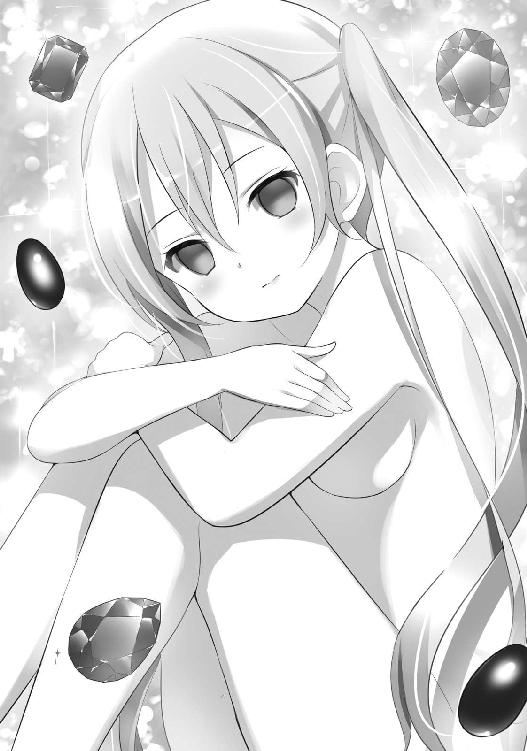
「星の鼓動を聞きながら眠っていた。地底の夜空の下での午睡だ。素粒子がそよ風のように頰に触れ、重力はベッドに詰まった羽毛のよう。ここには魂魄の雑音は届かない」
「詩的だな。起こして悪かった」
「いいや、構わない。待っていろ。今、会話し易いサイズになる」
よっ、と椅子から立ち上がるかのように、プリンセスはサイズを縮めた。
身長一メートル六一センチにまで。
「......いや、失敬。一六一センチでは、まだ高すぎる。これは直前に会った相手のサイズだ」
縮め足りなかったと感じたのか、さらに一段階背を縮める。
今度は身長一メートル四九・八センチ。ぴったりスウィ～ト☆ベリーと同じ高さだ。これがプリンセスにとっては『会話し易いサイズ』という事らしい。姿はベリーの記憶にある彼女と同じ一〇代のものとなり、髪も昔のようなロングのツインテールヘアになっていた。
が、裸のままだ。
すぐ足元に、シルクのイブニングドレスが脱ぎ散らかされているというのに。
「服は着ないのか？」
「ああ。六年前の一一月から、物質的なものに対して興味を感じなくなった」
むしろ拒絶さえしているようだ。
彼女こそが魔法少女たちの〝女王〟。
第三世代で――いいや、世代を超えて『最強』の魔法少女。
その名も、エターナル・ブリリアント・プリンセス。
〝キラキラスターズ！〟のリーダーたる、輝く星のアイドル戦士キラキラジュエル！の最終形態であり前世の姿。と同時に、この太陽系のあらゆる事象を司る〝女神〟だった。
比喩ではなく、本物の神。
この太陽系とその周辺一帯の宇宙を創造したのは誰か？ 鬼魔との戦いで一旦滅んだ地球を、時間を巻き戻す事で再生したのは？ 『命』や『運命』『精神』といった現代科学では測定不可能なエネルギーの中心となる存在とは？
その答えが、この彼女――エターナル・ブリリアント・プリンセス。キリスト教におけるヤハウェイ、仏教における大日如来、ゾロアスター教におけるアフラマズダにしてアンリマンユ、その他世界中の神々のモデルとなった実在の絶対的最高神だ。
強大な力を持ちすぎた彼女を、日本政府は本人同意のもと、地下施設の奥深くで管理する事にした。これがいわゆる〝キラキラジュエル！の封印〟。ここで彼女は鬼魔や異世界からの脅威に目を光らせ、同時に人類の平和を守る抑止力となっていた。このプリンセスはその気になれば一国をくしゃみ一つで消滅させられる、核を凌駕する破壊のパワーを持つのだから。
エターナル・ブリリアント・プリンセスさえいれば鬼魔の復活はあり得ず、また第三次世界大戦も起こり得ない。小学校で習う常識だ。
だが――一人の平凡な少女が、ある日突然魔法少女となり、最終的にはこのような巨大すぎる力に目覚めてしまった。ただの平凡な女子中学生であったのに。望んでいないのに。神のようなどころではなく、神そのものの力と神そのものの座を。
それは慶ぶべき事であるのか？
（キラキラジュエル！――随分『プリンセス側』になっているな......）
昔見た時は、まだ精神は一〇代の少女キラキラジュエル！であったのに。
今では内面まで、かなりの割合でエターナル・ブリリアント・プリンセス。
それは口調だけからでも見て取れた。
「懐かしいな、友よ。君は変わらない」
「......よく言われる。だが、まあ――あんたほどじゃあない」
おそらく神や素粒子のレベルでは、ベリーの変化などほんの些細な誤差にしか過ぎないのだろう。いかにもプリンセス視点での発言だ。
だが人間の視点からすれば、二人はお互い大きく変わった。
昔のジュエル！は当時のベリーとよく似た『ドジな頑張り屋さんタイプ』。
ドキュメンタリー番組を観ていた子供たちからも『どうして、どっちのチームにも似たような子がいるの？』だの『スウィ～ト☆ベリーはキラキラジュエル！の偽ものでは？』だのといった葉書が毎週山のように送られてきていた。
その二人は一〇年で、揃ってこれほどの変化を遂げた。まるで皮肉めいた冗談だ。
「友よ......かつての仲間に巡り会うのは、何度体験しても嬉しいものだ。宇宙に永遠などというものは存在しないが、しかし友情と想い出だけは比較的永遠に近い」
「疑問だな。私には友情が永遠に近いとは信じられない。失った事があるから、そう思う。想い出も同じだ」
「そうかね」
「そうだ。それよりも話がある。あんたに『警告』をしに来た」
「金城マリーこと〝花の騎士ハニーゴールド〟の一件だな。君はその一件を、より重大な危機の一部だと信じている」
「！ 誰かから聞いたのか？」
「いいや、最初から知っていた。私はこの太陽系で起こる全ての事象の中心だ。マリーの死も。彼女がスウィ～ト☆ハニーや、その他数多くの魔法少女の正体であった事も。彼女の変身するキラキラゴールド！が本物の『金星の守護者』の転生ではなく、ラブエネルギー元素変換システムで他のアイドル戦士の装備をコピーしただけの偽者であった事も。全てを知っている。知っていた。プリンセスとして目覚めた時に全て知った」
「ならば、どうして止めなかった？ 知らせてやればマリーは死なずに済んだのに。『友情は永遠に近い』のだろう？」
「私は予知能力者とは違う。ただ私の中で過去・現在・未来が同時に存在しているというだけの話だ。起こる可能性が生まれた出来事は、既に起こってしまったのと同じ事。過去を塗り替える事はできないよ。
それと君が私を訪ねる事も分かっていた。だから今夜は警備が薄く、ここまで《おしゃれ☆パフューム》だけで来られたのだ。私がそうした」
「そうか、感謝する......。だったら真相も知っているのか？ 私が探している真実も？ 危機は迫っているのか？ それとも――私がおかしくなってしまって、危機を望んでいるだけなのか？」
「その質問には回答できない」
「何故？」
「真実が世界を良くするとは限らないからだ。この発言の意味は、君もいずれ理解する。だから今は『ヒント』以外は与えない」
「ヒント？ どんなヒントだ？」
「もう与えた。さあ、そろそろ時間だ。警備本部が異常を察知し、私の世話係兼警備主任の〝ミス・ジュピター〟がやって来る。見つからないよう、急いで帰りたまえ」
「ミス・ジュピター......キラキラグリーン！の事か？ この施設にいたのか」
『木星の守護者』の転生たる、緑の木々のアイドル戦士キラキラグリーン！。
彼女の居場所は《おしゃれ☆ワードプロセッサー》でも分からなかったが、まさかここの警備主任をしていたとは。
（秘密任務だから、データがなかったというわけか......。だが、これは幸運だな）
「できればグリーン！とも会っておきたい。彼女にも話を聞いて――」
「無駄だ。彼女は任務に忠実な軍人だ。前世の頃からな。彼女の手を煩わせたくない。
『裏口』から出ていくといい」
裏口と言ったのはプリンセスなりのユーモアだろうか。そんなもの、神を閉じ込める地下施設に存在する筈がない。出口は入ってきたエレベーターただ一つだけだ。グリーン！もそのエレベーターで降りてくる。
一戦交えなければなるまいか、と身構えたその瞬間――。
光った。ベリーの体が。
いや、光に『なって』いった。
プリンセスや月光と同じく、淡く白い光へと。
そして、その姿と質量を消していく。
瞬間移動だ。
「地下一〇〇〇メートルのこの場所には、ニュートリノでもなくば自在に出入りする事は不可能。しかし、それならば肉体を丸ごとニュートリノに変えてしまえばいいだけの話だ。何にも阻まれる事なく地上へと抜けられる」
「待て！ まだ何も話をしていない！」
「いいや、『ヒント』は与えた。他に語るべき情報はない。
さようならスウィ～ト☆ベリー。君は信じなくとも友情はほぼ永遠だ」
ベリーは素粒子と化して、地下から消えた。
直後。午前三時二五分三九秒。
「ジュエル！、ご無事ですか？ 侵入者のようでしたが」
「心配はいらない。もう帰った」
プリンセスの身長は、未だ一四九・八センチ。ベリーのそれと同じ数字だ。
だが、すぐに目の前のキラキラグリーン！の背丈、一八二センチにまでサイズを伸ばす。いかにも、もとバスケ選手らしい長身だった。
「気に掛けてもらえた事を嬉しく思う。それと、あきらちゃん――」
「はい」
「君との友情もほぼ永遠だ。だから気を悪くしないで聞いて欲しい。
諸君とは............もう、お別れだ」
４
時は進み、朝。
午前七時〇〇分。
「やあ皆さん、おはようございます。朝、最も公正な報道をお届けする〝ワイドモーニング・セブン〟。司会の中島肇です」
司会である半ば芸能人化したフリーアナウンサーの『やあ皆さん』という挨拶で、毎朝この番組はスタートする。
世間では、この番組は『硬派かつ公正な報道姿勢が評価されて、早朝枠では一、二を争う人気番組になった』と言われているが――コメンテーターの御堂シーナに言わせれば、それは違う。むしろ人気の秘訣は、この『やあ』だ。
いかにも堅物そうな背広のアナウンサーがアメリカ人のように馴れ馴れしく挨拶する事で、視聴者が番組との距離感のバランスを崩し、テレビから目が離せなくなってしまう。それがシーナの分析する、番組の人気の秘密だった。
そして最初の『やあ』の二文字を終えたら、すぐにまた堅苦しい普通のアナウンサーの口調に戻る。これもギャップを強調しつつ安心感を与える巧妙な手口だろう。
（それさえ分かっていれば、司会は誰でもいいのよね......）
御堂シーナは、密かに司会の座を狙っていた。このフリーアナはギャラが高額すぎて、テレビ局は持て余し気味になっているらしい。前にプロデューサーと飲んだ時にそう聞いた。だったら自分にもチャンスがあるのでは？
金城マリーが死んでくれたおかげで、しばらくは自分への注目も高まるだろう。ここで上手く立ち回れば、もしかして......。
こんな時、御堂シーナは『昔、魔法少女をやっておいてよかった』と思う。
「――まずは政治関連のニュースから」
司会がニュースを読み上げていく。
まずは政治から。次に金城マリーの件。ここからがシーナの出番だ。
そうだ、昨夜スウィ～ト☆ベリーと会った話もしてしまおう。皆、驚くに違いない。と同時に皆、私が『わざわざベリーが情報を聞きに来るほどの事情通』であると再確認するに違いない。いっそベリーの相棒が生き返ったマジかるウサミーだという話もしてしまおうか？ いやいや、そのネタは予定通り次回の『深刻化する犯罪の低年齢化』まで取っておくべきだ。欲をかいて手持ちの弾を使い尽くしては元も子もないだろう。
そんな考えを頭の中で巡らせていると――。
「......久しいな、御堂シーナ」
不意に、声を掛けられた。
頭上から。座っているシーナの真上から。
宙に浮かんでいた、その女から。
「――――っ!? キラキラジュエル！!!」
声の方向を見上げれば、そこにはキラキラジュエル！――エターナル・ブリリアント・プリンセスの姿があった。
しかも、裸で。
現在プリンセスの身長は一八二センチ。シーナはこの数字の意味を知らなかったが、これは直前に対面したキラキラグリーン！の背丈と同じ。直前に会った人間と同じ背丈になるのは、一種の癖のようなものだった。やがてプリンセスは、御堂シーナと同じ一五四・六センチにまでサイズを縮める。
「御堂シーナ――君は今、司会の話を聞いていなかったな？ 人の話を聞かないのは、君の昔からの悪い癖だ。しかし、それさえも懐かしい。ここ数日誰かに逢うごとに似たような発言をしているが......やはり想い出と友情は比較的永遠に近いものであるのだ」
「どうして、ここに......!? どうして裸で!?」
「テレビで女性の陰部がタブーなのは知っている。だが、短い時間だ。許して欲しい」
スタジオの全てのカメラが、プリンセスへと向けられていた。
どうやら自分にだけ見える幻ではなく、実際にここにいるという事らしい。
でも、どうしてこのスタジオに？
「実のところ、どの番組でも構わなかった。だが折角であるから、君の番組にしようと思ってね」
「それは、どうも......」
運がいい。生ける抑止力たるエターナル・ブリリアント・プリンセスが、全裸とはいえ、自分を選んでテレビに出演するとは。中島さん、ざまあ！ これで来期からの司会は交代決定だ。
シーナは、心の中で小躍りしていた。
この時までは。
（あれ......？ でも、どうやってここに来たの？ エターナル・ブリリアント・プリンセスは地下施設に閉じ込められていた筈じゃ？）
「君の疑問は理解している。どうやって〝封印〟とまで呼ばれる地下施設から脱出したのか、だろう？ だが、それは世間の大きな誤解の一つだ。
私は閉じ込められていたわけではない。ただ誰も私の力を悪用できないよう、自分からあの施設に閉じ籠もっていただけの事。必要とあらば、こうして外にも出てくる。
それよりも皆に大事な話がある」
彼女は、自分へと向けられているカメラとマイク、そして電波の向こうで自分を観る全国の視聴者たちへと目線を向ける。それぞれが『プリンセスは自分と同じ背丈だ』と感じていた。
そして、告げた。
「諸君らの存在は奇跡そのものだ。
無限に近い広さを持つ宇宙の、この星で。無限に近い長さを持つ時間の、この時代に。諸君らが生まれ育ち、隣にいる誰かと巡り会う。これはまさに天文学的奇跡。この私でさえもミラクルロマンスと言わざるを得まい。
そんな奇跡に溢れる星の守り手であった事を、この私は誇りに思う。時間そのものが消滅するまで記憶に残し続けるだろう。だが――」
この『だが』の後にいかなる言葉が続くのか、誰もが既に察していた。
少なくとも第一カメラのカメラマンはそうだった。だから手元は震え、画面もがくがく上下に揺れる。テレビにはその揺れる画面が映り続けた。演出的な意図はない。ただ、誰も『カメラを切り替えろ』と指示を出さなかっただけだ。皆が同じように震えていたから。
エターナル・ブリリアント・プリンセス。
太陽系を守護する女神。
鬼魔と第三次世界大戦から、我々人類を守ってくれる。
この番組では彼女を『核を上回る大量破壊兵器』『自衛隊・在日米軍に次ぐ第三の軍事力』などと否定的な言葉で呼んだ事もあるが、しかし、それは『それでもプリンセスは世界を守り続けてくれる筈だから』という確信（安心）に裏づけられた卑怯な誹謗に過ぎなかった。
そのプリンセスは皆に告げた。
これは、別れの挨拶だ。
「だが――もう、お別れだ」
エターナル・ブリリアント・プリンセスは白い光に包まれ、そして消えていく。
この地上から。地上全ての生命と物質に別れを告げて。
人類を見捨てて去ったのだ。
１
素粒子となったスウィ～ト☆ベリーは、空間を不確定性原理的に漂っていた。
いや――水にたゆたうような感覚ではあるが、おそらくは超光速で移動をしていたのだろう。少なくともベリーにはそう確信できた。
水死体になって漂流するようなこの不快感。超光速でなくば説明がつかない。
それに、無闇に感傷的になる、この気分も。
（原子物理学的走馬灯というやつだな......。魔法でワープする時に昔の夢を見る現象だ。これがあるから空間移動は嫌いなのに......）
ベリーは瞬間移動の超空間で、過去の夢を見ながら眠る――。
ウィッチ・イズ・デッド 魔法少女は、死んだ
ウィッチ・イズ・フォールン 魔法少女は、落（堕）ちた
ウィッチ・イズ・デッド？ 死ぬのはどっちだ？
ウィッチ・イズ・フォールン？ 先に裏切るのは？
ウィッチ・イズ・デッド 魔法少女は、死ね
ウィッチ・イズ・フォールン 魔法少女は、落（堕）ちろ
安っぽいメロディーが聞こえる。
やはり安っぽい上に、英語的に正しいかどうかすら危うい歌詞を乗せて。
これは一発屋ロックバンド〝デスビーツ〟のヒット曲〝Witch（Which）is dead ?〟。
一一年前の流行り歌だ。とすれば、今見ている夢はその当時の夢以外にあり得ない。
発表から僅か一ヶ月で、この歌は禁止されたのだから。
（そう......〝デスビーツ〟のボーカルは鬼魔だった。ロックンロール鬼魔デスビート。歌を使って世論を反魔法少女に誘導しつつ、コンサートに来たファンたちから《キレイなココロ》を奪う作戦だった）
その作戦は、ほぼ成功していた。
一〇代の若者たちは皆、魔法少女たちに激しい不信感を抱き『魔法少女たちは人類の敵だ』と声高に叫ぶようになって、そこから『むしろ鬼魔と仲良くすべき』『今すぐ戦いをやめよう』などと主張する者まで現れていた。ちょっとした反戦ソングの様相を呈していたが、もともと九〇年代はそのような主張が通り易い時代ではあったのだ。
しかしベリーたち〝おしゃれ天使〟の四人は、〝デスビーツ〟でキーボードを担当する女性ミュージシャンと偶然知り合い、そこからこの曲の陰に潜む鬼魔の陰謀を突き止める。
陰謀を突き止めた後は、お決まりのパターンだ。
四人で変身してコンサート会場に乗り込み、鬼魔を魔法のビームで灼き殺した。コンサート会場にはテレビカメラが来ていたため、その時の戦いは撮影されて今でもインターネットの動画として残っている。
（だが、この事件――厄介なのは、その後だった。観客もテレビスタッフも帰った後......）
ほんの僅かなタッチの差。
やはり偶然、メンバーのクラスメイトが〝デスビーツ〟のおっかけをやっていた事から鬼魔の陰謀を突き止めた魔法少女チームがあった。
それは〝魔法のアイドル戦士キラキラスターズ！〟。
ゴールド！は不在だったが、その分何人かサブメンバーが入っていた。
「あ～あ、ドキュメンタリー撮ってるテレビ局の人たちが可哀想！ あたしたちの大活躍を撮影できる筈だったのに、貴方たちが出しゃばったおかげで段取り全部台なしじゃない！」
そう言ったのは赤い火のアイドル戦士であり、メンバー一の気の短さでも有名なキラキラローズ！。
彼女が言うには、
『〝デスビーツ〟が歌い終わる → 急にステージの照明が落ち、会場騒然 → 再びライトが点くとそこには〝キラキラスターズ！〟が！ → レコード会社が用意したイメージソングを一曲（口パクで）歌ってから鬼魔と戦闘』
という段取りであったらしい。九六年のこの時期ともなると鬼魔との戦いは魔法少女側が圧倒的有利になっており、このような『遊び』を仕込む余裕もあった。
同時に『縄張り争い』をする余裕も、だ。
買い言葉でローズ！に啖呵を切ったのは〝おしゃれ天使〟で一番喧嘩っ早いショコラだった。この陰謀を真っ先に察知したのも彼女であったし、当然の行動ではあったろう。
「バッカじゃないの！ そんな風にグズグズしてるから、あたしらが出張る羽目になったんじゃない！ 妙な言い掛かりつけないでもらいましょうか！」
「はァ？ 不人気のパクりチームが、何を一丁前に！」
「へぇ、じゃあ人気チームの不人気メンバーはいったい何丁前なんでしょうねぇ？」
この一件は〝おしゃれ天使〟側の視点では『一方的に因縁をつけられただけ』という形になる。しかし〝キラキラスターズ！〟側にも実は『ショコラたちが先走ったために、裏で指揮をしていた敵幹部に逃げられ、つい厭味を言ってしまった』という事情があった。
こうして二つのチームは一触即発。
互いに身構え、魔法を撃ち合う直前にまでなっていた。もし誰かに見られていたら〝デスビーツ〟の曲以上に反魔法少女世論を搔き立てていた事だろう。
（だが、この状況を収めたのは――）
「やめてよ、みんな！」
当時まだプリンセスではなかったキラキラジュエル！。
輝く星のアイドル戦士だ。
「魔法はね、喧嘩をするためにあるんじゃないよ！ 人を幸せにするためのものなの！ ずっと前から言ってるじゃない！」
魔法は、人を幸せにするためのもの。
ジュエル！やベリーたち『戦う魔法少女』を否定しているようで、しかし逆に本質を突いた言葉だ。彼女たちの魔法のビームも、第一・第二世代の魔法も変わらない。魔法は誰かを守り、幸せにするためのもの。少なくとも、そうであるべきだったろう。
ショコラとローズ！はもう二言三言ずつ憎まれ口を叩いたものの、チームとしては両者はその場で和解。これ以上の騒動に発展する事はなかった。
（一見頼りないが、印象に残る子だったな。あの時は、さすが名門チームのリーダーと感心したが......）
しかし、彼女はもういない。
魔法少女のキラキラジュエル！を捨てて、太陽系の女神たるエターナル・ブリリアント・プリンセスとなってしまった。
それにベリーはまだ知らないが、そのプリンセスとしてさえも、もう......。
――と、そこで超光速の夢は終わる。
瞬間移動も終わる。
気がつけばベリーは新宿。いつもの隠れ家の中だった。
時計の針は三時二五分。地下施設で光に包まれてから時間は一秒たりとも過ぎていない。だが、それは彼女の腕時計の中だけの事。隠れ家に置かれた安物のデジタル時計は、既に午前七時の三〇秒前。
外も明るい。もう朝だった。
つまりは『瞬間移動』どころではなく、何時間後かの未来にタイムワープさせられたという事らしい。プリンセスの魔力ならば時間を捻じ曲げるくらいはお手のものだ。
（......とどのつまりは、四時間半掛かって移動したのと同じだな。次に姿を見かけたら文句の一つも言ってやらねば）
原理はともかく、結果として時間を損した事になる。《おしゃれ☆アンブレラ》なら一時間と掛からないのに。スウィ～ト☆ベリーは顔をしかめた。
（七時か......）
ポータブルテレビを点けると、ちょうど〝ワイドモーニング・セブン〟が始まった。
今の時間帯なら、この番組が一番正確な報道だ。
ベリーが次にプリンセスの姿を見たのは、たったの五分後。
テレビ画面の中にだった。
２
――ぴぴぴぴぴぴぴぴぴ♪
「ん......」
同じく午前七時〇〇分。
真白家の客間の布団の中で、奈々は携帯電話のアラームとトーストの匂いで目を醒ます。
瞼は、まだ赤い。昨夜泣き続けたから腫れていた。
「奈々ちゃん、起きた？ もう泣きやんだ？」
「里子さん......。うん、もう平気......たぶん、だけど......」
昨夜は、随分取り乱していた。
『あの時乱暴されてりゃよかったのに』だの『それなら、少なくともこんな事にはならなかった』だのと口走った記憶もある。正幸の前であんな話を口にしたのかと思い返すと、恥ずかしくて死にそうだ。
（でも――あんな風に泣いたのって、無意識ではあるけど、里子さんに叱られたくないからだったんだろうな......。『どうしてステッキを他人に貸したんだ』って叱られたくないから。それで誤魔化すために泣き喚いたんだ。我ながら、ずるくて嫌なやつ。クラスの馬鹿な女みたい......）
「......里子さん、わたしの事、怒ってる？」
「う～ん......怒ってないわけじゃあないわ。でも、お説教は今度でいいわ。反省はしているようだし、どう悪い事をしたのかもだいたい分かっているみたいだもの」
「そう......」
「それより、もう朝ご飯ができてるわよ。早く起きておあがりなさい」
「うん、食べる」
今朝は、この家から学校に行く予定だ。普段より急がないと遅刻してしまう。
奈々は手早く着替えると、朝食と正幸の待つリビングへと急いだ。
「......おはよう、正幸さん」
「お早う。少しは元気になったかい？」
「うん......。昨夜はごめんなさい。みっともないところを見せてしまって......」
「いいからお食べよ。今朝は久しぶりに僕が作ったんだ。ほら、このオムレツの見事なこと！ 里子ちゃんじゃ、こうは綺麗にできないぞ」
里子の夫である正幸は、白い歯を見せてにっこりと笑う。相変わらずの熊髭で、目元以外は強面そのもの。しかし笑顔は素敵だった。
会社では『あの人が笑うと肉食動物が吠えたみたいでもっと怖い』と言われているらしいが、少なくとも奈々と里子だけは愛らしいと思っていた。
「あら正幸さん、朝食の時にテレビなんて点けてお行儀悪い。しかも、こんな報道ぶってるだけの品のない番組なんて」
「？ いつも観てるじゃないか。どうして今朝は駄目なんだい」
「馬鹿ね」
里子は声を潜めた。
「今日は木曜で御堂シーナのコーナーがある日よ。また苺子と弟子の話をするかもしれないじゃない。今朝の奈々ちゃんの前でそんなの観られる？」
「ああ、そうか」
内緒で話していたつもりなのだろう。しかし耳の良い奈々には薄ら会話の中身が聞こえていたため、申し訳のない気持ちでいっぱいになってしまった。
正幸はテレビを消すべくリモコンに手を伸ばす――が、しかし途中で、手は止まる。
里子も。奈々も。皆、動きを止めた。里子などは行儀悪く、オムレツを食べようと口を開いた状態のままで動きを止めてしまっている。まるでテレビの静止画のように。しかし逆にテレビ画面の中だけは淡々と動き、音声を発していた。
エターナル・ブリリアント・プリンセスの別れの言葉を。
『だが――もう、お別れだ』
全ての生命と物質に対する、あの別れの挨拶が。
画面の中で、プリンセスは白い光に包まれ消えていく。
おそらくは地上から。いいや、おそらくは物質界そのものからも。
人知の及ばぬ場所へと去っていってしまったのだろう。
人々にとっては生ける抑止力、真白夫妻にとってはかつての友人でもあったキラキラジュエル！ことエターナル・ブリリアント・プリンセスが。
「......正幸さん、奈々ちゃん、朝食をゆっくりいただきましょう」
精一杯の強がりだ。
「今日はきっと会社も学校もお休みよ」
３
やはり、同じく午前七時〇〇分。
都内某所にある、防衛省・第二熱力学研究所。飛驒の第一研究所は実質上プリンセスを閉じ込める独居房に過ぎなかったが、こちらは本当に研究施設。
一つ噓があるとすれば、それは『熱力学』の部分だろう。
ここは、一定レベル以上の規模の国家ならばどこの国にも存在する『魔法を科学的に解析するための研究施設』だ。
「所長、早朝に申し訳ありません。なにぶん忙しく、他に空いている時間が無かったもので」
「いやいや、構いません！ こちらこそ恐縮です！」
第四解析室。
いたのは二人。所長と呼ばれた初老の男と、もう一人。
もとキラキラアクア！であり巨大グループ企業アクアリウム社の代表取締役社長でもある水城宇美。
ただし今朝は天才経営者としてではなく『世界一賢い女』兼『もと魔法少女』として招かれていた。
それも極秘で。
秘書も連れず、車も自分で運転して。
『世界一賢い』と同時に『世界一の金持ち』で『世界一多忙』と呼ばれる女が誰かと秘密裏に会おうとすれば、自然とスケジュールには無理が出る。この髪の薄くなった五十男も、自分の半分程度の年齢でしかない女の都合に合わせざるを得なかった。
水城宇美の頭脳には、そうするだけの価値がある。
そして解析室の大机。
そこに並べられていたのは――、
『キラキラゴールド！用のスターアイドルスティックとコスチューム』
『ひみつのおしゃれ天使スウィ～ト☆ハニーの《おしゃれ☆アンクステッキ（イエロー）》』
『黒頭巾こと仮面プリンセスハッチちゃんの杖とマスク』
『黄金の騎士フェアレディの剣と兜』
『ウーパーさん・ＴＨＥ・ゴールドバーグの帽子』
いずれも金城マリーこと〝花の騎士ハニーゴールド〟のマンションに隠してあった魔法少女の装備だ。
スウィ～ト☆ベリーがクローゼットの中で発見した以外のものもあり、中には鬼魔幹部の武器までもが交じっていた。
もちろんハニーゴールド自身の『ラブエネルギー元素変換システム』も。
「所長、結論から申し上げます」
これら魔法の装備を前に、水城は告げた。
「残念ですが、この装備は皆、再利用不可能です。ただの玩具と同じです」
「やはり......。しかし、これらは『精巧にコピーされた本物』なのでしょう？ 壊れているようにも思えませんが」
「そんな問題ではないのです。確かにこれらはラブエネルギー元素変換システムで造られた、ある意味『本物』と呼べる装備です。あのシステムはイマジネーションを実体化させるパワーを持っていますから、内部の構造まで本物と同じ。しかし、だからこそ、なのです。
ご存知のように魔法少女というのは『選ばれた少女』だけが変身し、その力を使う事ができるものですから。喩えば『キラキラゴールド！用のスターアイドルスティックとコスチューム』は『金星の守護者』の転生でなければ使えませんし、『仮面プリンセスハッチちゃんのマスク』は鉢かぶり姫の子孫でなければ使えません」
「ハニーゴールドは、そのどちらでもありませんが......」
「それもまた元素変換システムの力です。自らを元素ごと組み換える事で『金星の守護者』の転生や、鉢かぶり姫の子孫、天使に選ばれた少女などに『変身』していたのでしょう。普通は魔法でも難しい技術ですが、ハニーゴールドと彼女のシステムには可能でした」
水城宇美は表面的には笑顔を保ち続けていたが、内心では苛ついていた。
他人の装備を使えない事など、魔法少女研究の初歩だ。この新任の所長は、その程度の事も知らずに責任者を務めていたのか。
もし、そのような事が可能だったならば、世界各国は諜報機関をフル活用して装備を盗み出していただろうに。
『他人の装備で魔法は使えない』
これは原則中の原則で、例外はごく稀にしか存在しない。
「絶対に再利用は不可能でしょうか......？」
「不可能です。どうして、それほどまでに念を押すのですか？ 魔法少女の軍事利用でもお考えで？ そんな事は私もプリンセスも許しませんよ」
これもまた原則中の原則だ。
『魔法少女を軍事利用するのは難しい』
理由は、魔力の源でありかつて鬼魔たちが狙った《キレイなココロ》。
この心の中にある超エネルギーは持ち主の精神状態に左右され易いため、ストレスの多い軍事関係での利用は困難だった。一歩間違えれば暴走事故の危険もある。
唯一の軍事利用例は、死んだハニーゴールドだ。彼女は『アンドロイド』と揶揄されるほど、強靭な意志の持ち主だった。実際に人造人間だったという説まである。しかし、そんな彼女でさえ気が向いた時以外は任務を断っていたらしい。魔法少女というのは、それほど扱いの難しい存在だったというわけだ。
さらに言えば神であるエターナル・ブリリアント・プリンセスは魔法の軍事利用を望まない。かつて某国が魔法少女を軍事顧問にスカウトしようとしたが、翌朝その国の軍事政権の高官たちは全員赤ん坊になっていた。プリンセスの怒りを買ったのだろう。
そんなリスクを負うよりは現代科学の方がいい。
科学で魔法を再現する事は『ある程度ならば』可能であり、既に実用化もされている。喩えばＦ22ラプター戦闘機は制限装置を解除する事により三機でハニーゴールドの戦闘能力を上回る。また隕石由来のレアメタルを部品に用いたパソコンや携帯電話は既に一般でも広く用いられ、その便利さは証明済みだ。いずれも水城の頭脳の賜物だった。
......といった話もまた魔法少女研究の初歩であり、水城が最初にこの所長と会った際、念入りにレクチャーした点であったのに。
「お忘れで？」
「い、いえ――水城女史、そうではありません！ 魔法少女の軍事利用だなんて！ 我々が危惧しているのは、むしろその逆なのです」
「逆？」
「はい......。ハニーゴールドの装備ですが、実はその、幾つかが――」
エターナル・ブリリアント・プリンセスの消失について報告を受けたのは、ちょうどこの数分後。
職員からの報告を受け、所長は泣きそうな顔で狼狽えた。
ストレスで残りの髪が全て抜け落ちるのではないかという勢いで。
「......それでは、失礼します。子供が待っておりますので」
混乱する所内を尻目に、もとキラキラアクア！水城宇美は研究所を去った。
「どうしました、お養母さま？」
「いいえ、何でもないわ。今日は幼稚園はお休みよ。どうせ休園に決まっているもの」
自家用車の窓から見る限りでも町はパニックを起こしている。この調子ならば、きっとバスや電車も運行停止になるだろう。
生ける抑止力がテレビの生放送中に地球から去れば、この程度の騒ぎは起こる。
とはいえ水城宇美の見立てでは、このパニックはそこまで長くは続かない。一般市民レベルでは沈静化まで半日程度。午後三時には皆、普通に生活をしている筈だ。
それまで都内の各種企業はその機能を四一％程度低下させるであろうし、彼女のアクアリウム社も例外ではないだろうが。
「今日は会社の育児室で過ごしなさい」
「はい、お養母さま」
五歳になる養女をチャイルドシートに座らせて、水城は車を走らせた。
４
〝彼女〟の事は、よく知っている。
これは『世界一賢い少女』だからではなく、単に友人であったからだ。
水城宇美は、思い出す。一五年前に初めて出会った時、彼女はまだエターナル・ブリリアント・プリンセスではなかった。変身前だったから、キラキラジュエル！ですらない。普通の中学二年生だ。
水城自身も、まだキラキラアクア！ではなかった。成績優秀で天才と名高いが、しかし友達のいない陰気な子。ある種の問題児だったと言っていい。
そんな水城に持ち前の人懐っこさで話し掛けてきたのが、あの少女。
星城しずく一四歳。
同じクラスの『勉強のできない、おっちょこちょいでお人好しの女の子』だ。
水城にとって初めての友人だった。星城しずくは水城と逆で、勉強もスポーツも苦手だが明るく元気で友達は多かった。
やがて、水城は『水星の守護者』の転生であるアイドル戦士キラキラアクア！の力に目覚め、またしずくもキラキラジュエル！だったと知る。
彼女が「友達になろう」と近づいてきたのは戦士の同朋を増やすためだったらしい。ショックを感じはしたものの、同じ秘密を共有する仲間になれた事は嬉しかった。
その後〝キラキラスターズ！〟はメンバーを増やし、水城の仲間は増えていく。
が、それでも一番仲が良かったのはジュエル！こと星城しずく。水城は常に頭の良し悪しで他人を評価してきたが、彼女だけは別だった。心の底から尊敬していた。
ある日突然戦士に選ばれ、人類のために戦うなどという重責を背負わされたというのに、彼女は常に明るかった。毎日学校に通い、友達と遊び、恋もしていた。『将来は何になろうか』と夢も見ていた。鬼魔の侵略と地球の危機を知っていながらだ。
キラキラジュエル！――いや、しずくがいなければ、水城やチームメイトたちは重責に押し潰されていたに違いない。精神科病院のダックさんは、もう一つの自分の姿だ。〝キラキラスターズ！〟が五年間も戦えたのは、彼女が率先して〝戦士〟ではなく〝人間の少女〟であろうとし続けてくれたおかげだろう。
今でも彼女の言葉を思い出す。
『魔法はね、人を幸せにするためにあるんだよ』
『自分が難しい顔をしてちゃ、みんなも楽しい顔はできないじゃない』
『私はみんなに笑顔になってほしい。だから自分も笑顔でいたいの』
何気ない一言一言が、残らず水城の心に染み込んでいる。
どれも笑顔で言っていた言葉だ。
（でも、それも途中まで......）
九七年の三月。ジュエル！は鬼魔界の女王であるプリンセス・オブ・ダークネスと戦うために、前世の姿である『太陽系の女神』エターナル・ブリリアント・プリンセスに変身する。
それまでも鬼魔の大幹部との戦いでは度々この姿になってはいたが、しかし敵の女王の力はあまりにも強大すぎた。ジュエル！はこの強敵を倒すために、前世の真の力に覚醒し......そのまま戻れなくなってしまったのだ。
決戦に勝利したものの、彼女が変身前の名を名乗る事は二度となかった。
九七年の四月上旬頃までは中身はまだ星城しずくだったが、やがて心の中までプリンセスになっていく――。
さらには、その翌々月の六月、彼女は各国の核廃絶と大規模軍縮を条件に、地下施設で暮らす事に同意し、世俗と関係のない存在となってしまった。
あれほど〝人間の少女〟であろうとし続けていた彼女が。
（そんな彼女も、もういない......）
プリンセスは世界を捨てて、消えてしまった。
水城の推測だが、彼女は人間としての物質を捨てて純粋な『現象』となったのだろう。エターナル・ブリリアント・プリンセスという現象――本物の神に。
（さようなら、しずくちゃん......）
「お養母さま、泣きながら運転するのは危険です」
「ええ、そうね......。もう泣き止むわ......」
（もう泣き止むわ......。友情と想い出だけは永遠に近いと信じてるから......）
泣くほどではないが、他にも思い出す事はある。
喩えば〝花の騎士ハニーゴールド〟との会話だとかを。
「よォ――アイツの話、どこまで正しいと思ってる？」
確か、あれは九六年。ロックンロール鬼魔デスビートの事件の時だ。
アクア！たち〝キラキラスターズ！〟はスウィ～ト☆ベリーたち〝おしゃれ天使〟と揉め事になり掛けた。しかし、ジュエル！がすぐに、
『魔法は喧嘩をするためにあるんじゃない。人を幸せにするためのものなんだ』
と皆を執り成してくれたため、その場は何とか事なきを得る。
そして皆が帰ろうとしたその時、ハニーゴールド――その時はおしゃれ天使スウィ～ト☆ハニーの姿をしていた――はひそひそと声を潜めて、アクア！に訊ねた。スウィ～ト☆ハニーのものではなく、正体であるハニーゴールドの声と口調で。
『アイツの話、どこまで正しいと思ってる？』と。
「何をおっしゃりたいのです？」
「なァに、アンタがマジで感動してるように見えたからさ。『ジュエル！は何てイイコトを言うんだろう』って。どんくらいマジなのか気になっちまって」
「......その口ぶりからして、貴方はジュエル！の言葉に否定的なようですが？」
「まァな。つうか、その口ぶりからして、アンタはマジってコトなんだな？ なんだ『世界一賢い少女』も結構、なンつうか――カワイイもんだ」
「............」
「ムッとすんなよ。褒めたのさ」
その時は、ただ怒っただけだったし、何故ハニーがわざわざそんな事を訊いたのかも理解できてはいなかった。
理解したのは、九七年になってから。
敵の女王を殺した後だ。
ウィッチ・イズ・デッド ウィッチ・イズ・フォールン
ウィッチ・イズ・デッド？ ウィッチ・イズ・フォールン？
ジュエル！の言葉と鬼魔の歌。
正しかったのは、どちらであるのか？
５
午前八時三四分。
プリンセスが消えて、約一時間半。
「ふん......」
スウィ～ト☆ベリーは、ポータブルテレビの狭い画面を見つめていた。
いつもの路地裏の隠れ家で。
（......キラキラジュエル！も消えた、か）
また一人、魔法少女が消えた。
誰かに消されたわけではなかったが、しかしあまりに突然の別れ。
そして、ベリーに告げられた『ヒント』という不明な発言。
単なる気まぐれで消えたのではないだろう。
（外が騒々しいな......。暴動――いや、ただのパニックか......）
先程テレビに新宿の様子が映っていたが、駅前で数千人が慌てふためき、怯えた声を上げていた。
だが、人々には特に犯罪や暴力に走ろうとしている様子はなく、銀行やデパートが襲われる事もなさそうだった。
（私の出番はなさそうだ......）
必要とあらばベリーは暴徒の鎮圧や治安維持をするつもりだったが、この分では必要あるまい。むしろ彼女が行けば、事態が混乱するだけだろう。
治安が乱れていた頃のニューヨークやロスでは停電が起きただけで暴動が起こり、銃を持った暴徒が商店を襲っていたと聞く。ニュースで観た。それに比べれば、日本は平和だ。
守護者たるプリンセスが消えたのに、ただ誰も彼もが慌てふためくばかり。恐怖心が暴力へと誘導される事はなさそうだった。電車やバスの運行停止、企業活動の機能低下、ちょっとした口論や喧嘩といったトラブルは起こるだろうが、しかし魔法少女による武力鎮圧までは必要ないだろう。
（......これは、安堵すべき事なのだろうか？）
九〇年代後半から、東京の治安は悪化の一途を辿っていると言われている。だからこそベリーも魔法少女として犯罪と戦っていた。
だが、この街の穏やかさ――思ったよりは、という意味だが――はどうであろう。実際は、さほど治安は悪くもなかったのか？
あるいは、実は『この世界は魔法をそこまで必要としていなかった』という事なのか？
確かにプリンセスは人類を鬼魔と第三次世界大戦から守ってはいたが、もとから鬼魔は女王を殺されて壊滅状態だったのだし、現在の世界情勢に鑑みればプリンセスの存在とは関係なく世界大戦が起こるとは思えない。もとから世界は、それなりに平和であったのだ。
（だから、なのか......？）
だからこそ、星城しずくは――。
――ＲＲＲＲＲＲ！
《エンジェルポシェット》の中で、魔法の携帯電話《おしゃれ☆ピッチ》が鳴った。
「......誰だ？」
『俺です、サクラです！』
助手のサクラからだ。自分の携帯電話から掛けてきているらしい。この《おしゃれ☆ピッチ》はあらゆる電話や無線機と回線を繫ぐ事が可能だった。
『ベリー、テレビ観ましたか!? エターナル・ブリリアント・プリンセスが！』
「観た。知っている」
『あの――俺も、そっちに行ってもいいでしょうか？ その、ええと......何か一緒にできる事があるかもしれませんし......』
「いいや、問題ない。お前は学校に行くか、でなければ家で家族と過ごしていろ」
『はい......』
電話の向こうで、サクラは落胆した声を出していた。
どんな表情をしていたか、ベリーにも想像はつく。
（この子は、私と一緒にいたいのだろうな......）
プリンセスの消失が不安で、頼りになるベリーの傍にいたかったのだろう。
家族よりも自分と一緒の方が安心――そう遠まわしに告げられた事は、嬉しく感じる。だが、このような時に、自分などといるべきではない。
（本当に不安な時は、家族か――でなければ友達といるべきだ。私のように、どちらも失くした者以外は......）
自分では、その代わりに相応しくないのだから。
「......それで思い出した事がある。サクラ、お前は――」
『はい、何でしょう』
「お前は、友情と想い出は永遠だと思うか？」
『......はい？ 何ですって？』
「............いや、気にするな。ただ訊いてみただけだ」
馬鹿な質問をしてしまった。プリンセスの言葉が気になって、つい余計な事を言ってしまった。しかも子供に訊くなんて――。
（......疲れているのかもしれないな）
考えてみれば、しばらく一睡もしていない。
プリンセスがテレポートなどさせなければ仮眠の時間くらいはあったのに......。
「おう、永遠だぜ」
「――っ!?」
不意に、声！
隠れ家の外から、野太い男の声がした。
紙壁一枚の、すぐ外から。
「友情や想い出は永遠だ。そうだろ、ダチ公？ 俺は『恨み』を忘れねえ」
「お前は......」
外に出ると、そこには見覚えのある顔。
つい二日前の夜に見た顔だった。
「へへっ、いい家じゃねえか。ホームレスに交じって暮らしてるたァ、オメェにゃあお似合いだ」
黄島俊次、五二歳。
黒川組若頭であり自らも二次団体組長を務める暴力団幹部――そして金城マリーの死をこのベリーに知らせた男だ。
（プリンセスの瞬間移動の所為だな。やはり疲れていたらしい。外にこいつがいるのに気づかなかったとは......）
だが、この男には敵意はあっても殺気はなく、武器も持っていないようだった。もし殺気があれば、ベリーもさすがに気配を感じ取っていただろう。
（......他人に殺らせるつもりなのか？）
それならば黄島が丸腰なのも頷ける。
「この指、見てくれよ。オメェの折った指だ。わざわざ親切で『キラキラゴールド！が死んだ』って教えてやったのによぉ......俺の指を！ 左手の指、全部折りやがって！」
「親切の礼だ。それに、あの時は急いでいたしな。その程度で済ませてやった。本当なら腕ごと複雑骨折させていた」
指四本で済んだのは幸運であったのだろう。
「ああ、そうかもしんねえな。とにかく、想い出は永遠だ。俺はあン時の『恩』は忘れねえ。絶対ぇ『お返し』してやろうと思っていた」
「礼なら不要だ。毎晩やっている事だ」
「いいや、するね！ だから、わざわざこの計画に乗ってやったんだ！」
「......計画だと？」
「ああ、そうとも。てめぇの居場所が知りたいって言うからよォ、調べて密告してやったのさ。新宿中のホームレスに金を配って聞き出したんだぜぇ」
「密告？ 誰に――？」
――その瞬間！
『――ＧＯ！』
掛け声。
と、靴音がした。およそ一〇人分の駆け足の音が。
路地裏の外や、物陰から。
（なるほど、これが密告の相手か......厄介だな）
警視庁特殊部隊。通称ＳＡＴ。
テレビドラマなどでも有名な警察のテロ・重犯罪対策部隊であり、ベリーも何度かやり合った事がある。
主な武装はドイツ製のＭＰ５短機関銃と国産の八九式自動小銃。突入してきたのはざっと一〇名ほどだが、これが全員ではあるまい。この狭い路地裏の外には、さらに数倍の隊員が待ち構えていると見ていいだろう。
ただしベリーが『厄介だ』と感じたのは、武装でも人数でもない。
相手が警官だからだ。
夢見るおしゃれ天使スウィ～ト☆ベリーは正義の味方。一〇年間非合法活動を続けながらも、それを疑った事はない。
だから警官は敵ではない。
自分は指名手配犯であるから、正しくは味方ではないのだろう。しかし余程の悪徳警官でもない限り、ベリーが警官に対して攻撃を加えた事は今まで一度たりともなかった。
（......ひとまず、逃げるか）
急襲隊まで出てきている以上、おそらく大規模な包囲が敷かれている。普通ならば逃げられまい。しかし魔法少女の跳躍力が『普通ならば』に含まれる事はないだろう。ベリーは僅かに腰を落とし、真上に向けて跳躍しようとするが――。
そこで黄島が声を荒らげた。
「逃げんじゃねェ！ 人質殺すぞ！」
人質――!?
その言葉で、ベリーの動きは静止した。
「オメェの弟子とその家族が人質だ。何のために俺がいると思ってやがる。こいつはな......警察とヤクザの合同作戦なんだよ！」
機関銃と防弾チョッキで武装した隊員たちが迫りくる。
そういえば――とベリーは右手に握ったままの《おしゃれ☆ピッチ》を思い出す。
突然の事であったから、通話を切るのを忘れていた。
『――もしもし、ベリー！ そっちで何が起こってるんです!?』
スピーカーからはサクラの声が聞こえたままだ。
黄島は『弟子を人質にした』と言っていたのに。
（......どうなっている？ 噓だとすれば、あまりにも粗雑だが――）
スウィ～ト☆ベリーには珍しく、額に焦りの汗を垂らした。
その間にも銃口は迫る。
追い詰められたベリーは、ついに......。
１
時は遡る。
「......ねえ正幸さん、やっぱり行くのはおよしなさいな？」
時計は、八時ちょうど。ベリーと黄島の会話から、おおよそ三〇分ほど前になる。
場所も変わって、真白家の玄関口だ。
「どうせ今日は、会社も学校もお休みじゃないかしら」
「学校はともかく、会社はそういうわけにはいかないよ。いろいろと心配だしね」
「あたしは貴方の事が心配だけど......」
玄関口で里子は正幸のネクタイを締めながら、むくれたような顔をした。
確かに大会社の開発部長ともなれば責任も重く、そう簡単には休めまい。
それは里子も分かっていたが。
「平気だよ。テレビで言っていただろう。パニックは思ったより大した事はないって。危険なんか、ありはしないさ」
「だったら、ますます行く必要はないじゃないの......。ねえ、例のものは持った？ こんな時だもの、アレをお守り代わりに持っていくのよ」
「里子ちゃんは心配性だなあ。それより奈々ちゃんこそ、うちに残ればいいのに。公立高校は休校だってテレビで言ってただろう？」
「ううん......わたしも家が心配だから......」
家と、父親と、いつも世話になっているお隣の家族と......。
それから、佐倉少年。
昨夜、佐倉がスウィ～ト☆ベリーと一緒の姿を見てしまった所為だろう。ずっと彼の事が気になって仕方が無かった。
（今すぐ、佐倉と話がしたい......）
昨夜から、そう思い続けていた。
「奈々ちゃん、僕の車に乗っていくかい？ バスはまだ動いてないらしいよ」
この会話を三〇分前とするならば、二人が車で出発したのは約二八分前となる。
一方、また別の男たち。
「――で結局、やんのかよ？ プリンセスが消えたのに。あちこち騒ぎになってて、警察も忙しいんじゃねえのか？」
「いいや、決行だそうだ。アイツを野放しにしたら、逆に混乱のキッカケになりかねない――そう考えてやがんだろうよ」
もし自警団気取りで群衆に暴力でも振るわれたら、それこそ大暴動の切っ掛けになりかねない。それを危惧しての決行だった。
「あと、お偉いさん連中が準備を無駄にしたくねえんだろ。仕度だけでも高い予算を使ってるんだ。中止したら責任問題になっちまうから」
「やだねぇ、お役所体質ってえのは」
チームは七人。二台の車に分乗している。どちらも窓をフルスモークにしたベンツであったが、実はスクラップから強引にレストアしたものであるため、値段は国産中古車程度。車体番号は削ってあり、ナンバープレートも偽造したものだった。
つまりは犯罪行為専用に用意された車両。
乗っている七人のうち六人も、同じく荒事専用に用意された人材だった。
暴力団のヒットマンだ。
「......よし、やれ」
「うぃっス」
正幸の車が出発して一五分。
つまりは一三分前になる。
電車が止まっているだけあって、道路は混んでいるらしい。一部の国道などは大渋滞を起こしていたようだったが、しかし、さすがに杉並の住宅地近辺となるとさほどでもない。普段より三、四分ほど時間が多めに掛かっただけだ。ラッキーだ。
やがて、彼女のマンションが見えてくる。
「奈々ちゃん、着いたよ」
そう言って、正幸は車を停める。マンションの前には見かけない外車が路上駐車されていたが、正幸も奈々も、僅かたりとも気に留めなかった。
「それじゃあ、またそのうち遊びにおいで」
「うん、ありがとう......」
と奈々が会釈して車から降りた......その瞬間！
「～～～～～～っ!? 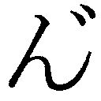ぶ～～ッ！ ンぐ～～っ！」
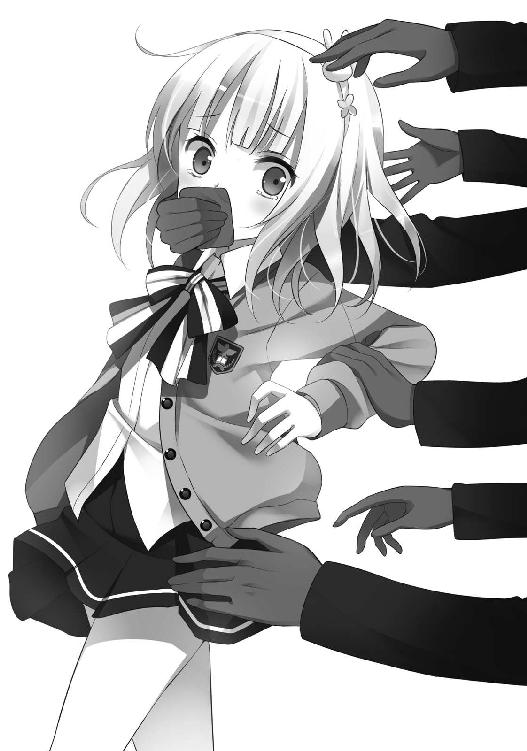
奈々は口元に布切れ――タオルか何からしい――を当てられて口を塞がれ、そのまま停めてあった車の後部座席に引き摺り込まれる。
数人の男たちに。
先述のヒットマンたちに。
男たちの腕力・握力はあまりに強く『少しスポーツが得意なだけの女子高校生』奈々の力で抗う事は不可能だった。しかも――、
「抵抗するな。家族を人質に取っている」
などと耳元で囁かれては！
「奈々ちゃん！ お前ら、いったい――!!」
正幸が車から降り、奈々と男たちに駆け寄ろうとする。だが、男たちにとっては織り込み済みの状況であったのだろう。男の一人が短い鉄パイプを手に待ち構え、運転席のドアが開いたその瞬間――正幸の頭部を強かに殴打する。
「～～～～っ！」
奈々は『正幸さん』と叫ぼうとしたが、口はタオルで塞がれたまま。
三度ほど後頭部を殴打された正幸は、そのまま意識を失いアスファルトへと倒れ込んだ。
「ンぶ～～～～っ!? ～～っ！ ～～っ！」
奈々のタオル越しの喚きを無視し、男たちは車を走らせる。奈々の両脇には男が一人ずつ。それぞれが左右の腕を摑み、押さえつけていた。
両腕を摑まれながらも、彼女は必死に身をよじらせたが、
「動くんじゃねえっ！」
と、左側の男に殴られた。岩石塊を連想させる、硬く大きな握り拳で。
ボディブローだ。
狭い車内で、しかも互いに座った状態だったが、この男は慣れているのだろう。こんな体勢でありながら綺麗に鳩尾の中心に入った。
「おおおおお......ッ！」
無様でみっともない呻き声。
だが仕方がない。一七歳の女子が喰らうには、あんまりな痛みと衝撃だ。
この鳩尾へのブローによって奈々からは呻き声だけでなく、涙や涎、鼻水、そして胃から逆流した朝食のオムレツ、そういったものが一斉に噴き出した。
タオルの所為もあって顔中が嘔吐物塗れになる。無論不快ではあったものの、しかしもう抵抗はできない。腹部の痛みと、そして暴力への恐怖のために。
「おい、早く手錠掛けろ！ それから口！ 猿轡！ 呪文使われたらどうすんだ！」
「分かってる！ 急かすんじゃねえ！」
先程ので有効性を確認したのか、左側の男は再び「ふンっ」とボディブロー。
「ンぎいいいいッ!?」
今度は、鳩尾の中心からやや外れて入った。しかし痛い事には変わらず、また悲鳴が漏れてしまった。漏れたのは悲鳴だけではなかったが。
脱力して半開きになった口に、男たちは奇妙な器具を取り付ける。
最初は分からなかったが、バックミラーに映った自分の顔で、奈々はやっとそれが何かを理解した。
ボールギャグ――西洋風の猿轡。
学校で男子が回し読みしていた雑誌に載っていた器具だ。
さらには両手に手錠を嵌められ、ますます雑誌の写真と似た姿になっていく。
「ＯＫだ。早く若頭に電話しろ」
移動中の車の中。
猿轡は息苦しく、自然と呼吸は荒くなる。奈々が息を吐く度に『ぶひゅー、ぶひゅー』と音が鳴り、隙間からは唾液が飛び散った。
「ぶひゅ～、ぶひゅ～......」
そんな状態のまま、奈々は右側の男に携帯電話の画面を見せられる。
『へへっ、最近の携帯は便利なモンだな。テレビ電話機能まで付いてやがる。アーアー、聞こえてるかい、お嬢ちゃん――いや、ここはむしろ〝魔法少女ぷちマジかるウサミーＳＯＳ〟と呼ばせてもらおうか』
「んぶーっ？」
『俺の顔、忘れちまったかい？ 黒川組の黄島だ。一昨日、アンタの師匠に指を折られた者だよ』
知らない。
忘れたのではなく、最初から知らない。暴力団員の知り合いはいないし、師匠なんてものも彼女には居なかった。
だが、画面の男は構わずに話を続ける。妙に芝居がかった語り口で。漫画の悪役でも気取っているつもりだろうか。
『車に乗ってるのは、だいたいウチの組員だが――助手席に妙に品のいいのが座ってるだろ？ その芳川はヤクザでなく若手の警察官僚だ。警視総監の親戚でもある東大卒エリート様だぜ？ 今回の仕事が〝警察は無関係で俺たちが勝手にやった〟とバックレられないよう、実行犯に加わってもらったってえワケよ。ま、ある意味、人質だな。俺たちの大好きなヤツだ。
さて、ぷちウサミー――』
「ぅ～～......」
『スウィ～ト☆ベリーの弟子がアンタだってのは、最初にテレビで見た時から分かってた。何せ俺ゃあ、マジかるウサミーのファンだったからよォ。ドキュメンタリー番組も毎週欠かさず観ていたし、背中に入墨も彫ってあんだ。ベリーの弟子は、コスチュームはちょいと変えてたみてぇだが、魔法はウサミーとおんなじモンだった。だとすりゃあ正体はその妹に決まってんだろ。
ウサミーの妹は《マジかるコロロン》を借りて、ぷちウサミーとして変身してたもんなぁ！ ドキュメンタリーの一九話でよォ！』
「むぐぅ......」
いろいろ言いたい事はあったが――しかし、奈々にもやっと状況が吞み込めた。
（――わたし、佐倉と間違えられてる！）
全く想像していなかったわけではない。
いつかはこんな事になるんじゃないか、と。
あの犯罪者スウィ～ト☆ベリーの所為で佐倉が警察や犯罪者に狙われるのでは。そして自分も巻き込まれるのでは、と。薄らとだが思ってはいた。
ここまで最悪の状況になるとは、さすがに想像していなかったが......。
『魔法で逃げようとは思わねぇ事だな。今も手下にオメェの家を張らせてるからよォ、居間の親父さんを拳銃でブチ殺すくれぇ軽ぃもんだ。
それから離婚した母親も、仲良しのお隣サンも、昨夜泊まった若夫婦も、その気になりゃあ全員マトに掛けられる。これも全部、お嬢ちゃんの火遊びのツケだな。スウィ～ト☆ベリーなんかとツルむから、こんな事になるんだぜェ？』
「ンぐぅうう......」
自分ではなく佐倉の火遊びだ――そう思ったが、すぐに自らの誤りに気がついた。
（違うか......やっぱり、わたしの火遊びだ。わたしが佐倉に《マジかるコロロン》を貸した所為で、こんな事になったんだから......）
そんなの最初から分かっていた事だというのに。
（どうしよう......。佐倉に嫌われたくないから《マジかるコロロン》貸してたけど......あんまり考えないようにしてたけど......。でも、薄々分かってた。佐倉もわたしも、すっごく危険な事をしてるんだって......）
魔法少女は、危険。
〝禁止法〟などと関係なく。
彼女は――魔法少女ウサミーの妹は、それをよく知っていた筈ではなかったのか。
『まあ、そのザマじゃ変身だって無理だろうがよ。とりあえずオメェの身柄は師匠の人質にさせてもらうワ。面白れぇなァ？ ベリーの人質取るために、その人質の家族を人質にして、警察のエリートも人質にして............はははッ、人質ドミノだ！ 俺ゃア何度人質って言やあいいんだァ？
それとよォ、ついでに訊きたい事なんだがよォ――』
テレビ電話の向こうから、初老のやくざは嗤いながら奈々に訊ねた。
それはひどく重要で、かつ専門的な質問。一介の暴力団幹部が持つ必要のない疑問だった。
『......オメェ、どうして変身できる？』
そう。これは理論的には異常な事だ。
魔法アイテムは選ばれた本人以外には使用できない。
これは魔法少女学を齧った事のある者ならば誰もが知っている常識だった。
だが《マジかるコロロン》は奈々の姉、魔法少女ウサミーのもの。なのに何故、別人が変身できる？
まさかウサミーの《マジかるコロロン》は使用者を特定しない、誰にでも使える魔法アイテムだったのか？ もしそうならば、これは世紀の発見だ。科学、軍事など数多くの分野に多大な貢献を果たすだろう。
『なア、マジでオメェどうして変身できるんだ？ 教えてくれよ、俺も魔法少女になりてぇからよォ』
「..................」
無論、猿轡のために奈々は答える事はできず、ただ『ぶひゅー』と息の音を鳴らすのみ。
「ぶひゅ～、ぶひゅ～......」
『ふゥン、黙秘権ってワケかい？ まァ、いいさ。そのヘンは警察だかどっかが訊いてくれるだろうよ。それよか今は〝本来の使い道〟が先だしな』
本来の使い道。
つまりは、人質。
ここで時間はゼロ。黄島は隠れ家の中から電話するベリーの声を聞き、彼女が中にいた事を知る。
『さて、始めるか............おう、永遠だぜ。友情や想い出は永遠だ。そうだろ、ダチ公？ 俺は〝恨み〟を忘れねえ』
こうして前章の最後へと続く――。
２
舞台は移る。
新宿の路地裏、無数の急襲隊に囲まれたおしゃれ天使スウィ～ト☆ベリーに。
「オメェの弟子とその家族が人質だ。何のために俺がいると思ってやがる。こいつはな......警察とヤクザの合同作戦なんだよ！」
『――もしもし、ベリー！ そっちで何が起こってるんです!?』
多少だが、事情はベリーにも察しがついた。
この黄島が捕らえたのはサクラではない。おそらくはマジかるウサミーの妹だ。
（......何らかの方法でサクラの魔力がウサミーと同じものと知ったのだろうな。どうやってかは知らないが）
黄島本人は『大ファンだから気づいた』と奈々に対して言っていたが、それはまだベリーの知らない話。いずれにせよ〝魔法少女マジかるウサミーＳＯＳ〟の名が出れば、妹の奈々に辿り着くまで、さほど時間は掛かるまい。
（人質か......どうするべきか？ サクラ本人なら見捨てるべきに決まっているが......）
サクラを助手にする際、最初に念押しした事だった。『もし人質になっても、自分は決して交渉に応じない』と。それと『仲間と他人が同時に危機に陥れば、たとえ悪人であろうとも他人の生命を優先する』とも。
『覚悟のできている者から犠牲になるべき』
ベリーに言わせれば、これは魔法少女として最低限度の心構えだ。魔法というものは、誰かの幸せを守るために存在するべきだから。
だが人質となっていたのは、その隣人。
誤解で捕らえられた気の毒な少女だ。
いや、そもそもサクラ本人だとしても、本当にベリーは見捨てていただろうか？ 口ではどう言っていようとも、助手を見捨てる事が彼女に可能であったのだろうか？
（......あの娘は助けるべきだ。だが果たして自分が屈していいのか？ こんな卑劣な手に屈しても――いや、そもそも警察が、暴力団の手を借りて人質作戦を行うなど許されるのか？ ここに正義は存在するのか？）
何が本当に正しい選択か？
ベリーは奥歯をぎりりと嚙んだ。強く嚙みすぎてかりりと歯先が欠けた気もする。無数の銃から赤いレーザーポインターを向けられ肌は麻疹のように斑点だらけ。体中が痒くなる。気の所為だと分かっているが。背筋や掌からは汗が流れる。
スウィ～ト☆ベリーは追い詰められていた。
物理的な意味だけではなく、どちらかと言えば精神的に。
だが、精神を追い詰められていたのは、銃口を向ける急襲隊も同様であったのだろう。ベリーが、痒くなった肌を搔こうと左手を動かした――その刹那！
「――撃ぇっ！」
焦った号令。同時に銃声。
急襲隊員一〇人分――短機関銃六丁、自動小銃四丁分の火力が鳴る。
屋外で撃つ機関銃は『ダダダダッ』や『バンバン』ではなく、むしろ『ガカーーー』という音になる。最初の裁縫ミシンは機関銃の技術を応用して生まれたらしいが、なるほど音は少しだけ似ていた。
一〇年間犯罪と戦ってきたベリーだ。銃で撃たれるくらいは日常茶飯事であり、実際に弾丸を喰らった経験も一度や二度の事ではない。魔法で強化された肉体は、小口径の拳銃弾程度は防ぎきる。白い柔肌に傷すらつくまい。
しかし、痛みは別だ。喩えば九ミリパラベラム弾で撃たれれば『草野球でデッドボールをぶつけられる』程度には痛かった。激痛ではあるが、極端に打ち所が悪くなければ重傷を負う事はない。そのくらいの程度の痛みだ。
しかし、それも一発や二発の話。
一度に一〇〇球デッドボールを投げつけられれば、さしもの彼女も無事では済むまい。
この攻撃は、効果があった。
「............あ――」
とはいえ、これは失策。
焦りの結果。
『撃ぇっ』の号令は、掛けるべきではなかった。
ベリーも、隊員たちも、号令を掛けた班長本人も、皆がそう感じていた。いや、そもそも、この作戦そのものが、だ。
《キレイなココロ》を魔力源にする魔法少女を精神的に追い詰める――それが、どれほど危険な事か。
それを思えば、より慎重に事を運ぶべきであったのに。
「あ――あま......」
必殺技の際には、ポーズを決めながら技名を叫ぶ。
それは第三世代魔法少女のほとんどに組み込まれていた『仕組み』だった。
たとえ本人の意思に依らない『暴走状態』の結果であろうと。
「――甘くてスウィ～トな夢を届けるベリー・ピンクベル・ハートヴァイブレーション！」
スウィ～ト☆ベリー後期の必殺技〝甘くてスウィ～トな夢を届けるベリー・ピンクベル・ハートヴァイブレーション〟。
この技名は大手玩具メーカーのマーケティング部門が考えたもので、長さは第三世代では三位になる。クリスマス商戦向けの新開発武器《おしゃれ☆ベリーピンクベル》から、ハート形の光波を放射。超高熱で敵の鬼魔を灼き尽くすという熱光学系の必殺技だ。
そして、もしその力が人間に向けられれば――。
（う......うあああああ――）
染み。
一〇人の急襲隊は防弾チョッキごと蒸発し、コンクリートの染みとなった。
銃を構えたポーズのままの、人形の黒い染みに。
ぷん、と饐えた臭いがするが、これは人体の水分が瞬時に蒸発した臭い。
臭いを嗅いでスウィ～ト☆ベリーは、
「うわああああああああああああああああああああああああああああああああああああああああああああああああああああああああああああああああああああああああああああああああああああああああああああああああああああああああああああああああっ！」
と壊れたように泣き叫んだ。
ベリーがいくら泣いたところで、何かが戻るわけでもないが......。
暴走事故。
魔法は、精神のパワーだ。人間の精神である以上、それは当然不安定。ましてや一〇代の少女や、一〇年間犯罪と戦うストレスに晒されていた人間ならば尚更だろう。
であるから精神が極限状態にまで追い込まれた時、このような魔力の暴走が起こり得る。九〇年代に彼女たちが合法活動をしていた時代から、稀に報告のあったケースだ。
魔力源たる《キレイなココロ》の『灼きつき』という言い方をしてもいい。
心が焦げて炭になるまでの、最後の一瞬の輝きだった。もし鬼魔たちの持っていた『ココロ探知センサー』を使えば、ベリーの胸には真っ黒に灼けた《キレイなココロ》が見えただろう。
ただし、このベリーの暴走の仕方は、確認されている中でも最悪のケース。
（まさか、こんな......!! 私は、なんて事を――!!）
必殺技を全方位に発射して、警官一〇名を殺害するとは。
魔法少女史上に残る、大虐殺事件だった。
「いやああああああああああああああああああああっ！ 嫌あああああああっ！ うあああああああああああああああああんっ！ うわあああああああああああああああああああああああああああああああああああああああああああああああああああああああああああああああああああああああああああああああああああああああっ！」
後続の隊員たちが乗り込んだ時に見たものは、
『路地裏に描かれた地獄絵図』と、
『泣き叫ぶ女（二三歳）』の姿だ。
夢見るおしゃれ天使スウィ～ト☆ベリーは、この日の午前八時四三分を以て逮捕される。
悪臭漂う、この路地裏で。
３
「あまり思い出したくありません......」
突入班の一〇名は全滅したが、作戦に参加した警官たちが一人残らず死亡したかといえば、そうでもない。
狭い裏路地を包囲するために、外側で待機していた者もいれば、通信や車両の運転などを担当していた者もいた。計四三名。突入した数の四倍以上だ。暴走を終えたスウィ～ト☆ベリーを取り押さえ、身柄を確保したのも彼らだった。
そのうちの一人である若い隊員は、こう語る。
「怖かったのです。その光景が。いえ、突入隊員の有り様ではなく、その......〝彼女〟がです」
彼が第二次突入班として路地裏に乗り込んだ時、そこには泣き叫ぶ〝彼女〟がいた。
地べたに跪き、蹲り、つんざくような声を張り上げながらアスファルトの地面に爪を立てていた。
最初は錯乱による異常行動かとも思えたが、しかし隊員たちはすぐに『染みになった人体を地面から剝がそうとしているのだ』と理解する。しかし異常な行動には違いない。染みはもちろん剝がれなかったが、代わりに爪は剝がれて血が流れていた。
それは狂気の光景だ。
「......きっとあの光景は夢に出るでしょう。それを思うと今夜は眠るのが怖ろしいです」
「話は分かった。だが、君の睡眠時間に興味はない」
彼の上司にとって、興味は別の点にある。
即ち、以下の点。
「この女は、本当にスウィ～ト☆ベリーなのかね？」
疑問は当然。
夢見るおしゃれ天使スウィ～ト☆ベリーは見た目だけなら一二歳。九六年四月のデビューから一一年、僅かたりとも歳をとっていない。顔つきは険しくなり、コスチュームのフリルは擦り切れていたものの、しかし成長も老化もしないまま。テレビや新聞、手配写真にも常に一〇代前半の少女の姿が映っていた。
しかし今、手錠で拘束されているのは、そうではない。
『一二歳』ではなく、また『少女』でもない。
背丈、肌、乳房、いずれの部位も成人女性のもの。
『二三歳の女』が、そこにいた。
それも、『薄汚れた二三歳の女』だ。その姿は、お世辞にも美しいとは言えなかった。言える筈がなかった。
手入れされていない乱れた黒髪に、泥と土埃に塗れた肌、不摂生な暮らしで荒れた肌。目の下には、くっきりと隈が現れている。着ている服は、かつてはパジャマか何かであったのだろうか？ 色は褪せ、あちこちが綻び破れ、ただのぼろ布と化していた。その色褪せぶりは、本人そのものと共通してはいたのだが。
今や、瞳のぎらぎらとした異様な輝きだけが〝死のおしゃれ天使〟スウィ～ト☆ベリーの面影を残すのみ。そんな彼女は――、
「いやああああああああああああああああああああああああああああああああああああああああああああああああああああああああああああっ！ はなせぇ！ はなせえっ！ はなあああせえええええええええええええええええええええええええええええええええっ！」
まだ鎮静剤が回っていないため、獣の如く絶叫していた。
「本当に？」
「はっ、この女で間違いありません！ あの路地裏にいたのは彼女だけでしたし、指紋も一致しています」
「そうかね？ とても同一人物には見えんが......」
しかし、これが真実。
何故、急速に成長（？）したかは不明だが、この獣のような女こそ、非合法魔法少女スウィ～ト☆ベリーの『正体』であったのだ。
彼女はやがて、彼女を恨む悪党ばかりで満杯の刑務所に送られる。若い隊員は多少哀れに感じたものの、しかし客観的に見て当然の報いではあった。
（これを因果と呼ぶのだろうな。物事の帳尻というものは、いつか必ず合う事になっているんだ......）
４
（やれやれ......）
午前八時四一分。
真白家。
一人、家に残っていた真白里子は、テレビの画面を見つめながら深い深い溜め息を吐く。
（苺子......いつかは、こんな事になると思った......）
その時、彼女は部屋の片付けの途中。昨夜は奈々が泊まるという事で、寝室の棚から幾つかの物品を隠していた。喩えば避妊具や、より刺激的な秘密の道具など。それらをダンボールから出して棚に戻す作業をしていた。
テレビを観ていた時に手にしていた薄い本も、それらの一つ。
いわゆる同人誌というやつだ。里子たちの現役時代に描かれた、自費出版のポルノ漫画。本の中では里子を含む〝おしゃれ天使〟四人が触手の怪物に延々と〝乱暴〟をされていた。
一〇年前の現役当時は、このような本の存在にひどく腹を立てていたものだが、今となっては懐かしい想い出だ。先月古本屋で見つけた時に、つい人目を忍んで買ってしまった。
消えたプリンセスはテレビで『想い出はほぼ永遠』と言っていたが、これもその一つなのだろう。不愉快な形とはいえ、この薄っぺらい猥褻な本は『大勢の人たちに愛されていた証拠』であったろうから。
でも、それはもう遠い想い出。手の届かない過去。
今後、魔法少女が人々に愛される事はない。決してない。どんな形であろうとも。テレビを観て、里子はそれを確信した。
新宿駅周辺の騒ぎを取材していたカメラクルーが、偶然撮影してしまったものらしい。
テレビの中では、スウィ～ト☆ベリーが警官たちを――。
（『初代』のスウィート・ショコラがよく言ってたっけ。『人は魔法では幸せになれない』って......。まさに、それだわ......）
この惨劇。
まさに不幸そのものだ。
――ＲＲＲＲＲＲＲ
その時、居間の電話が鳴った。
『もしもし、里子ちゃん！ 僕だ！ 大変だ！』
夫の声の必死さに、里子は瞬時に幾つもの状況を想像したが――、
『奈々ちゃんが誘拐われた！』
現実は、そのいずれよりも最悪だった。
正幸は心配を掛けまいと一部の事実を伏せていた。もしも『僕も後ろから殴られて、たった今まで気絶してた』『でも、まだ病院には行っていない』と隠さずに打ち明けていたら、これで意外と気弱な里子は入れ違いで気絶していたかもしれない。
「でも、誘拐だなんて......!! どうして奈々ちゃんが!?」
いや、『どうして』ではない。
誰でも理解はできる単純な図式だ。魔法少女の関係者で、しかも犯罪行為に関わっていたのだ。誰に狙われても不思議はない。
奈々にはもっと念入りに注意しておけばよかったと、今さらながらに後悔をする。
「それで、どうするの......？ 警察に連絡する？」
『いや......警察じゃ駄目だ。騒ぎを大きくしたくない。僕が思うにここは――スウィ～ト☆ミルクの出番だと思うんだ』
ベリー、ショコラに次ぐ第三の〝魔法のスウィ～トおしゃれ天使〟ステキなおしゃれ天使スウィ～ト☆ミルクの。
里子の夫である真白正幸は、熊を連想させる髭面の大男。
その彼が声高に、電話の向こうで〝それ〟を唱えた。
『――エンジェルスウィ～ツ デコレーション！』
即ち、呪文を。
『純白はオトメのたしなみ 女の子ならおしとやか！ ステキなおしゃれ天使スウィ～ト☆ミルク！』
５
そう、全ては子供っぽいギャグ。あるいは皮肉めいた冗談だ。
午前八時四九分。
マンションの八階、佐倉家。
（......いったい、どうなっているんだろう？）
佐倉少年は自分の部屋で、焦っていた。
スウィ～ト☆ベリーに携帯が通じない。ベリーの使う魔法の携帯電話《おしゃれ☆ピッチ》は、どんな電話や無線機とも通話可能であるし、どんな場所でも途切れる事がない筈なのに。
なのに佐倉との通話の最中、突然途切れた。
しかも直前に聞こえた音は、銃の音ではなかったか？
（銃......というより、マシンガンか？ テレビの海外ドキュメンタリーで聞いた『ガカーーー』っていうマシンガンの音。それも何丁も）
誰かと話していたような声もしたし、それどころか技名を叫んでいたような気さえする。
もし、本当に技名を叫んで必殺技を撃っていたのだとすれば――。
（だとしたら、相手は人間じゃないって事か......？ 人間に必殺技を撃ってはいけない、とベリーが自分で言ったのだから。じゃあ、相手はまさか――!!）
まさか、鬼魔？
あるいは何か別の『必殺技で倒す必要のある相手』？
（そうか......やはりベリーの推理は正しかったんだ！ 何かの『危機』が迫ってるって！ 鬼魔の復活か、何者かによる魔法少女狩り......）
無論、誤解。
だが、佐倉少年はまだ真実を知らない。
もし彼の部屋にテレビがあれば、また話は違っていたのであろうが。
「し、慎壱ー!! ちょっと、こっち！ こっちに来て！」
不意に、部屋の外から声を掛けられた。
母親だ。
「母さん、どうした？」
「いいから早く！ 玄関！ ええと、その......お客様！」
佐倉少年以上に、彼の母親は慌てふためいていた。声だけで分かる。
少年が玄関へと向かうと、そこには――母親の言うところの〝客〟がいた。
「やあ、君が『お隣の男の子』だね」
「あ、貴方は......？」
ウェディングドレスを連想させる、レースとフリルだらけのコスチューム。色も白。スカートは短いがミニというほどでもなく、清純さと健康さを同時に兼ね備えていた。
そんな姿をした、髭面の太った大男！
しかも頭に怪我をしているらしく、顔は生乾きの血でべっとりだった。想像する限り、これは最悪の絵面だろう。
男は佐倉少年の『貴方は？』という問いに、衝撃的な回答をする。
「僕は、ステキなおしゃれ天使スウィ～ト☆ミルク。君の力を貸してほしい」
男はポシェットから香水瓶を出すと、佐倉の母親にぷしゅっと一吹き。次の瞬間、母親は意識を失い、床に崩れた。
「――失敬。催眠ガスだ、安心したまえ。持続時間は一時間。記憶も三分ほど消えている」
それはベリーのと同じ《おしゃれ☆パフューム》。
佐倉少年は、この時初めて『彼の発言が、頭の怪我によるものではない』と知った。
「本当に、スウィ～ト☆ミルク!? 男なのに？ どうして!?」
「その点を、君が『どうして』と訊くのかい？」
言われてみれば、その通りだ。男の魔法少女というならサクラも同類だったのだから。
「でも......まるで冗談みたいです......」
「ああ、悪質で下品で子供っぽいギャグだろう？ だが、最初から全ては『子供っぽいギャグ』か『皮肉めいた冗談』だったんだ。『子供が魔法で変身して、世界のために戦う』という事自体がね。
これで僕の話を信じてくれたかい？ 奈々ちゃんを助けるのに力を貸してくれ」
「もちろんです！」
スウィ～ト☆ミルクが言うには、奈々は誘拐されてしまったらしい。
おそらくは自分の所為だ。ステッキを借りて魔法少女なんかしていたから、それで巻き込まれてしまったのだろう。
（この人がただの噓吐きならよかった。それなら信じなくって済んだのに......）
だが、この髭の大男の魔法は本物で、しかも瞳は真っ直ぐだった。動画データで見たスウィ～ト☆ミルクと同じ瞳だ。おかしな格好をしている事さえ忘れそう。
こんな目で、噓を言っている筈がない。
（俺の所為で、奈々が......!? どうして、そんな......!!）
「サクラ君――僕も一一年前、似た状況になった事がある。魔法は人を幸せにするとは限らないんだ。それは君にも知っていてほしい。
ところで、もう一つ頼みがある」
「......なんでしょう？」
「テレビを見せてくれ」
ミルクは何が起きていたのか、おおよそながら知っていた。先程、電話で聞いたためだ。そんな予備知識が在ってさえ衝撃であったのに。
いわんや何も知らなかった佐倉少年にとって、どれほどの苦痛であったろうか。
テレビを点けたと同時に、佐倉はリモコンを床に落とした。
画面には......。
「ベリーが!? まさか！」
おしゃれ天使スウィ～ト☆ベリーの逮捕。
しかも、必殺技でＳＡＴ隊員一〇名を虐殺。
薄汚い路地裏で、アスファルトやコンクリートの壁に人形の染み――。
佐倉は、吐いた。
一時間半前に食べた朝食を。消化された焼き魚と味噌汁が、絨毯の上にぶちまけられる。
スウィ～ト☆ミルクは、背中をさすった。
「ショックだろうね......。でも、同じくらい僕もショックだ。彼女は僕の友人だったし、それに――」
ベリーの必殺技〝甘くてスウィ～トな夢を届けるベリー・ピンクベル・ハートヴァイブレーション〟――それを撃つための武器《おしゃれ☆ベリーピンクベル》。
九六年後半に入り、新たに開発された武器。
マーケティングは業界二位の玩具メーカー〝ホワイト〟が担当。実際の開発は――。
「あの《おしゃれ☆ベリーピンクベル》は、一一年前僕が作ったものなんだ......」
６
午前八時五六分。
某国立病院別棟の地下。ひなげし一六号室。
「ねぇ～、たにさぁん～」
〝たにさん〟は二ヶ月前にこの施設に赴任した職員だ。総務と入院患者の世話を担当業務とする。背の低い醜男ではあったものの、若い男性という事で女性の患者からは人気があり、よくプロポーズをされていた。
この一六号室の白鳥まひるも、彼にプロポーズをした一人。
「ス～パ～はぁ、いつ行くのぉ？ ボク、はやくお給料つかいたいよぉ」
今日は社会復帰トレーニングの日。状態が良好な入院患者一同でスーパーマーケットへと行く予定だった。しかも昨日の集団作業療法では、普段の倍の五一六円もの大金を貰っている。
白鳥まひるは今日の買い物が楽しみで、昨夜はほとんど寝ていなかった。
「ねぇ～、いつ行くのぉ？」
「それなんだけどね......朝ご飯の時、食堂でテレビを観たかな？ 街がひどい騒ぎでさ、スーパーはお休みなんだ。だから代わりにレクリエーションルームで映画を観るんだよ」
「じゃあ、ス～パ～はナシなのぉ？」
「ああ、そうだよ」
「そうなんだぁ～......ちぇっ。たのしみにしてたからぁ、ス～パ～行ってから『退院』しようとおもってたのにぃ」
退院などできる筈がない。
白鳥まひるの病状は、まだ一人で外に行けるほどには良好ではなかった。近所のスーパーマーケットに行く事さえもトレーニングの一環で、保健師のつき添いがあって初めて可能であったのだから。
「......白鳥さん、最近調子が悪いみたいだね？ もしかして面会のお客さんに何か変な事を言われたのかな？ みんなにも言ってる事だけど、外の人が何と言おうと治療プログラムは絶対に――」
職員の言葉は――途中で切れた。
驚きと、そして恐怖のために。
「なにぬねにこにこ にこるそ～～～ん！」
ここに来て二ヶ月の彼も、この病室の患者が何者なのかは知っていた。
白鳥まひる。措置入院から一〇年。引き継ぎの書類によれば、注意レベルはＡＡ＋。
またの名を〝空飛ぶダックさん・ＤＥ・ニコルソン〟。
多くの第三世代魔法少女のうち、物質的なパワーは最強クラス、肉弾戦では無敵とまで呼ばれた『愛と青春のダックガール』だ。
「あぁ～、ま～ちがったぁ～............がぎぐげごろごろ ご～るどば～～～ぐ！」
１
午前一一時三二分。
乗り心地最悪の高級外車は、どこかの建物へと到着する。
（こんな事なら、あの時『乱暴』されときゃよかった......）
宇佐美奈々は猿轡のまま、そう思う。
あれは、今日から一二日前。
奈々は佐倉と二人で新宿に遊びに行った。ちょっとしたデート気分。互いの親に噓を吐き、夜遅くまで遊んでいた。
だが、噓の報いだったのだろう。二人は路上強盗に襲われた。
お金を奪われた上に、奈々は性的な『乱暴』までされそうになって――必死で彼女を守ろうとした佐倉は強盗に殴られて怪我をして......。
（あの時は、ちょっと嬉しかったけど......。佐倉が怪我をしてまで守ってくれたから......）
佐倉のおかげだ。奈々が『乱暴』を果たされる直前に、そして佐倉が大怪我をする直前に、なんとか二人は助けられた。
あの、非合法魔法少女スウィ～ト☆ベリーに。
それが佐倉慎壱とスウィ～ト☆ベリーの初めての出会いであり、奈々にとっては姉の葬式以来のベリーとの再会だった。ベリーは奈々の事を憶えていなかった。
（あの時、素直にひどい目に合っておけばされていれば佐倉はベリーと出会わなかったかもしれない......。魔法少女になりたいと言い出す事も......）
助けられた後、奈々と佐倉は家に帰った。
だが佐倉を怪我をしたままの状態で家に帰したくなかった。自分のために頑張ってくれた彼の怪我を治してあげたかったし、それにおばさんに知られたくなかったから。心配を掛けたくないし、悪い子だとも思われたくない。
『ちょっと待っていて。今、怪我を治すから』
奈々は佐倉を部屋に呼び、机の引き出しからアレを出し――、
『――くるくるコロろん マジかるアップ』
と一一年半ぶりに魔法少女ぷちウサミーに変身して、魔法アイテム《マジかる医療カバン》で怪我を治した。
その夜、奈々は自分を守ってくれた佐倉を今まで以上に好きになり、怪我だけでも治せてよかったと安心しながら眠りにつく。
だが翌朝、佐倉は奈々に『スウィ～ト☆ベリーの事が好きになった』と告げた。
その上、『自分もベリーのようになりたい』『試しにステッキを貸してくれないか』とも言ってきた。
奈々はさんざん迷った末、佐倉に《マジかるコロロン》を貸す。
佐倉は他人の装備なのに変身できた。
（そして現在に至る、か......）
車が到着したのは、法務省東京矯正管区関東第一刑務所。
その別棟である熱力学的受刑者専用舎、通称『ＭＳ舎』――即ち魔法少女用の監獄だった。
「ステッキは？」
「不所持を確認しました」
ボディチェックは念入りだ。
猿轡のまま裸に剝いて、何度も調べた。レントゲンや金属探知機はもちろん、膣や肛門の中まで女性刑務官に確認させた。
チェックが終わった今でも、少女の口は塞がれたままだし、服も女性受刑者用の下着のみ。金具のないブラジャーとショーツ、それから革手錠という姿で床に転がされている。
一七歳の少女に対してこのような扱いをする事は非人道的であったかもしれない。しかし刑務官たちにとっては『自らの生命を守るための正当な権利』だ。それに肌を露わにした女子高校生が目の前に居ても、猥褻な気持ちをほんの微塵ほども感じない。
あるのは、恐怖。
スウィ～ト☆ベリーがＳＡＴ隊員を殺した様子を、彼らもテレビで見ていたのだから。
「油断はするな。何か隠す方法があるのかもしれん。
自宅を捜索してもステッキは未発見であるし――活動中の魔法少女がステッキを持ち歩いていない事の方が不自然であるのだからな」
ここ『ＭＳ舎』は国内唯一の、収容分類ＭＳ級――つまりは魔法少女用の収監施設。
ただし、その外観は監獄というより教会に近い。実際、事情に疎い一般舎の受刑者には、窓から見えるこの施設を教会と誤解したまま刑期を終える者も少なくない。
パリのノートルダム大聖堂を意識したデザインで、本物と比べてサイズは幾分か小ぶりではあるものの――それでもちょっとした工場ほどの敷地面積は持っていたが――巨大なステンドグラスや、映画で有名な鐘突き塔までもが、そのまま再現されていた。
だが、その古風な外観にもかかわらず、その設計には常に最先端の耐魔法技術が盛り込まれており、つい昨年度にも大幅な改築工事が行われたばかり。内部には特別な訓練を受けた刑務官たちが常に多数待機している。女子刑務所である栃木刑務所ではなくこの府中の敷地内に建設されているのも、警備を少しでも完璧なものとするためだ。
対魔法少女用の、神経質なまでに堅牢な監獄。
だが、この一〇年間で収監した魔法少女の数は――たったの一名。
つい先月、ひっそりと仮釈放された〝魔法怪盗アルセーヌキャット〟のみだった。しかも実際には彼女は魔法少女ではなかったのだから実質上はゼロとなる。
そんな施設に今、初めて本物の魔法少女が連れてこられた。
それも二名も。
この宇佐美奈々と、おしゃれ天使スウィ～ト☆ベリー。本来なら逮捕直後の犯罪者は警察の留置場に送られるべきなのだろうが、彼女たちは〝禁止法〟及び刑事訴訟法の手続きに従い『ＭＳ舎』へと直接連行されてきた。
刑務官たちの緊張は推して知るべしというところだろう。
特に、この奈々。彼女のステッキは未だ所在不明であったのだから。
刑務官たちは、まだ知らない。
奈々の《マジかるコロロン》は隣家の少年が持っていたという事を。
そして、その少年が既にこの施設に潜入していたという事も――。
２
「交代です」
「交代？ 聞いていないぞ？」
「それじゃあ............眠ってください！」
催眠ガスを吹きかけて、サクラは刑務官を眠らせる。
サクラとスウィ～ト☆ミルクの二人は『ＭＳ舎』の中にいた。
《おしゃれ☆アンブレラ》を使えば、家から此処までは数分だ。内部に潜入するのは変身魔法と《おしゃれ☆パフューム》を使えばいい。さらには――、
（まさか、奈々を誘拐したのが警察だったなんて......）
真相と彼女の居場所を捜し当てたのは《おしゃれ☆ワードプロセッサー》のおかげ。ベリーも持っていたこの天使アイテムは、あらゆるコンピューターに侵入できる。
アンブレラ、香水、コンピューター、これらはいずれもミルクが一一年前に発明したものだ。現役時代、彼は（キラキラアクア！に次ぐ）天才として有名だった。
一方、その当人――真白正幸ことスウィ～ト☆ミルクは、コスチューム姿のままサクラの後からついてきた。ベリーと同様、変身魔法が使えない状態らしい。おしゃれ天使は皆、変身魔法用のアイテムが壊れてしまっているのだろうか。
そしてここは、監視室。
部屋には監視カメラの映像を映し続ける十数台のテレビモニターが並んでいる。
「君たちは、いつもこんな強引な手で潜入をしていたのかい？」
「こんなの丁寧な方です。いつもはもっと荒っぽいですから」
「そうかい、やれやれ。......おっと、見つけたぞ。一五番カメラを見てくれ」
映っていたのは、下着と猿轡姿の奈々だった。
すぐに奈々を見つけられたのは、特にご都合主義というわけでもない。
この施設は魔法少女の収監施設であり、奈々は現在『たった二人しかいない監視対象』の一人だ。もしモニターに映っていなければ、その方が問題であったろう。
だが、サクラの視線は一五番カメラとは別の場所へと向けられていた。
「............あれは――」
四番カメラ。
一番右の列、上から二番目のモニター。
「正幸さん、あのモニター見てください！ あれって、まさか――!!」
「ああ、そうだね......。彼女もここにいたんだな。考えてみれば当然の事だ」
映っていたのは、成人女性。
それも、なんという惨たらしい姿だろう。全身の肌は泥や埃、垢で汚れており、地中かゴミ捨て場から掘り出してきたのでは、というほどの有り様だ。同じくらい汚れた髪はぐしゃぐしゃに乱れて、まるで遺跡に絡まる蔦のよう。
下着もない、丸裸。さほど大きくもない乳房も隠す事なく晒されていた。唯一身につけているのは拘束用の革手錠のみ。両腕が厳重に、捻り上げるように固定されている。
奈々以上の無残な姿だ。
だが彼女は抵抗するでも泣くでもなく、生気のない目をしたまま、ただじいっと椅子に座っていた。だが、そんな有り様でありながら――、
（やっぱり、そうなんだ......!! 一目で分かった！）
初めて見る姿なのに、サクラには一目で分かった。それは魔法少女としての感受性であったかもしれないし、恋する男子特有の勘であったのかもしれない。
「あの女が、スウィ～ト☆ベリー......」
初めて見る、変身していない彼女の姿だ。
佐倉慎壱こと魔法少女サクラは〝魔法少女の弟子〟だ。
彼自身はこの称号を気に入っていたが、しかし不安を感じていないわけでもなかった。
〝師匠〟であるベリーにとって、自分はどのような存在なのか？ 果たして役に立っているのか？ 邪魔者とは思われていないか？
それを思うと、胸のあたりが寒くなる。
しかし今、彼の目の前には――。
（ベリーが、捕まってる......。あんなに惨めな姿で......）
彼の中で、ある種の衝動が芽生え始めていた。
それは『人々の幸せのために戦う魔法少女』として、好ましくない衝動だった。
（助けたい......!!）
助けて、感謝されたい。
認められたい。
褒められたい。
衝動で《キレイなココロ》が少しずつ焦げていくほど......。
「何か話しているようですが......。中の音、聞けますか？」
「ああ、たぶんマイクはこれだ」
スウィ～ト☆ミルクがスイッチを押すと、ベリーたちの会話が聞こえた。
３
談話ルーム。
そう銘打たれているが、しかしお喋りをするための部屋ではない。ここは魔法少女用の取調室であり、サクラたちの覗く第四監視カメラの設置されている部屋でもあった。
「ベリー――いや苺子さん、聞いていますか？」
「............」
スウィ～ト☆ベリーは、ここで取り調べを受けていた。
ステッキ他、全ての装備を取り上げられ、裸に革手錠のみの状態で。
これは恥辱を味わわせる事が目的ではなく、奈々と同じで変身・魔法の使用を防止するためだ。
彼女の《キレイなココロ》は真っ黒に炭化しており当分は変身不可能であったろうが、それしきの事で刑務官たちの不安を拭える筈もない。
一方、当のベリーも恥辱を感じている様子は無かった。
これは大量の鎮静剤を投与されていたため。意識が朦朧とし、羞恥心など感じない。
瞳も虚ろだ。『死んだ魚のような目』という比喩があるが、なるほど今の彼女の瞳はある種の深海魚にそっくりだった。
惨めなほどに無力。魔力も肉体の自由も、精神の明度さえも奪われた状態。
取り調べには、まさに最適の状況だろう。
「魔法少女チーム〝魔法のスウィ～トおしゃれ天使〟メンバー、夢見るおしゃれ天使スウィ～ト☆ベリー。本名、赤石苺子。二三歳。出身は東京都――間違いはありませんね？」
「............」
「苺子さん？ 答えてください」
「..................『世界一賢い少女』がそう言うなら、それで間違いはないんだろう」
ベリーを取り調べていたのは、もとキラキラアクア！こと水城宇美だった。
「......いつから警官に転職した？ 鎮静剤の効果で幻覚を見ているのかと思ったぞ」
「ただのお手伝いです。法務大臣と国家公安委員長からの依頼でして」
一般の警察官では魔法少女を相手にするには危険であり、何より怯えて取り調べにならない。
なので協力的なもと魔法少女に協力を依頼する――これは『前回』からの慣習だった。
「前回の魔法少女逮捕時――つまり一九九八年の時と同じです。魔法怪盗アルセーヌキャットの取り調べも私がお手伝いしました。それと、この『熱力学的受刑者専用舎（ＭＳ舎）』の設計も。一八歳の時の話です」
もとアクア！の水城が言うには、アルセーヌキャットの時は金城マリーが取り調べをし、水城はそのサポートを担当したという事だった。監獄の設計の参考になるかと思い、自ら志願したらしい。結局アルセーヌキャットこと猫ヶ丘美夜は魔法少女ではなかったわけだが。
「裏切り者、というわけか」
「その言い草は不愉快です。むしろ逆じゃあありませんか。人々を守るのが魔法少女の使命であるのに、貴方やアルセーヌキャットは犯罪を犯して人々の心を不安にした。裏切り者は貴方たちです。
それと、苺子さん。貴方は私を良く思っていないようですね？ でも、私は違います。貴方の事は、それなりに――友人だったと思っていますから」
「........................」
「私は貴方の事を知りたいのです。この一〇年間何をしていたのか。何故、こんな事になってしまったのか。それから......何故今まで一〇年以上、ずっと若い姿だったのか。そして、どうして急に大人の姿になったのか。そういった事を全部。私は弁護士の資格も持っている。必要とあらば、貴方の弁護をしてもいい。
友情と想い出だけは永遠に近いものですから」
「......................................................................................................................................................................................................................................................................................................................................................................................................................................................................................................そうか」
ベリーは深海魚の瞳をほんの僅かだけ動かし、水城を見つめた。
ぼんやりと虚ろで、蛍光色に濁る瞳を。
「............私が答えたら、お前も問いに答えてくれるか？」
「それは......」
彼女は、一瞬迷った上で承諾をした。
「......分かりました。約束しましょう」
「よし......」
薬で霞む五感の中で、スウィ～ト☆ベリーは語り始める。
過ぎ去った、この一〇年を。
４
「話は、長いぞ。特に『何故、若い姿だったのか』については説明に手間が掛かる」
「ええ、望むところです」
監視室のサクラたちがマイクのスイッチを入れたのは、ちょうどこのあたりからになる。
「まずアクア！――お前はさっきから私を『苺子さん』と呼んでいるな？ しかし、それは間違いだ。
私の名は、おしゃれ天使スウィ～ト☆ベリー。今後もそう呼んでもらいたい。
人間の肉体は五〇％以上が水分でできているそうだが、だからといって『やあ水分さん』と挨拶する者はいないだろう。それと同じで赤石苺子は私を構成する部品の名。ドジでおっちょこちょいで夢は見ていたが真実は見えていない、そんなどこにでもいる子供の名前だ」
「分かりました、その――スウィ～ト☆ベリー......」
「そう、それでいい......。一九九六年の四月の事だ。当時中学一年だった赤石苺子は、天使を名乗る丸っこい生き物から《おしゃれ☆アンクステッキ（ピンク）》を貰い、生まれて初めての体験をした。〝変身〟と〝戦い〟だ。
戦いの相手は無論、鬼魔だ。天使は『貴方は選ばれた女の子だ』『〝魔法のスウィ～トおしゃれ天使〟に変身して人々を救え』と私に言った。私はそれに従った。
九六年といえば魔法少女黄金期も末期になる。鬼魔の勢力は衰え始めていたが、しかしその分奴らも必死だった。一発逆転を狙って強力な鬼魔の戦士を大量に送り込み《キレイなココロ》を集めようとしていた。当然、戦いは激しいものになった」
《キレイなココロ》は人間の精神の中に隠れている秘密の宝石で、魔法エネルギーの結晶体だ。純粋でまっすぐな心を持った人間のみが、この宝石を胸に持つ。
鬼魔たちはこのエネルギーを集める事で、太古の昔に封印された彼らの女王を復活させようと企てていた。
「なるほど......そうして貴方は、変わったのですね？ 中学生の苺子さんから――スウィ～ト☆ベリーに。ステッキによる変身と、鬼魔との激しい戦いで」
「違う」
「違う、のですか......？」
「あの頃、まだ私はスウィ～ト☆ベリーのコスチュームを着ただけの赤石苺子だった。ステッキと呪文で、おしゃれ天使になったと信じ込んでた中学生だ。
苺子には仲間もいた。同じようにフリルのコスチュームで仮装しただけの中学生で、皆同じように夢は見ていたが真実は見えていなかった。他のチームの連中も同じだ。
皆、苺子の事を『ドジでおっちょこちょいで愉快な子』と思っていたようだが、今思い出せばどいつも同程度に『ドジ』で『おっちょこちょい』であったし、同程度に『お笑い』だった。もしかするとハニーとお前だけは例外だったのかもしれないがな」
「いいえ、私は......。それでは貴方はいつスウィ～ト☆ベリーになったのです？」
「九七年――それも四月になってからだ」
一九九七年の四月。
最終決戦は三月だったから、その時期には鬼魔たちは壊滅し、既に脅威も去っていた。宿敵を退けた魔法少女は、ある者は引退し、またある者は犯罪や災害相手の戦いを始めて――言い方は悪いが、暇を持て余し始めていたと言えよう。
そんな中、あの事件が起きた。
「魔法少女ウサミーが誘拐された。憶えているか？」
「ええ......憶えています。忘れる筈がありません」
最初は皆、ただの誘拐事件だと思っていた。
被害者の宇佐美実々（八歳）の父親は、玩具メーカー〝ホワイト〟の子会社であるゲーム会社〝Ｈ＆Ｈ〟の社員だった。当時は今以上にテレビゲームブームであったし、この会社はウサミーのゲームがヒットしていたために金回りも良かった。金目当ての誘拐だと誰もが思った。
だが、少女が実は最年少魔法少女である〝魔法少女マジかるウサミーＳＯＳ〟の正体だったと判明してからは、鬼魔の復活や魔法少女に恨みを持つ者の犯行も疑われるようになった。
しかし真相は、いずれも違った。
「あの事件の捜査をしていたのは、警察以外ではプリンセスとお前を除く〝キラキラスターズ！〟と、まだ姿を消す前の〝ホーリープリンセスかぐや〟。それから苺子、スウィ～ト☆ベリー。最初に真相に辿り着いたのは苺子だった」
「そのようですね。新聞で読みました」
「犯人は、熱狂的なマジかるウサミーファンの男たちだった。歳も職業もばらばらで、パソコン通信やら文通サークルやらで集まった『ウサミーが好き』というだけが共通点の六人だ。
彼らは猥褻目的で変身前のウサミーを誘拐した。ステッキを家に置いていた彼女は、ただの小学二年生にしか過ぎなかった」
「..................」
ここまでは、誰もが知っている。
当時テレビでも新聞でも、何度も繰り返し報道がされていた。
そして、ここからがあまり知られていない事実。
報道はおろか、噂話としてさえ広める事が躊躇われていた部分だ。
「苺子は偶然、奴らの溜まり場を突き止めた。リーダー格の男の自宅だ。《おしゃれ☆ピッキングツール》でドアを開けて侵入したが、皆出かけていて留守だった。散らかったリビングにはビールの空き缶や食べ残しの菓子と一緒に、一冊の大学ノートが置かれていた。
中を読んで......目を疑った」
「何が書いてあったのです？」
「............ウサミーちゃんのおしっこ飲みたい」
「......はい？」
「『ウサミーちゃんのおしっこ飲みたい』だ。隣には『ウサミーちゃんのおしっこでほかほかご飯を炊きたい』とも書かれていた。他のページも似たようなものだ。
ノートはアイデア帳だった。一冊まるまる全部のページに、似たようなアイデアがびっしり何百と羅列されていた。必要とあらば各項目について、より詳しく話をしてもいい」
「......いえ、結構です」
「どのページにも似たようなアイデアが大量に羅列されていた。各アイデアの横にはチェック欄があって、うち幾つかには『実行済み』のマークが記入されていた。ビデオデッキにはＳ－ＶＨＳのテープが入っていたが、再生したらすぐにノートが冗談でなかったと確認できた」
「........................」
「やがて、男たちは家に戻ってきた。すぐさま彼らをぶちのめし《おしゃれ☆手錠》で拘束した。だが宇佐美実々は戻らなかった。彼らが留守だったのは、彼女を殺して山奥に捨てに行ってたからだ。首を絞めて、裸のまま山の中に......。
もちろん、それはショックに決まっている。助けようとした相手が死んでいたのだから。
しかし――それと同じか、さらにショックな事があった。その事実は苺子をひどく傷つけた。想像つくか？」
「......何です？」
「奴らの胸には《キレイなココロ》が光ってた！」
「............!!」
純粋でまっすぐな精神にのみ宿る、魔法エネルギーの結晶体。
魔法少女が五年間、鬼魔たちから命がけで守ってきた心の宝石。
この星の人類が持つ、最も美しい輝き。
それを男たちは持っていた。
「輝きに目が眩み、瞼を閉じたのは中学生の赤石苺子だったが............その目を開いたのは、魔法少女のスウィ～ト☆ベリーだ」
この時、変わった。
本物の魔法少女、おしゃれ天使スウィ～ト☆ベリーに。
初めての変身は、一九九六年の四月ではない。この日、この瞬間だった。そう彼女は言っていた。
「目を閉じた一瞬のうちに、私は悟った。ずっと夢を見ていたのだと。現実も真実も見ず、都合の良い噓の光景だけを見ながら自分は――自分たちは、戦ったフリをしていたのだと。
人間としても、魔法少女としても、だ。
魔法少女たちは五年もずっと見当ハズレの事をしていた。戦うべき相手は異世界から来る鬼魔などではなく、守るべきものも魔法の宝石《キレイなココロ》なんかじゃなかった。もっと重要なものが、目の前にどろどろ渦巻いていたんだ。この五年間は無駄だった。
しかも皆も気づいてなかったわけじゃなく......本当は、目を背けていただけで......」
「........................」
「それを自覚した私は目を見開いて、完全に〝夢見るおしゃれ天使スウィ～ト☆ベリー〟となった。以来一〇年、今日まで一度も『人間』に戻らなかった」
「......一度も変身解除していない、ですって!?」
そう。
ただの、一度も。
寝る時も。食事の時も。一瞬たりとも休みなく。
決して変身解除をせず、コスチュームも脱がず、常に魔法少女であり続けた。
行方不明者として家族を悲しませている事も知っていた上で。
「これが私の姿が若かった理由だ。一〇年間変身したままだったから『外側』は成長していない。だが中身は、成長――いや老化した。時間通りに年老いた。ただそれだけの話に過ぎん」
そして同時に、姿を変える〝変身魔法〟が使えなくなった理由もこれだ。魔法少女の〝変身魔法〟は、子供の持つ未来への可能性を引き出す事で、様々な姿や職業に変身するもの。だが、今の彼女に『未来への可能性』があるだろうか？ ここから、どんな未来が選べると？
「......どうだアクア！、知的好奇心は満たせたか？」
「え、ええ......。それは、もう......。ああ――貴方は、なんと......」
このキラキラアクア！の表情には見覚えがある。
これは皆がダックさん・ＤＥ・ニコルソンと会う時にする表情。
空虚な憐れみと、戸惑いと、その他本来持つべきではない幾つかのネガティブな感情が入り交じった――病人を見つめる慈愛の瞳だ。
監視室の二人もモニターを、よく似た瞳で見つめていた。
想いは、それぞれ異なるものではあったのだが......。
（ああ――）
同時刻、監視室。
サクラ――佐倉慎壱は、泣いていた。
（なんて可哀想なスウィ～ト☆ベリー......）
スウィ～ト☆ベリーの話は複雑で、聞かされた側も『どのような感情』『どのような感想』を抱くべきか、普通は迷うものだろう。
だが少年サクラの反応は、極めて単純かつ善良なそれだった。
『可哀想』と。
これはサクラの幼さと、そして純粋さの為せる業。普通はこれほどまでに無垢な感想は持てない筈だ。
同時に少年の胸の中では、あの衝動が一層大きく育っていた。
「............助けたい」
ついには口から言葉として飛び出るほどに。
もちろん、この純粋で真っ直ぐな言葉は『愛する師匠に認められたい』という不純な動機に端を発しているものだったが。
「『助けたい』だと......？ サクラ君、何を考えている？ 我々が助けるのは奈々ちゃんだ」
スウィ～ト☆ミルクは戸惑っていた。
今日会ったばかりのサクラが見ても分かる。彼も慈愛の瞳はしていたが、サクラと違って泣いてはいない。別の想いを持っているようだ。
ミルクは『奈々を助ける』と言っていたにもかかわらず、彼女を捕らえているのが警察であったと知ってからは、助ける事さえ躊躇しているように見えた。
確かに、もし奈々を逃がせばミルクやサクラだけでなく、奈々本人まで警察に追われる身となるだろう。理性的に判断すれば助けないのが正解だ。
スウィ～ト☆ミルクこと真白正幸はそんな理性的な思考の持ち主であったため――、
「気持ちは分かる。だが、苺子ちゃんは助けるべきじゃない。奈々ちゃんと違い、彼女は無実の罪で捕らえられたわけじゃないんだぞ」
と、当然のようにサクラの衝動を否定した。
「一〇年間非合法活動と暴力を続け、警官を一〇人殺して逮捕されたんだ。助けようなどと思うべきじゃない」
「そんな事くらい分かっています！ 頭では！ でも......ミルクもさっきの話、聞いたでしょう!? あんな話を聞いたのに――!! あんな体験をした人だと知ったのに！ それでもベリーを見捨てるなんて、俺にはそんな事できません！」
種を植えた〝不純〟が父ならば、〝純粋〟はそれを育む母。
衝動は果てなく育っていく。
「ミルク、行かない貴方を軽蔑しません。奈々の事はお任せします。
でも――俺は行きます！ ベリーを助けに！」
サクラは走り出す。
制止の言葉は、もう聞こえない。
「行っては駄目だ！ 彼女は............苺子は、まだ隠してる事がある！ 君は助けに行くべきじゃない！」
「あんたに何が分かる！」
５
一方、談話ルーム。
つまりはベリーと水城のいる取調室。
「ベリー、今の話には......〝噓〟か〝隠し事〟がありますね？」
「......どうして、そう思う？」
「根拠は、これです」
――ブブーーーッ！
机の上に置かれた小さな機械が、不快なブザーの音を鳴らしていた。
「これは《マジかるウソ発見機》......のレプリカです。先日貴方の助手が持っていたものを科学技術で再現しました」
さすがは世界一の天才少女。一度見ただけの魔法機械を、この短期間で再現するとは。
「なるほど、よくできている......」
「ええ。この機械の前で、隠し事はできません」
「そうか......。だが、約束は果たしてもらおう」
「約束？」
「......私が問いに答えた以上、お前も問いに答えてもらおう」
「ああ、その......。いいでしょう。何が知りたいのです」
「まず、第一の質問――」
スウィ～ト☆ベリーは、問うた。
薬の影響か、ゆっくりと。一語一句嚙み締めるように。
「友情と想い出だけは比較的永遠に近いのか？」
「............？ 何故、そんな事を？」
「答えろ」
「............そう、だと思います」
「お前はテレビを観ない」
「はい......。あんなのは不良の見るものですから。私がテレビを見ないのは、割と有名な話の筈です」
「そうか......。ならば、お前の身長は一六一センチだ」
「――――!?」
必然性のない台詞の連なり。
水城は、きょとん、としていた。ベリーがおかしくなったのかと疑っていたかもしれない。
だが逆にベリーは鎮静剤の効果もあって、ただ淡々と言葉を続けた。
「違うか？」
「いえ......。私の身長は一六一センチ――くらいだと思います。六一か六〇か、そのくらい......測ったのはだいぶ前なので、多少の誤差はあるでしょうが。でも、どうして？」
「エターナル・ブリリアント・プリンセスだ。私が訪れた時、彼女の身長は、最初は寝惚けて一四メートル、その後一六一センチとなった。プリンセスは直前に会った相手と同じ背丈になる。この一六一センチがそのサイズだ。
それに『友情と想い出だけは比較的永遠に近い』もプリンセスの言葉だ。彼女は朝のテレビでも同じ言葉を言っていたが、しかし〝ワイドモーニング・セブン〟を観てないお前が知る筈はない」
「プリンセスが......!?」
「お前はプリンセスと会った。それも、ごく最近。何故だ？
そして何故、お前と会った後にプリンセスは姿を消した？」
「......私が？ どうして？ 消えたのも私の所為だと言うのですか？」
「そうだ。どのような方法でプリンセスを消した？」
水城宇美は、目を細めた。
すうっ、と。
これは一般に敵意・怒り・憎悪といった感情を意味する表情。そして、その細めた視線はスウィ～ト☆ベリーへと向けられていた。
「いいかげんにしてください！ 貴方が陰謀の存在を望んでいるのは知っています。しかし、私を犯人扱いするのは――」
............が、やはりベリーは構わず言葉を続ける。
「ダックさん・ＤＥ・ニコルソンにも会った」
「......貴方が？ 病院の白鳥さんに？」
不意に話題を逸らされ、アクア！はつい気勢を削がれた。
「クッキーの袋詰め作業をして五一六円貰ったと喜んでいた。おそらく五〇〇円が給料で、一六円は手当てか何か......三％の上乗せだ」
「......五〇〇円と三％なら五一五円でしょう？」
「そうだ。つまり二人分だった。二五〇円に三％の上乗せなら端数切り上げで二五八円。合わせて五一六円。誰かがダックの作業に付き合い、儲けを丸ごと彼女に与えて『誰にも言わないように』と口止めをした。これが水曜の昼。金城マリーが殺された翌日だ」
「不思議な話ですが、しかし......」
「その夜、私とサクラがお前の会社を訪問した。お前の秘書がエレベーターでゴミ袋の中身をぶちまけた時、紙屑の中に封を切ってないクッキーが交じっていた。つまり、ダックと会っていたのはお前だ。
何故、会った？ そして何故隠した？ この疑問にも答えてもらおう」
「待ってください！ そんな――!! そんな事はあり得ない！ 憶測......いや、妄想だ！ 貴方はやはりどうかしている！ 私はプリンセスと話など――!!」
水城は、ベリーの言葉を否定したが、
――ブブーーーッ！
ブザーは、鳴った。
「なるほど、隠し事はできないな」
「............!!」
鳴ったのは《マジかるウソ発見機》のレプリカ。
噓や隠し事に反応し、不快な電子音のブザーを鳴らす。
「悔しがっているな、キラキラアクア！。世界一賢い少女である自分が、私なんぞに追い詰められたから。しかし、こちらにも一〇年の経験がある。お前が思ってる程賢くないわけでもない。
それに一連の事件の黒幕が誰なのか、勘で想像がついていた。お前はいずれ何かをしでかすと当時の魔法少女は皆、噂していたからな」
「本当に不愉快な女......。ですが――」
知られた以上は生かしておかない、とでも言う気であったのだろうか？
しかし、だ。その瞬間――。
「――スウィ～ト☆ベリー！」
――ばりり、と鳴った。
この、ばりり、は壁の割れる音。コンクリートと金属、特殊繊維によって造られた複合素材の耐熱・耐衝撃・耐魔法の強化壁が――割れた。
ガラスか、ポテトチップスでも割るように。
それも考え得る限り、最高のタイミングで。
割れた強化壁の向こうから現れたのは、
「ベリー、無事でしたか！ 待たせてごめんなさい！」
彼女の〝弟子〟、魔法少女サクラだった。
「あの......本当は、もう一、二分早く部屋の前に着いていたんです。でも中で二人の話が聞こえたから、話が終わってから乗り込もうと思って......。格好付けたわけじゃなかったんですが――もっと早く来た方がよかったでしょうか？」
「いいや、よくやった。最高のタイミングだ」
「よかった......」
ベリーが褒めると、サクラは照れて真っ赤になりながらも満面の笑顔。
今までベリーが見てきた彼の中で、一番愛らしい表情をしていた。
「あの......もしかして、俺が来るって信じていてくれたんですか？ どれだけピンチになっても、絶対俺が来ると思って――それでベリー、こんなに落ち着いていたのですか？」
「いいや......単なる鎮静剤の効果だ。助けが来るとは思ってなかった」
「そうですか......」
サクラの顔は一瞬、残念そうに曇ったが、
「だが......感謝している。お前を信じるべきだった」
「へへ......」
と、すぐにまた真っ赤に晴れた。
そして水城へと向かって告げる。
「それで、その......キラキラアクア！!! 貴方の企みは俺たちが砕きます！ スウィ～ト☆ベリーと――この〝魔法少女の弟子〟サクラが！」
これは、名乗り。
一〇年以上前の魔法少女たちのように、サクラは自分の名を名乗った。
『〝魔法少女の弟子〟サクラ』と。
それは咄嗟の事であったし、不慣れでぎこちない台詞だった。
が、それでも猛烈な高揚感を感じているのは傍目からでも見て分かる。
彼はひどく照れ屋の少年だったが、今、彼の頰を染めているのは恥じらいではなかったろう。
しかし、それもここまで。
すぐに、血の気が引く事になる。
「............サクラさん――いや、宇佐美さん、貴方には二つ質問があります」
水城は未だに『サクラ＝奈々』と思っているらしい。これは世界一賢い少女らしからぬ誤解だ。だが、それ以降の話は極めて論理的かつ理性的。
「『私の企み』とは何を指しているのです？ ベリーが暴いたのは、私がプリンセスと会ったという可能性だけ。何を砕くというのです？
それと――どう砕くというのです？」
特に、後者の問い。
彼女は書類鞄の中から素早く何かを取り出す。
それは《スーパースターライトスティック》。
通常の《スターアイドルスティック》に代わって活動後期から使うようになった、強化型の魔法ステッキだ。
「新人の〝魔法少女の弟子〟が、この私を!? この青き水のアイドル戦士キラキラアクア！を砕くですって？ どうやって！」
そのステッキを頭上に翳し、同時に唱える。
「アクア！クリスタルエナジー スーパースターライトアップ！」
変身の呪文を。
呪文を唱える事で、世界的大企業アクアリウム社の代表取締役社長である水城宇美（二七歳）は、変身していく。
〝キラキラスターズ！〟の頭脳と呼ばれた、青き水のアイドル戦士キラキラアクア！――それも後期強化スタイルである、スーパーキラキラアクア！へと。
初変身から九日やそこらのサクラと違い、超名門魔法少女チームのメンバーとして五年も鬼魔を屠り続けた『本物の魔法少女』に。
水城は青い魔力の光に包まれていき、次の瞬間――――。
「――まぁ～ってよぉ～～～っ！」
――どん！
と突如、轟音。
加えて、衝撃。
「――――っ!?」
いや、正しくは衝撃が先にあり、そこから一瞬遅れて音がした。超音速で力が加われば、このような現象は起こり得る。
サクラが壊した廊下側のとは逆の壁。建物の外壁も兼ねた、より頑堅な壁だ。
まずは、それが砕けた。
粉々に。微塵に。この建物――『ＭＳ舎』の外側から。サクラのそれよりも遙かに強い物理的な力で。
次の瞬間、轟音が響き、室内の空気が震える。建物全ても揺さぶられる。コンクリートの破片が飛び散り、天井や床にもひびが入る。土埃が舞い視界が遮られる。
「なぁ......っ!? 何です、これは！ いったい、どうして――!?」
水城はびりびり震える空気の中、狼狽していた。
〝キラキラスターズ！〟随一の頭脳派戦士である彼女は、計算の通用しない敵やハプニングにやや弱い傾向がある――それは活動一年目から指摘されていた点だ。
今回もまさにそれ。一〇年では人は変われぬものなのかもしれない。コンクリ片で怪我もしていた。変身途中に肋骨あたりを打ちつけたらしい。おかげで変身は途切れて、未だ水城宇美の姿のままだ。
そして、最後に声。
「まぁ～にあったぁ～～～～～っ」
間に合った、と声の主はそう言った。
「やっかいだからぁ、ひとりでもぉ変身する前にやっつけろぉって言われてたのぉ～。しらないひとはぁ、もう変身しちゃってるけれどぉ～......でもぉ、まだスウィ～ト☆ベリ～ちゃあんとぉキラキラアクア！ちゃあんは変身前だぁ～。ひとりくらいならぁ、きっとぉ許してぇもらえるよねぇ～？ だからぁ、ぎりぎりまにあったのぉ～」
視界を遮っていた土埃が晴れていく。
現れたのは――。
「なにぬねにこにこ にこるそ～～～ん！ この愛と青春のダックガール〝空飛ぶダックさん・ＤＥ・ニコルソン〟にぃ、あさからばんまでグワッとおまかせぇっ！」
それは巨大隕石から地球を守った、肉弾戦最強を誇る魔法少女の名だ。
名乗りに反して、いたのは別種の生物だったが。
１
時間は、遡る――。
「絶対に再利用は不可能でしょうか......？」
「不可能です。どうして、それほどまでに念を押すのですか？」
朝七時の事であるから、今から五時間ほど前になる。
その時間、もとキラキラアクア！の水城宇美は防衛省の第二熱力学研究所にいた。
そこで水城は、頭の禿げ掛かった所長から相談を受ける。
魔法研究としては初歩的な、しかし重大な相談を。
『〝花の騎士ハニーゴールド〟がラブエネルギー元素変換システムで造り出した魔法装備を、他者が使用する事は可能でしょうか？』と。
答えは、不可能。
魔法は選ばれた者だけが使えるもの。普通の人間がステッキを手に入れても使う事などできはしない。
喩えば『キラキラゴールド！用の《スターアイドルスティック》』は『金星の守護者』の転生でなければ使えず、また『ウーパーさん用の《ルーパータンバリン》』は『半水棲宇宙人に選ばれた、スーパーヒロインに相応しい女の子』でなければ使えない。ハニーゴールドはその選ばれた者に変身する事で魔法装備を使っていた。
「魔法少女の軍事利用でもお考えで？」
「い、いえ――水城女史、そうではありません！ 魔法少女の軍事利用だなんて！ 我々が危惧しているのは、むしろその逆なのです」
「逆？」
「はい......。ハニーゴールドの装備ですが、実はその、幾つかが......」
所長は額の脂汗をハンカチで拭いながら、水城に言った。
「幾つかが、行方不明なのです！ おそらくは盗まれたかと......スウィ～ト☆ベリーか、あるいは――」
あるいは、金城マリー殺しの犯人に。
しかも、おそらくはその『あるいは』の方だ。金城マリーは殺されて装備を奪われた。装備目当てで殺害された、という事さえあり得る。
水城は涙目の五十男に『他人には使えないので安心ですよ』と告げはしたが、しかしそれは気休めに過ぎなかった。使えないものをわざわざ盗む筈がない。そのくらい、世界一賢くなくとも想像できた。
そして現在――。
昼の一二時〇三分二六秒。
「あぁ～......まぁた、まちがったぁ～。ええ～っとメモメモぉ......そぉそぉ、これこれぇ～っ。ほんとぉはねぇ～――」
水城宇美は飛んできたコンクリート片で脇腹を負傷した。
痛みで床に蹲る。肋骨を何本か折り、もしかすると肺に刺さっていたかもしれない。
そんな無様な姿を晒しながらも――水城は、見つけた。
盗まれた魔法装備のうちの一つを。
「――がぎぐげごろごろ ご～るどば～～～ぐ！ この愛と旅立ちのルーパーガール〝歌うウーパーさん・ＴＨＥ・ゴールドバーグ〟にぃ、夜通し朝までウパーとがんばるぅっ！」
闖入者の手に握られていたのは、盗まれた装備の一つ《ルーパータンバリン》。
ダックさん・ＤＥ・ニコルソンの《ニコルソンカスタネット》をコピーして造られたもので、これによりハニーゴールドはマントを着けた不細工なウーパールーパー、ウーパーさん・ＴＨＥ・ゴールドバーグに変身する。
物理的なパワーと肉弾戦では最強・無敵と言われたダックさんと互角にやり合った、超怪力の魔法少女へと。
しかも今、目の前にいるこのウーパーの正体はおそらく、もとダックである白鳥まひる。長らく入院していた彼女自身に間違いあるまい。
（............ああ、そうか――白鳥まひるは『選ばれた者』だったから......）
彼女は『半水棲宇宙人に選ばれた、スーパーヒロインに相応しい女の子』というウーパーに変身するための条件を満たしていた。もともとダックさん・ＤＥ・ニコルソンであったのだから。
ただアヒルかウーパールーパーかという些細な誤差があっただけ。その程度ならば無視が可能か、あるいはちょっとした改造で使用可能になるだろう。
《ルーパータンバリン》は奪われた翌日――つまり水曜の昼、病院を訪れた『面会人』によって白鳥まひるの手へと渡されたのだ。詳細な指示が書かれたメモと共に。
「ええ～っとメモメモぉ......」
白鳥まひるが変身したウーパーさん・ＴＨＥ・ゴールドバーグは、今まさにそのメモ用紙の束をめくっている最中だった。
「そぉそぉ、これだぁ～!! まず、そのいちぃ『みなごろし』ぃ！ そのにぃ『けいむしょをかんぜんにぶっこわす』ぅ！ 『しょーこいんめつのため』ぇ！」
この監獄の壁は、魔法少女でも簡単には壊せない筈だった。
しかしウーパーの怪力の前には、まるで砂の城のよう。この不格好なウーパールーパーがその気になれば『皆殺し』も『刑務所の破壊』も容易い事に違いない。
「それとぉ～......そのさぁん！ 『マジかるウサミ～の妹はつかまえる』ぅ！」
２
（これ――いったいどうなっているんだろう？）
視点は、サクラに。
このような異常事態、経験の浅いサクラに対応は難しい。それどころか状況の把握さえも。
ただただ混乱するばかりだ。
（つまり、これって......仲間割れ？ それともベリーの推理が間違っていた？ それに、今のこの状況って――）
崩れる部屋。負傷し倒れたキラキラアクア！。スウィ～ト☆ベリーは冷静な顔のまま座っているが、それは鎮静剤の効果のため。どちらにしてもベリーはステッキを取り上げられているのと暴走後の《キレイなココロ》の灼きつきのために、今は変身はできないままだ。
そして、目の前にはあの〝歌うウーパーさん・ＴＨＥ・ゴールドバーグ〟！
（......確かダックは〝キラキラスターズ！〟の五人をいっぺんに相手にして、互角に戦ったんだっけ？ ウーパーはそれとおんなじ強さ......って、そんなのをどうやって――!?）
アクア！一人でさえ勝てる気はしなかったのに、その五人分の強さだなんて。
（どうしよう......すっごく怖い！）
サクラの膝は、震えていた。
そこに、ウーパールーパーの短い前肢によるパンチ。
「たあああぁああああああああ～っ！ う～ぱ～ぱ～んちっ！」
「――――ひいっ!?」
サクラはとっさに身をかわしたが、拳はもともと彼を狙ったものではなかったらしい。監獄の壁――つまりは『その二、刑務所を完全に破壊する』を狙ったものだ。
拳は再び複合構造の壁へと喰い込み、
――どん！
と、また最初と同じ衝撃。
まず壁が大きく破壊され、次に音と破片が飛ぶ。
二発目とあって建物への負担は大きく、先程以上に大きく壁は崩れていった。いや、徐々にだがこの監獄自体が崩れつつある。揺れも激しい。
耳を澄ませば、がらがらという破壊音に混じって非常ベルや悲鳴が聞こえた。
悲鳴は刑務官たちのものだろう。まさに阿鼻叫喚。普段は囚人たちに恐れられる彼らも、今やただ逃げ惑う『被害者』にしか過ぎない。
ただ、それはサクラ自身も同じ事――。
（嫌だ、怖い――!! 怖い！ 怖い！ 怖い！ 怖い！ 怖い！ 怖い！ なんて怖い！）
巨大ウーパールーパーが、ふにゃふにゃと叫びながら襲ってくる。
傍目には冗談めいた光景。
だが崩れた天井の下で、多くの刑務官や受刑者たちが真っ平らに圧死していた。家族も葬儀で泣き叫ぶだろう。相手がコミカルな顔のウーパールーパーだったとしても、惨劇が喜劇に変わる事はない。これが冗談だとするならば、ひどく笑えない冗談だ。
もっとも、この『笑えない冗談ぶり』こそが魔法少女の存在そのものと言えたのだろうが。
（そうか、知らなかった......いや、忘れてた！ 魔法少女って怖いものだったんだ！）
自分が魔法少女側だったから、すっかり忘れてしまっていた。
『魔法』という脅威の力で強化された彼ら魔法少女が、どれほど怖ろしいものだったのか。
特に、無力な普通の人間にとって、どのような存在だったのか。
サクラは、それを忘れていた。そして思い出した。
（ベリーに襲われたやくざの人たちも、このくらい怖かったのだろうな......。いいや、それどころか、たぶんそれ以外の人――喩えば横で見てた人や、新聞で事件を知った人も......）
サクラはたまたま助けられたから、こうして憧れる事ができた。
しかし、それはほんの偶然。レアケース。
多くの者は『もし自分たちがあの力で襲われたら？』と想像し、恐怖を感じていたのだろう。
今、彼が感じているのと同じ恐怖を――。
「もういっぱぁ～～～っつ！ うーぱーあっぱーっ！」
今度は、アッパー。拳は真上へ。天井へと向けて放たれる。
力、いっぱい。
この攻撃は自分ではなく天井に向けられたもの。それは一目で明らかだった。
サクラは、ほっ、と息を吐く......が、すぐに吐いたばかりの息を吞む。
（..................なんだよ、これ？ こんなの、どうして――!!）
この熱力学的受刑者専用舎ことＭＳ舎は、六階建て。そしてサクラたちのいた談話ルームは一階にある。
ウーパーの拳は一階天井を破壊して――――さらには、その上の全てを破壊した。
二階。三階。四階、五階、六階、屋根、ステンドグラスと鐘突き塔。ウーパーの拳よりも上方にあるもの、その全てを。
「どぉっか～～～～～んっ！」
ウーパーは『どっかーん』と掛け声を上げたが、サクラの耳に届いたのはその声のみ。実際の破壊音は聞こえなかった。これほどの大破壊となると、音は一切感じないものらしい。鼓膜を――あるいは聴覚自体を、はたまた音の概念自体を真っ白に麻痺させてしまうから。
先程まで監獄だった建物が、消えてしまう。消えていく。消えた。あるのは、ただ無数の廃材。しかも破片はいずれも一片が一〇センチ以下という細かさだ。そんな砕片が、逆さまにしたシャワーのように空へと向けて飛び散っていく。
中身も同じだ。机や棚や各種機材、それから......人間も。
廃材に赤いものが交じっていたが、たぶんそれがそうなのだろう。
サクラの頰にぴしゃぴしゃと液体が数滴垂れる。しかし、それが何色かを確認する勇気は彼にはなかった。運が良ければただの水であったかもしれない。
「ほらほらぁ見てぇ～。お空ぁだよぉ～」
見上げれば空。
雲一つない。抜けるように、ただただ青い。
そして怖い。怖ろしい。
これからは青空を見上げる度に今日の事を思い出し、ぶるぶる震えてしまうに違いない。そうサクラは思った。もし『これから』があるならば、だが。
（もう――駄目、かも......）
ウーパーさん・ＴＨＥ・ゴールドバーグは笑っていた。
不格好なぬいぐるみ顔が、滑稽な笑顔で。
空と同じく、曇りのない澄んだ笑顔で。
その笑顔に、サクラは怯えた。
「..................あ、あ......あ......」
圧倒的な恐怖を前にした人間は、どうなるか。
逃げる？ 悲鳴？ 命乞い？ 否。
答えは『何も』だ。何もできない。
笑うウーパールーパーを前に、彼はただ立っていた。笑顔がサクラを見つめているのに。
ヨーロッパでは、山椒魚は毒で人間を石にすると言い伝えられているそうだ。無論それは迷信の類に過ぎないが、今彼が動けないのは紛れもない事実だった。
歩けない。瞬きさえ無理。動く場所といえば、膝が僅かに震えるのみ。それすら先程までの方ががくがくと激しかった。震えている間は、まだ余裕があったという事だろうか。
泣きもしない。表情も強張ったまま。
「メモメモぉ......。ええっとぉ～......そのさぁん！ 『マジかるウサミ～の妹はつかまえる』ぅ！ ねえ、そこのぉ知らない人ぉ～――」
棒立ちのサクラに、ウーパーは訊ねる。
「キミがぁウサミ～の妹ぉ～？」
もし彼がもう少しだけ小狡くて、そしてもう少しだけ勇気があれば、『そうです』と答える事もできただろう。『捕まえる』という事は『命を奪われない』という事だ。噓を吐いて生き延びようとしたに違いない。だが臆病すぎたがために、サクラにはそれすら不可能だった。
「............あ――あの、あ............おれ、は......」
代わりに沈黙。何も言葉を出せないまま。
恐怖は人から噓さえ奪う。
「ん～～～っ？ こたえてよぉ、こらぁ～っ」
ウーパーはいかにもぬいぐるみ然とした仕草で、軽く小首を傾げてから、
「めっ！」
と、ぶった。
サクラの、おでこのあたりを。
手首だけで打つ、撫でるようなパンチ。音も『ぽかっ』。
ただし巨大隕石を押し返し、エアーズロックを持ち上げる怪力で。
耳をつんざき、何キロも先のガラスを震わす、超大音量の『ぽかっ』だった。
「――――――――ッ!?」
サクラの体軀は宙を舞う。
いや、飛ぶ。
比喩ではなく弾丸のように。
猛速度で真後ろに吹き飛び、僅かに残っていた監獄の壁へと衝突した。
例によって衝撃より音が遅れて聞こえる。痛みはさらにその後だ。
（い......痛い！ 痛い！ 痛い！ 痛い！ 痛い！ 痛い！ 痛いぃいいいいいいいいいいいいいいイイいいいいいいいイイいいいイいいいイいいいいいイいイいいいいいいいいいいいいいいいいいいいいいいいいいいいイイイイイイイイイイイイイイイイイいいいいいっ！）
「――＃３４５／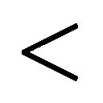Ｕｔｙｕ＝７＠：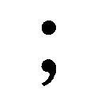ｌ1!!!!!!!!!?!!ぬ．，４ｒｔ！」
言葉にならない叫びが勝手に口から漏れ出す。頭部に打撃を受けたためだろう。脳を損傷して神経系がやられていたのかもしれない。サクラの中には、ただただ痛みと混乱が溢れていた。
だが、この程度で済んだのはサクラが魔法少女であったからだ。
常人が今の打撃を喰らえば、頭部は『飛沫』になっていた。粉砕、ではなく飛沫化だ。後に残るのは首のない人体と、エアブラシで吹いたような綺麗な赤色だけだっただろう。
しかし魔法で強化されたサクラの肉体は、激しい痛みを伴いながらも打撲傷のみ。
折れた骨や、千切れた血管、そして件の挫傷した脳髄は、魔法少女ならではの超代謝力で回復していく。残るのはただ激痛と疲労と――恐怖心。
（痛い！ 怖い！ 痛い！ 怖い！ 怖い！ こわい！ こわい！ こわい！ こわい！ こわい！ こわい！ こわい！ こわい！ こわい！ いたい！ こわい！ こわい！ 怖い！ 怖い！ 怖い――!!）
痛がり怯えつつも、サクラは少しだけ落ち着きを取り戻していたのかもしれない。あるいは、脳の損傷によって恐怖がほんの僅かに麻痺したのか。そのため、彼にも、
「う......うう、う――うう......」
と『泣き叫ぶ余裕』ができた。
「うわああああああああああああああああああああああああああんっ！ うああああああああああああああああああああああああああああああああああああああああああああああああああああああんっ！ うわあアアアアアアアアアアアアアアアアアアアアアアアアアアアアアアアアあああああああああああああああああああああああああああああああああああああああああああああああああああああああああああああああああああああああああああんっ！」
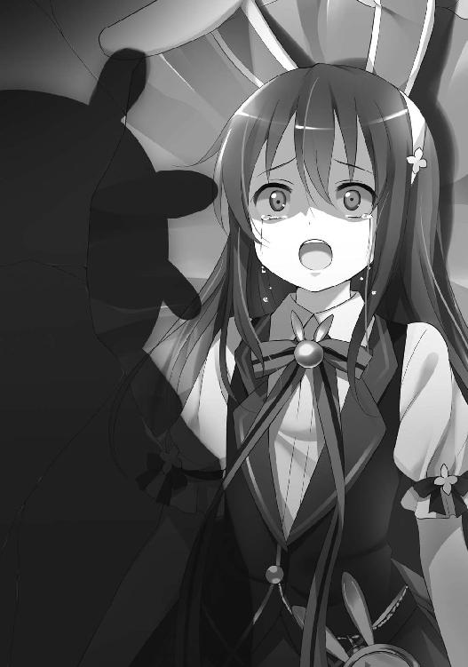
少女のように――否、赤子のように。
赤ん坊の泣き声そのままだ。
産道を通って見知らぬ世界に放り出される根源的恐怖――それを体験した生まれたての新生児と、寸分違わぬ絶叫だった。
脳の再生につれ理性も戻る。これではいけないと理解もできる。
人々の幸福のために戦う魔法少女が、敵に怯えて泣き喚くだなんて。
しかも、自分のためだけの涙だ。
ウーパーの襲撃で既に幾つもの人命が失われている筈だった。この施設の職員や警察関係者の、数多くの人命たちが。それに今のままでは一般舎の受刑者たちも危険になる。彼らは犯罪者でこそあれ理不尽に命を奪われていい筈がない。
見知らぬ人たちだけではない。そもそもサクラがここに来たのは幼馴染みの奈々を助けるためではないか。なのに、まだ彼女の安否も確認していない。一緒に来たスウィ～ト☆ミルクも心配だ。もしかすると二人揃って、この大破壊に巻き込まれているかもしれない。
それに、ほぼ全壊したこの談話ルーム。彼の師匠おしゃれ天使スウィ～ト☆ベリーは、まだここにいるままだ。変身もできず、それどころか鎮静剤や拘束具のために部屋から逃げる事も不可能。ウーパーに襲われれば、為す術もなく殺される。
そんな『守るべきもの』が幾つも存在したというのに――なのに彼が泣いているのは、ただ自分のためにだけ。純粋な怯えの涙。
これは許されるべき事ではない。
そのくらい分かってはいた――が、それでも涙は止まらなかった。
「うわああああああああああああああああああああああああああんっ！ うああああああああああああああああああああああああああああああああああああああああああああああんっ！」
「こらぁ、うるさぁ～～～いっ！」
棒立ちのまま泣くサクラに、ウーパーの二撃目。
しかも今回は、拳を大きく振りかぶってからのパンチ。
比較的本気の〝ウーパーパンチ〟だ。
「めっ！」
大振りのテレフォンパンチでありながら、泣いているサクラには避けられない。いや、もし泣いていなくとも、避けられはしなかっただろう。超怪力の前肢から繰り出されるパンチはどんな弾丸よりも速い。
今度の拳はサクラの胸元に命中したが、彼の体軀はまた真後ろへと吹き飛ばされる。
先程よりも速く。周囲の瓦礫を舞い上がらせて。
もし建物の残骸や地面にぶつかっていなければ、衛星速度に達して地球を回り続けていただろう。
無論、ダメージも甚大だ。
直接殴られた胸元は、肋骨を全て粉砕され、肺と心臓も破裂している。まるで風船のような文字通りの破裂。その勢いで血管内を血が逆流。手足の指先は内出血で腫れ、眼球は真っ赤。視界は一面、赤黒い。治癒したての脳髄も血流ですっかりシェイクされてしまっていた。
その上、吹き飛ばされた勢いで腱が千切れて、手足はうち捨てられた人形のよう。それぞれが出鱈目な方向を向いている。
避難中の一般受刑者たちは鉄格子つきの窓から、地べたに転がるサクラを見た。誰もが既に死体と思った。
「う、うう――あぁ、うああ......」
実際は、まだ絶命はしていなかったが。
魔法で強化された肉体は、そう簡単に死ぬ事はない。
「いたぁいよおおおおおおおおおおおおおおおおおおおおおおおおおおおおおお............!!」
今となっては、それも残酷な拷問だったが......。
肺や眼球は少しずつ機能を再生させていたとはいえ、その使い道は「ひっぐえっぐ」と泣きじゃくる事だけだった。
口からは嗚咽。目からは涙。
今や神経は、ただ苦痛を感じるためだけの器官だ。
「こぉらぁ～！ 勝手にすっとぶなぁ～～～っ！ とどめぇ刺しにいくのぉ、めんどいじゃあないのぉ～～～っ！」
「ひ......っ!? ひいいいぃいいいいいいいいっ！」
ぺたぺたという湿った足音を鳴らしながら、ウーパーはこちらへと近づいてくる。
とどめを刺しに。
溺れそうなほど溢れる絶望。そして恐怖。苦痛を和らげようと異常な量の脳内麻薬が分泌されたが、しかし割れた頭蓋のひびから漏れていく。気持ちは晴れる事がない。
やがて、ついに――。
「く......くるな！ くるなくるなくるなくるなくるなくるなくるなくるな来ないでえっ！」
「だぁ～～～め」
ついに、ぺたぺたの足音はサクラのすぐ真横まで！
「よぉっこぉいしょ～～～っと」
ウーパーは、倒れたサクラに馬乗りになると、
「たあっ！」
と、殴った。
顔を。また『ぽかっ』と。
サクラの口から『ぶっ』と言葉にならない鈍い悲鳴。と同時に血も飛び散った。顔面の骨が陥没している。またもや超代謝で再生していくが、そこをまた、
「たあっ！ たあっ！」
と短い前肢で『ぽかっ』『ぽかっ』と殴られ続けた。
しかも、何度も。
「たあっ！ たあっ！ たあっ！ たあっ！ たあっ！ とりゃあっ！ たあっ！」
「ぶぅっ！ へぐっ！ っ！ ぅっ！ んぶっ！ んぶううううううっ！ ぐっ！」
顔面が砕け、また再生。その度にまた殴られる。この『ぽかっ』は音こそ間が抜けているものの、その威力は一発一発が対物ライフルの一射撃に匹敵する。
痛覚は、地獄と同じだ。
「――も............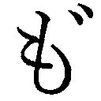ぉ、やめでぇ......」
「やめなぁ～～～～～～～～～～い♪ たあっ！」
「ぶううううぅううううううううううううううううううっ！」
これで二十何度目かの、顔が潰れる感触だった。
（..................ぐるじぃよぉ......）
いっそ再生しなければ楽なのに。すぐに、そのまま死ねるから。
そんな事さえ本気で思った。
（ああ――きっと、これは罰なんだろうな......。こんなに怖くて痛くて絶望的なのは全部、罰............身勝手な気持ちで『魔法少女になりたい』なんて思ったから......）
しかも、借り物の力で、だ。
今から一二日前――サクラは、あの時の事をとりゃあっ！まだ鮮やかに憶えている。
スウィ～ト☆ベリーと出会った夜を。う～ぱ～ぱぁんち！
あの夜、まだ普通のんぐううううううぅ！そこいらの少年だった佐倉慎壱は、隣家の奈々と一緒に新宿の東口あたりを歩いていた。時間は一〇時。その近辺は治安が良くないと噂話で聞いてはいた。しかし、それでも佐倉と奈々はスリルを好むティーンエイジャーらしく、また『自分だけは平気』という鈍感さで、隙だらけのまま歩いていた。たあっ！ とりゃあっ！
結果、強盗に遭った。
やめてぇ......やめでよぉ......相手はいかにも不良少年といった一〇代の男たち四人。もしかすると佐倉たちより年下であったのかもしれない。二人は暗い路地裏に連れていかれて、財布を奪われた上に殴られた。やめなぁいって言ってるでしょお！ たあっ！
奈々は、『乱暴』されそうになっていた。服を破かれ、押し倒されていた。
佐倉は奈々より先に服を破かれていたが、そのために男子と知られて、押し倒される事はなかった。その分、多めに殴られた。
『奈々を助けるべきなんだろうな』と理性では分かっていた。ある意味、今回と状況は似ている。たあっ！ このぉっ！いや、ほぼ同じと言ってもいい。佐倉少年は自分の為すべき事を知っていた。そして、それが不可能である事も。もぉ、やぁ......ころぢてぇ......
大声を出して助けを求めるなど現実的な選択肢もあったろう。だが彼はそれらの事を一切せず――何もしなかった。怖くて動けず、ただ殴られていた。
後日、奈々は『あの時、佐倉は自分を庇ってくれた』『佐倉が代わりに殴られてくれてたから、自分は乱暴されずに済んだ』と礼を言った。しかし、それは勘違いに過ぎない。もしかすると奈々の願望が混じっていたのかもしれない。佐倉は震えていただけだ。
二人を助けてくれたのは有名な非合法魔法少女、おしゃれ天使スウィ～ト☆ベリー。
佐倉は、ベリーの事が好きになる。
『自分もあんな風になりたい』と。
『あんな風に強くなりたい』と。
奈々は『その気持ちって〝好き〟って言うの？』と顔をしかめていたが、佐倉本人としては純粋な気持ちの筈だった。たあっ！ このぉっ！ とりゃあっ！
『自分も魔法少女になりたい』『試しにステッキを貸してくれないか』――佐倉はそう頼み込んだが、奈々は最初は断っていた。あ......う、うう......う......だが三日目、やっと『あの時みたいに〝誰かを守れない自分〟じゃ嫌なんだ』とお願いし、やっと《マジかるコロロン》を借りる事ができた。..................
佐倉が『自分が弱かったばかりに〝大切な人〟が傷つくところだった。二度とあんな想いはしたくない』と熱く語った時、奈々は頰を赤らめていた。その表情の意味は、とうとう彼には分からなかった。................................................
こうして佐倉慎壱は《マジかるコロロン》で〝魔法少女の弟子〟サクラとなる。
後になって『他人のステッキで変身できる筈がない』と聞かされたが、現実問題として変身はできた。あれれぇ～、しずかになっちゃったぁ？ そろそろしんじゃったのかなぁ～？
（......こんな、自分勝手な理由で魔法少女になったから――）
魔法少女は、人々の幸福のために戦うべきであったのに。
（『弱いのは嫌だ』だの『ベリーのようになりたい』だの、自分の事ばかり考えていたから......。だから、こんな目に......こんな風にみっともなく泣いて......）
「――いいや」
（............？）
「――いいや、お前は間違っていない」
サクラは、声を聞いた。
誰かの声を。まだ再生中の淡く霞んだ意識の中で。
「――お前の動機は、恥じ入るようなものではない。それに泣いている事も、だ。魔法少女ならば、誰もが一度くらいは戦闘中に涙を流す。かつてエターナル・ブリリアント・プリンセスもそうだった。無力の涙は魔法少女の産声だ」
（............スウィ～ト☆ベリー？）
口調からして彼女だろうか？ それとも――、
（..................それとも、幻聴？）
自分の頭の中でだけ聞こえる声か？
幻聴の方が納得できる。何故って都合が良すぎたから。
その声が語る内容は、サクラの不安を自己肯定させるものばかりだ。
（なぐられすぎて、ついにおかしくなったのかもな......。だとすれば――いよいよ、死ぬのか......。でも......もう、それでいいか......。
だって......こんなの、どうにもならない......。もともと、むりだったんだ......魔法少女なんて......）
「――絶望は、してはならない。人々の幸福を守る魔法少女が、絶望に負けてはいけない」
（でも......）
「――願え。そして信じよ。信じれば夢は叶う。魔法はそのための奇跡なのだ」
（願いが、叶う............それが、魔法......）
『強い自分になりたい』
『誰かを守れない自分は嫌だ』
『自分が弱かったばかりに〝大切な人〟が傷つくところだった。もう、あんな嫌な想いはしたくない』
『だから、もっと強く。誰よりも強く――』
それは、魔法少女サクラ――佐倉慎壱の心からの願い。
『あのスウィ～ト☆ベリーのように！』
信じれば夢は叶う。魔法はそのためにある力――。
サクラの顔面はパンチで潰され、ただの挽肉の塊だ。転落死した金城マリーもこんな顔になっていたに違いない。頭蓋も砕けてしまっている。心臓なんか、とうの昔に停止済み。しかし、そのような状態からも、まだ、
「う......うう、う......」
と、僅かずつながら再生していた。
徐々に徐々に、じわじわと。
心臓は再び鼓動を鳴らし、呼吸も弱々しいながらも再開する。瞳も微かに輝いていた。
「あれぇ～～～？ まだぁ生きてたぁ、しっつこいなぁ～～～。
それじゃあ～......るーぱーはんまーでとどめなのぉ～っ！」
ウーパーさん・ＴＨＥ・ゴールドバーグ用魔法武器《ルーパーハンマー》。
それは彼女の必殺武器であり、漫画めいたデザインをした重さ二トンの巨大金槌だ。本気で振り下ろせば、その破壊力は五〇〇〇ポンド級の地中貫通爆弾に匹敵する。
おそらく殴り続けるのが面倒臭くなったのだろう。ウーパーはこのハンマーの一撃でサクラを完全に殺す気だった。魔法少女でも再生が不可能なほどまでに。
「正義の鉄槌ぃ～、愛と勇気の《ルーパーハンマー》ぁ～～～っ！」
ウーパーは必殺のハンマーを振り下ろす。
が、一瞬だけサクラが早かった。
「............ま、じか――」
血塗れの唇から、声。
「ま、じか......る......らびか、る............へんしん、ちぇんじ――」
かぼそく途切れ途切れで、今にも消え入りそうだったが、しかし途中で止まる事はない。
それは、呪文だ。
変身魔法。
子供に秘められた無限の可能性を引き出す事で、あらゆる姿に変身できる。
比較的ありふれた種類の術であり、第一、第二世代魔法少女ではこの能力のみで活動をしていた者も少なくない。
（............ねがいは、かなう......!! なりたい自分に――!!）
サクラは消え入りそうな息の中、それを――使った。
「――マジかる ラビかる ヘンしんチェんジ！〝もっとなりたい自分〟になあれ！」
ピンクの眩しい光に包まれて、サクラは変わる。
蛹から目覚める蝶のように。
光はすぐさま消えていったが、その時にはもう以前のままの彼ではない。
〝もっとなりたい自分〟の姿だ。即ち――、
「エンジェルスウィ～ツ デコレーション！」
彼の憧れる、あの姿に！
誰よりも強く、気高く、美しく、そして誰よりも立派で、
決して大切な人を失う事もないであろう、
世界で一番素敵な女性に。
「フリルいっぱい 夢いっぱい 女の子ならおしゃまでいこう！ 夢見るおしゃれ天使スウィ～ト☆ベリー！」
色褪せたピンクとぼろぼろフリルのコスチューム。年齢、僅か一二歳。背丈は一四九・八センチで、手足は未成熟にすらりと細い。で、ありながら冷たく燃える瞳は、悪と戦う戦士のそれ。肌の無数の戦傷も、まるで野獣の縞模様。ポーズをつけたヴィーナスではなく、武具を構えたミネルヴァの美。
その名は、夢見るおしゃれ天使スウィ～ト☆ベリー。
姿はオリジナルと瓜二つ――いいや、むしろ美化されていた。
「とぉりゃあ～、しんじゃえ～～～～～～～～っ！」
ちょうどそのタイミングで《ルーパーハンマー》が彼へと達する。
超怪力で振り下ろされた総重量二トンの大鉄塊が、再生したてのベリーの頭部に。
がこん、と響く轟音。近隣一帯の窓は割れ、コンクリートの壁は震える。
この打撃にまた彼の頭蓋が叩き割られるかと思いきや......今度は、そうはならなかった。
「痛くない！」
頭頂部にハンマーを喰らいながらも痛がらず、怪我もない。
それどころかウーパーの顔を睨みながら、逆に声を張り上げた。
「スウィ～ト☆ベリーだから痛くない！」
今の彼は〝魔法少女の弟子〟サクラではなく、その師であるスウィ～ト☆ベリー。
だから痛くない。怪我もしない。
そうベリーは言っていた。
そんな事は、あり得ないのに。
「ゔ～～～っ!? う～～そ～～だぁ～～～っ！ もういっぱぁ～～～～～～つ！」
《ルーパーハンマー》の二撃目。今度はより強く。スピードも、より速く。
先端のハンマー部分は音速を軽く超えていた。これほどの運動ベクトルを持つ物理力ならば、ほんの僅かに触れるだけで――いや、外れようとも空気の圧力それのみで、ただのサクラなら殺せていよう。
だが、そうはならない。
「......遅い！ それに弱い！ こんなの俺には当たらない！」
避ける必要さえもない。
左手だけで充分だ。
ベリーは左手一本で、必殺の攻撃を受け止めた。ぴたり、と。山を崩して洪水を防いだこともある巨大ハンマーの一撃を。特に力も入れていないのに。
「う......うそぉ～......？ これってぇ幻覚？ お薬いい子で飲んでるのにぃ！ 先生に叱られちゃうよぉ！」
幻覚ではない。
しかし幻覚と言えば幻覚。
本当のスウィ～ト☆ベリーは、決して弱い魔法少女ではない。
が『極端に強い』というわけでもなかった。他の〝魔法のスウィ～トおしゃれ天使〟も同じだ。一人ひとりは並程度でも、努力と勇気とチームプレイで何倍もの力を持った敵に立ち向かう――それが彼女たちのスタイルだった。
が、対するウーパーさん・ＴＨＥ・ゴールドバーグは違う。
彼女は『極端に強い』。
魔法少女の強さに順位づけをするならば、その頂点には太陽系内全ての事象を司るエターナル・ブリリアント・プリンセスが君臨し、次点は〝ホーリープリンセスかぐや〟の最終形態でありパラレルワールドのプリンセスであるムーンライト・マジカルホーリープリンセスとなるだろう。
では、三位は？
それは白鳥まひるの変身するダックさん・ＤＥ・ニコルソンであり、そのコピーのウーパーさん・ＴＨＥ・ゴールドバーグ。
おしゃれ天使が一対一で、力比べで戦える相手では決してなかった。
しかし、現にこの光景。
振り下ろされた《ルーパーハンマー》はベリーの左掌で、ぴたりと制止されている。
「お前の攻撃は当たらない。何故なら今、お前の目の前にいるのは『戦いと美と正義の化身』だ。誰にも負けないし、何にも屈しない。ハンマーなんか効くわけがない」
根拠も何もない言葉。
しかし魔法少女サクラが変身したのは、そういった絶対的存在に他ならない。プリンセスにも匹敵する無敵の女神。本物のベリーならば、いざ知らず、だ。
これが『サクラにとってのスウィ～ト☆ベリー』であったのだから。
そして、改めて名乗りを上げる。
「――お聞きなさい！
魔法少女〝歌うウーパーさん・ＴＨＥ・ゴールドバーグ〟！ 陰謀に加担して刑務所を襲い、大勢の命を奪うだなんて！ 貴方みたいな悪い子のせいで、この――」
何十回も見た、動画データそのままに。
あのお馴染みのポーズと決め台詞を。
「夢見るおしゃれ天使スウィ～ト☆ベリーは、ちょっぴり機嫌が悪いんだから！」
照れは、ない。
誰より正しいこのスウィ～ト☆ベリーが、誰に恥じる事などあろう。
ウーパーは三度目のハンマーで襲い掛かってきていたが――しかし、ベリーは右の拳をぎゅうっと握り、両生類の顔面へとストレートを喰らわせる。ハンマーより早く拳は届いた。
ベリーの右拳に、もちもちと湿った感触。続いて『ぶぎゅう』という叫び声。
今度は先程とは立場が逆だ。ウーパーが顔面の骨を粉砕させられながら吹き飛んでいく。
真後ろに向かって。
一直線に。
「ぶぎゅぅーーーっ!? あ......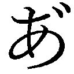......だぁーっ！ ーーーっ！ いだぁーっ！ あがぁああーーっ！ ちょぉ......ちょおっとタイム......!! まってぇ......!! これ、痛いのぉ！」
「駄目だ！ 待たない！」
瞳は怒りに燃えていた。しかし、これは報復ではない。
正義と公正を重んじるスウィ～ト☆ベリーは、復讐心などという『個人的感情』で罰を増減する事はない。サクラの中のベリーはそうだ。だから、これは公正な裁きの結果だった。その筈だ。
「来い！ 《おしゃれ☆ベリーピンクベル》！」
名を呼ぶと、その手の中に顕現れる。
彼女の最強の必殺武器が。
同時に技の名前を叫んだ。
「甘くてスウィ～トな夢を届けるベリー・ピンクベル・ハートヴァイブレーション！」
技名の長さなら第三世代で三位。
ハート形の光波を放射し、超高熱で敵を灼き尽くすという熱光学系の必殺技。警察の急襲隊員を瞬時に一〇人灼き殺せる。
両生類型魔法少女なら、一三・五秒で一匹だ。
決着は、ついた。
腰が抜けそうなほどの快感。スカートの中では精が漏れていた。
３
――この臭い、果たして何が焦げている？
「......奈々ちゃん、ご覧。終わったようだよ」
「ええ......」
見張り塔の屋根の上は、刑務所で一番高い場所になる。
つい一〇分前までなら、熱力学的受刑者専用舎（ＭＳ舎）の塔が施設で最も高い見張り塔であったろう。だが今は違う。
ウーパーアッパーでＭＳ舎が破壊された今となっては、この一般舎の見張り塔が一番高い。
スウィ～ト☆ミルクこと真白正幸は、そこにいた。
下着姿のままの奈々を連れて。
ウーパーの襲撃を察知した正幸は、奈々を連れて脱出し、この見張り塔の上に隠れていた。ここは敷地内で最も見晴らしの良い場所であり、逆に地上からは死角となる。警備の刑務官に催眠ガスを嗅がせれば、誰にも見つからない隠れ場所のでき上がりだ。
塔から下界を見下ろすと、今まさにサクラがウーパーを倒すところ。
『――甘くてスウィ～トな夢を届けるベリー・ピンクベル・ハートヴァイブレーション！』
技の名が聞こえた。正幸には馴染みのある技名だ。それに続いて『ぎゃぶぅ』という両生類のおぞましい悲鳴。黒く焦げる臭いも伝わる。
こうして刑務所を襲ったウーパーは返り討ちに遭った。奈々も正幸も、佐倉も無事。これは喜ぶべき事なのだろう。
が、奈々の瞳は無感動。
それどころか絶望の色さえも浮かべていた。
「......悲しいのかい？」
「........................うん......」
喜ぶべきだ。それは奈々にも分かっていた。
しかし、できない。
『自分を助けに来た筈の佐倉が』
『自分よりもスウィ～ト☆ベリーを選んで』
『スウィ～ト☆ベリーへの愛情・憧憬によって勝利した』
この決定的事実。
彼は、もう自分の事を心配していない。忘れてさえいるかもしれない。
奈々は何の表情も浮かべないまま、頰に涙を伝わせていた。
胸の奥で《キレイなココロ》が黒くなる......。
４
――焦げたのは、肉体？ それとも？
瓦礫ばかりの防音ルーム。
いや、その跡地。
水城宇美は、思い出す。
（............友情と想い出は、か――）
肋骨の傷が、ずきずき痛む。意識も薄れる。
もしかすると自分はこのまま死ぬかもしれない。そんな覚悟さえもしていた。
だが、彼女の顔は安らかだ。
「......キラキラアクア！、仲間割れは終わったようだな」
「スウィ～ト☆ベリー......つまりそれは『私とウーパーは陰謀の仲間であったのに、仲間割れで攻撃を仕掛けられた』と言いたいのですね？」
「そうだ」
「............貴方には言いたい事が二つあります。一つ目は『貴方の推理は外れていた』という事です。
私は、プリンセスに会っていません。『友情と想い出だけは永遠に近い』は、一〇年前に私が彼女から言われた言葉です。噓発見機は、動揺したから反応したに過ぎません」
一〇年前の四月。
水城はまだ星城しずくの意識を保っていたプリンセスを、無理矢理ベッドに押し倒した。自室で二人きりになった時、我慢できずにそうしてしまった。唯一本気で心を許せる友達に対して、心以外までも求めようとしてしまったのだ。不慣れな友情が空回りした結果だ。
結果、プリンセスは心を閉ざし、星城しずくではなくなった。
『世界に永遠などなくっても、友情と想い出だけは永遠に近いと信じていたのに』
でも、違った。裏切られた。しずくはそう言って水城を責めた。
翌日、水城は正体を明かして引退する。その後、二人は一度も顔を合わせていない。
だからプリンセスの『友情と想い出は永遠に近い』という言葉は、その実、水城へと向けられたものだったのだろう。
つまりは『水城を許す』『今でも友達だ』という友情の言葉。
水城の安らかな表情は、これが理由に他ならない。
「これが、貴方に言いたい事の一つ目......」
「もう一つは？」
二つ目は『世界一賢い少女』であった彼女ならではのもの――。
「事件の真相が分かってきました......。全ては、あの死んだ魔法少女が――秘密にされていた〝第一の犠牲者〟が原因なのです！」
〝マジかるウサミーＳＯＳ〟ではなく、もう一人の〝戦死者〟が。
それは皆の記憶からすら隠蔽された、第三世代魔法少女最大のスキャンダルだ。
一方、魔法少女サクラ。
〝甘くてスウィ～トな夢を届けるベリー・ピンクベル・ハートヴァイブレーション〟。
光波の放射から一三・五秒。ウーパーは全身から水分を失い、干からびた炭の塊となる。
ベリーが蹴るとその残った炭さえ粉々に砕けた。
こうして敵の絶命を確認すると――、
「はぁ、はぁ......ふぅ......」
緊張の糸が切れ、かくん、と彼は膝から崩れる。変身魔法も解けてスウィ～ト☆ベリーの姿から、いつもの〝魔法少女の弟子〟サクラに戻っていた。
今さら背中がぞくぞく震える。瞳は恍惚で焦点が飛んでいた。
「サクラ――」
震えるサクラの名を呼んだのは、彼の師であるスウィ～ト☆ベリー。
無論、本物の方だ。しかも二三歳の姿で。
いかなる方法か、革手錠は外していた。服を着る余裕まではなかったのか、汚れた素肌の上に刑務官用の上着だけを羽織っていたが、ベリーに恥じらう様子はない。それを目にする少年にも劣情が湧き上がる事はなかったが、これは戦闘直後特有の精神の昂ぶりが原因だった。
「よくやった、サクラ。見事だったぞ。お前は多くの命を救った」
「はは......」
サクラの口元は、ほころんだ。目からは感激の涙まで出た。
魔法少女としてのサクラには、ベリーから褒められる以上の喜びはない。だが――、
「だが――もう、お別れだ......」
喜びは、再び絶望に変わる。
ベリーの口から出たのは、あまりに唐突な別れの言葉だった。
「え......っ？ えっ？ ベリー、何を言ってるんです......？」
「キラキラアクア！の口から真相を聞いた。未だ推測の域を出ないが、まず間違いはないだろう。それを知ってしまった以上、もうお前とはいられない」
「待って！ それって、つまり......俺を巻き込みたくないって事ですか!? 危険だから自分一人で事件を解決するって？ そんなの嫌です！ 一緒にいさせてください！」
「......勘違いをするな。私はお前の思っているような女ではないし、自分で言っていたほど立派な人間というわけでもない。もっと汚い、濁った女だ。
私は陰謀に加担する。人々の幸福ではなく、ただ自分のために――謂わば『悪』として」
今、サクラが感じているのは、ウーパーに殴られていた時とは別の種類の衝撃であり、別の種類の絶望だ。
揺らぐと疑ってさえいなかった足場が、突然すとんと抜き取られたような――そんな精神的な崩壊だった。
「そんな......。あの――騙しているんですよね？ 敵を欺くには、ってやつでしょうか？ おしゃれ天使スウィ～ト☆ベリーは、そんな人じゃないですものね？ 俺、信じていますから......」
「お前に私の何が分かる」
すがりつくような目をするサクラ。しかしベリーは突き放す。
つい先程まで、あんなに素敵な時間だったのに......。
「次に会う時、お前は敵だ」
「そんな、まさか......」
純粋な《キレイなココロ》は真透明のクリスタル。
あるいは情熱の燃える赤。
ただただ眩しく煌めく宝石。
だが――人は日々を過ごすうちに、黒い染みを作ってしまう。
焦げて灼きついた、醜い汚れを。
佐倉慎壱も宇佐美奈々も、例外ではなかったらしい。
この日、この時に起きた事件は『第三世代魔法少女の最後』であり、同時にある意味『第四世代の誕生』であるとも言えた。
彼の名は〝魔法少女の弟子〟サクラ。
第四世代最初の魔法少女となるべき少年は、未だ絶望の淵にいた。
またもやウィッチ・イズ・デッドだ。
一人、また一人と消えていく。
「あの、もしもし......先輩、聞いてます？」
『......ええ、もちろんよ』
もとおしゃれ天使スウィ～ト☆ショコラこと真白里子は悩みがある時、必ず〝彼女〟に電話する。奈々にとっての里子と同じだ。
彼女の名は、天宮チョコ（三七歳）。
またの名を〝魔法の少女スウィート・ショコラ〟。
いわゆる『初代スウィート・ショコラ』だ。
一九八二年デビューの第二世代魔法少女で、主な能力は大人への変身魔法。
魔法の国ショコラリティの使命を受け、一年半ほど活動を続けていた。
ちなみに彼女は名前こそ『スウィート・ショコラ』ではあるが、実は里子たち〝魔法のスウィ～トおしゃれ天使〟とは直接関係のない魔法少女だ。名前がそっくりなのは単なる偶然に過ぎない。
だが、それでも里子は現役時代に偶然知り合って以来、名前が似ているだけの天宮チョコを『初代』『先輩』と呼び、何か悩みがある度にこうして彼女に相談していた。
「あたし、もうどうすればいいか......。先輩なら、こんな時どうします......？」
『あら......私がどう答えるか、貴方はもう知っているでしょう？』
そう。
この種の相談に、彼女は必ずこう答える。
『皆を、制止なさい。魔法を使うべきではないわ』
魔法を使うべきではない――と、いつものように。
『私もね、昔は〝魔法は人を幸せにする〟と思っていたわ。自分のステッキは、そのためにあるんだって。でも、そうではないと気づいたの。
私、今とっても幸せだわ。でもね、それは〝優しい両親の想い出〟や〝ときどきお話しするお友達の楽しそうな声〟、〝暖かいお日様〟に〝可愛らしい小鳥の歌〟、そういったもののおかげなのよ。魔法の力なんかじゃない。
夢を叶える力は〝呪文〟じゃなくって〝努力〟だし、心を守る力も〝ビーム〟ではなく〝愛情〟なの。みんな、すぐに忘れてしまう事だけど......』
そして初代ショコラは、お馴染みの言葉で締めくくる。
『いいこと、よく憶えておきなさい。人はね――魔法じゃ幸せになれないの』
彼女は両親を病気で失った上に、自身も同じ病で一〇年以上闘病生活を送っている。暮らしぶりも裕福とは言えず、正直『とっても幸せ』とは、とても傍目には思えない。
しかし、それでも彼女の言葉の正しさを、里子が疑う事はなかった。
「ありがとう、先輩......。ちょっとだけ悩みが消えた気がします」
『ううん、こちらこそお話しできて嬉しかったわ』
こうして里子は、受話器を置いた。
魔法は人を幸せにしない。
第一、第二世代の魔法少女なら、誰でも知っている真実だった。
「ううん、こちらこそお話しできて嬉しかったわ」
巨大グループ企業、アクアリウム社。
その本社ビル最上階のオフィスで、初代スウィート・ショコラは電話を切った。
いや、正しくは『変身魔法で初代スウィート・ショコラに化けていた秘書』が電話を切った。社長秘書――もとキラキラレディー・コバルト！の海音寺うしおが。
手にした電話も、魔法の携帯電話《おしゃれ☆ピッチ》を科学技術で再現したもの。あらゆる電話や無線機と通信できる。
「これでよし、と」
コバルト！は変身魔法を解き、普段の姿へと戻る。
二七歳の女性秘書へと。
身を包むのは品の良い海外ブランドのスーツ。派手すぎない落ち着いたアクセサリー。ひっつめにした髪型はやや堅苦しい印象を与えるものの、しかし同時に『いかにも秘書』といった知性や品格を漂わせてもいた。
まるで『大人の女性』のお手本そのもの。
踵の高い靴と年上っぽい雰囲気により、彼女の背は実際よりも高く見える。しかし計測すれば分かるが、本当はそこまで高身長というわけでもない。彼女の背丈は、ちょうど――一六一センチメートルだ。
「お嬢様――真白里子の方、釘を刺しておきました」
秘書のコバルト！の報告に、少女は、
「......ご苦労様です」
と、幼い声で頷いた。
五歳になったばかりの金髪の少女が。
小さな掌に握られたクレヨンが、リストにチェックをつけていく。
『ハニーゴールド』『プリンセス』『ベリー』『ダック』『ショコラ』そして『おかあさん』。
退け、あるいは堕落させた魔法少女たちの名に『×』の印を。
「それでは計画を、次のステージへ......」
少女の名は、水城りるけ。
『世界一賢い少女』水城宇美の養女であり、また彼女は生まれながらにして大きな秘密を持っていた。
それは生まれながらに魔法少女であったという事だ。
秘密にされていた〝第一の犠牲者〟であり、第三世代魔法少女最大のスキャンダルにして魔法少女史上最大の汚点。
最終決戦の直前に怖気づき、姿を消したと言われる不名誉な魔法少女――〝白衣の妖精りるけ１１９番〟。
この少女こそは、その転生した姿であった。
「星の涙よ、我がもとへ集え――。まばゆき太陽の下も、暗黒の夜も、我が瞳は罪を逃さじ。闇の心に染まりし者よ、フェアリーナースの癒しを畏れよ！
我が名は、白き衣のフェアリーナース！ 浄化の光であるが故に！」
その頭上に冠するは、魔法アイテム《フェアリー・ナースキャップ／ゴールドライン》。金城マリーを殺してクローゼットから奪ったものだ。
幼い少女の名乗りと共に、空は暗雲に包まれる――。
まるで流行り歌そのままに、
〝輝きと闇〟
〝人と魔女〟
〝花と果実〟
〝始まりと終わり〟
ウィッチ・イズ・デッド？ 死ぬのは、いずれか？
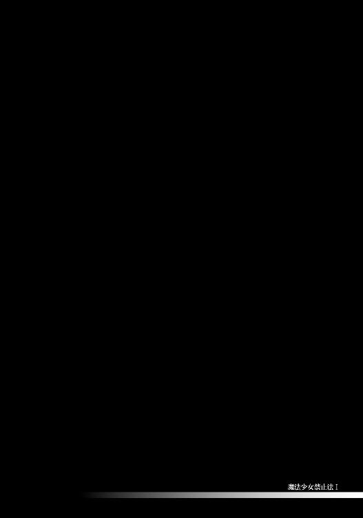
少女の『出会い』は、三年前。
小学四年のことだった。
「ひかりちゃん、おねがいポポ！ この魔法ケータイ《シャイニーデコ》で〝シャイニーキュート〟に変身するっポ！」
それは全長約二〇センチメートル。
白い毛のふかふかとした、丸っこい生物だ。
日輪ひかりは勉強嫌いだが動物好きで、動物図鑑を一冊まるまる暗記しているほどの子だったが、それでも、このような生き物を見るのは初めてだった。
いや――そもそも日本語で会話をしているのだ。しかも、その内容！ ただの動物である筈がない。
彼は、ポポ。
異世界から来た王子と名乗った。
「シャ......シャイニーキュートって？」
「全ての世界を守るために戦う、選ばれた戦士の事だっポ。ボクらの国ファンシーランドは、悪の国ワルモニアの侵略で大ピンチなんだポポ。おねがい、ひかりちゃん！ シャイニーキュートになってワルモニアと戦うっポ！」
見事な手腕の勧誘だ。
『選ばれた戦士』という殺し文句に、『戦う』というスリル。
そして少女自身の持つ正義感。
――愛らしい生き物が、自分に助けを求めている。
――もし自分が断れば、この子たちの国は滅んでしまう。
日輪ひかりは善良かつ正義感の強い少女であり、この状況を見過ごせなかった。
「ポポ、分かったよ！ わたし、シャイニーキュートになる！」
「ありがとうポポ。それじゃ《シャイニーデコ》を天に掲げて、こう叫ぶっポ。『――シャイニーエナジー・スパークリング☆』」
「うんっ」
少女が魔法ケータイを手に取った、その瞬間――、
――ぱんっ
爆ぜた。
弾けた。
ポポの胴が。水風船のように。
血が、周囲を真っ赤に染めていく。少女ひかりの顔、おろしたての服、そして、貰ったばかりの魔法ケータイ――全てに、鮮やかな紅色の染みが。
まるで無数の花が咲いたよう。
赤い花畑の中央で、ひかりは呆然と立ち尽くす......。
「――異界の者よ、罪は重いぞ」
背後からした声の主を、ひかりは学校で習って知っていた。
エターナル・ブリリアント・プリンセス。
地下施設に閉じ込められている筈の、太陽系の女神様。
この青白く光る裸の少女が、ポポの胴を爆ぜさせたのだ。
「お......おねがいだポ......。シャイニーキュートがいないとボクらの国は......」
ポポの断末魔の言葉に、プリンセスはただ冷たく告げるのみ。
「否。異界の戦争に、地球の少女は利用させない。このエターナル・ブリリアント・プリンセスが存在る限りはな」
プリンセスは争いを望まない。
少なくとも、異世界同士の争いに、この星が――この星の少女が巻き込まれるのを、決して善しとはしなかった。
そして、新たな魔法少女の誕生も望まない。
「異界の王子よ――汝は、罪なき者を争いに巻き込もうとした。その罪は重い。
我が力を以て、お前たちの国と敵の国、双方平等に滅ぼそう。お前の国が滅びるのは、お前への罰。敵の国が滅びるのは、お前への情けによるものだ。私は公正を重んじる」
やがてポポは自らの血の中で、その意識を途絶えさせた。
怒りや憎しみ、嫌悪感、あらゆる負の感情を浮かべた形相で。
プリンセスは、少女に告げる――。
「少女――日輪ひかりよ、君は魔法の道具に触れてしまった。もう、その《シャイニーデコ》は君のものだ。だが使用は許されない。
若き少年少女というものは、そもそも、ただそれだけで全能に近い存在なのだ。ゆっくりとだが、あらゆる姿に変身できる。何を魔法になど頼る必要があろう」
「はい、プリンセス......」
一九九七年の最終決戦以来、多くの魔法少女が姿を消した。
その一方、『新しく誕生した魔法少女』も、ほとんど確認されていない。
当然だ。
こうしてエターナル・ブリリアント・プリンセス自らが、魔法少女を生み出そうとする〝マスコット〟を未然に抹殺してきたのだから。
これまで、何十、何百と。
禁止法とはまた別に、自分たちの同類が増える事を、女神は善しとはしなかったのだ。
魔法少女シャイニーキュートになる筈だった少女、日輪ひかり。
その魔法アイテム《シャイニーデコ》は一度も使われる事のないまま、勉強机の引き出しに仕舞われ続けた。
三年後、ニュースで『プリンセスが去った』と聞くまでは。
「よしっ......やるぞ！」
心臓はばくばく鳴っていた。
最終決戦から一〇年。
非合法活動をやめぬスウィ～ト☆ベリー。新たな魔法少女〝魔法少女の弟子〟サクラ。ウーパーによる刑務所の襲撃と破壊。虐殺される警官たち。魔法少女の犯罪に対し、法も警察も全くの無力。
そして、エターナル・ブリリアント・プリンセスの消失。
いずれの事実も、ただ一つの結論を指し示している。
即ち――、
『新たな魔法少女の誕生を、止められる者はいない』
という事だ。
「――シャイニーエナジー・スパークリング☆
小麦色のまぶしき戦士、シャイニーキュート・サンライトっ！」
中学一年になった少女は、初めて魔法の力を試した。
やがて、街には魔法少女が溢れ出す......。
「――赤い月、か」
空には満月。大都会の常だが、星はない。
月も天高く孤高に光っていれば、色は瞳に青白く映る。だが逆に、低い位置で照る月は、妙に赤みがかって見えるものだ。地上に近づきすぎたため、世俗の塵に塗れて穢れたのだと言ってもいい。
そんな赤い月を、おしゃれ天使スウィ～ト☆ベリーは眺めていた。
建設中の新宿アクアリウムタワービルの頂上で。
主となる筈だった水城宇美が姿を消したため、工事は途中で止まっている。きっと完成する事のないまま巨大な廃墟となるのだろう。バベルの塔か、さもなくば巨人の墓標。プリンセスを失った寂しい人類の記念碑だ。
そんな場所で見る月ならば、穢れた赤が相応しい。
こうして満月を見るのはあの日以来、確か二度目であったろう。
エターナル・ブリリアント・プリンセスの消失以後も、スウィ～ト☆ベリーは常にいた。この鉄骨むき出しの摩天楼に。
まるで、変わらぬ事が何かの証しであるかのように。
変化するのは、世間だけだ。
喩えば――最近は、ときたま彼女に〝客〟が来た。
「ああ、やっと見つけた。スウィ～ト☆ベリーさんですよね？」
「......誰だ？」
振り向けば、ベリーの初めて見る魔法少女。
単に『会うのが初めて』というだけではない。過去の資料やニュース映像でも見た事のない少女だった。
それが二人も。
二人のコスチュームは、デザインラインが異なりすぎていて統一感がなく、なのに色合いはどちらも白系統と重複している。おそらくは、それぞれソロ活動をしている子たちなのだろう。あるいは、別々のチームのメンバーであるのか。
片方の少女は、背丈や顔つきから見るに、中学生かと思われる。だがフリルだらけの服といい、ハートマークのついた髪留めやブレスレットといい、そのコスチュームはやたら子供っぽさが強調されていた。華やかな衣装だったが、彼女自身はさほど明るい性格ではなさそうで、お世辞にも似合っているとは言い難い。
もう一人は、やはり背丈や顔つきから見るに、間違いなく小学生。それも三年か四年の子であろう。着ている服やアクセサリーの類は控え目なデザインであるものの、その手には、やたらとごつい杖が握られていた。柄は本人の背丈より長く、先端は武器とおぼしき部位で飾られている。いくら杖が魔法のシンボルといっても、こんなジャイアントサイズの得物を持ち歩く魔法少女を、ベリーは今まで見た事がなかった。
やがて、年長者である白フリルの中学生が、おっかなびっくりと用件を切り出す――。
「あの――私たち、最近、初めて変身したんです。よかったらベリーさんの仲間にしてもらえないかと思いまして......」
「そうか......。お前たち、名前は？」
改めてベリーが問うと、二人は答えた。
いや、見得を切った。
「――シャイニーエナジー・スパークリング☆
白き肌のうるわしき戦士、シャイニーキュート・ムーンライトっ」
「――魔導機杖トライアングルハート、Ｓｔａｎｄ ｕｐ！
魔法少女トライアングルハートるりあロココ 野々宮るりあ九歳。
今日もマジカる、がんばります！」
ポーズを決めて、名乗りを上げた。
自己紹介の代わりだ。こうして仰々しく名乗るのは、客観的には滑稽であったろう。だが初対面の魔法少女同士では、さほど珍しい挨拶ではない。
ことに初変身直後の新人は『誰かの前で名乗りを上げる』というチャンスを常に狙っているものだった。二人もそうであったのだろう。
ともあれ、白フリル中学生が『シャイニーキュート・ムーンライト』、
ごつい杖の小学生が『魔法少女トライアングルハートるりあロココ』となる。
先輩魔法少女であるおしゃれ天使スウィ～ト☆ベリーは、まだ九歳のトライアングルハートるりあロココの傍に、ただ黙って歩み寄り、
――ぱしんっ
頰を叩いた。
魔法少女の腕力による、鉄骨をひしゃげさせる平手打ちで。
「――っ!? ベリーさん、何を......？」
「軽々しく本名を口にするな。いいか、今後は決して『魔法少女トライアングルハートるりあロココ』の正体が『野々宮るりあ九歳』だと知られてはならない。家族だろうがスポンサーだろうが、決してだ」
「は、はい......」
このスウィ～ト☆ベリーの態度は、ルーキーたちの輝く瞳を曇らせるものであったろう。だが、極めて重要なアドバイスであったのもまた事実。幼い頰を叩いた事を、ベリーは後悔していない。
むしろ『今後のためにも、浮かれた気持ちを挫いておいた方がいい』とさえ思っていた。
るりあロココが新たなマジかるウサミーとならずに済むなら、そして隣のムーンライトが新たなスウィ～ト☆ベリーとならずに済むなら、平手打ちなど破格の代償だったろう。
「シャイニーキュート・ムーンライト、トライアングルハートるりあロココ――先ほどお前たちは『仲間にしてくれ』と言ったな？ だが、それは無意味な願いだ。何故なら、お前たちが真に魔法少女であるならば、我らは既に仲間である。魔法少女というのは皆、人々の夢や幸せを護る同志だからな」
それは疑うべくもない。
いかなる罪を犯そうと、それでも魔法少女は人々のために行動する。これは決して揺らぐ事のない根幹的な理念であった。
そしてベリーは、険しい顔のまま二人に告げる――。
「我々は仲間だ。何かあれば、いつでも俺を呼ぶといい」
新人魔法少女たちは、『はいっ』と声を揃えて返事をした。
るりあロココの目には涙が滲んでいたが、これは頰の痛みによるものではない。恐くて厳しいスウィ～ト☆ベリーに優しい言葉を掛けられて、それで泣きそうになっていたのだ。
これから始まる魔法少女の生活は、大変な事も多いだろう。だが一方、きっと充実したものであるに違いない。幼いるりあロココは、そんな浪漫の匂いを感じていた。シャイニーキュート・ムーンライトも、釣られて瞳を潤ませた。
シャイニーキュート・ムーンライトとトライアングルハートるりあロココは、新たな世代の魔法少女。
エターナル・ブリリアント・プリンセスの消失以後に誕生した、謂わば『第四世代』の魔法少女たちだ。
実のところ、ベリーが出会った第四世代は、この二人が初めてではない。
これで、もう五人目。
ムーンライトやるりあロココ同様自らスウィ～ト☆ベリーの元へと挨拶に訪れた者もいれば、あるいはパトロール中に偶然遭遇した者もいる。様々だ。皆、法や家族の目を逃れるために真夜中にのみ活動していた。
ベリーは、確信していた。
『このような子たちは、これからもっと増えていくに違いない』と。
それは魔法少女の勘というべきか。ある意味、予言に近いものではあったが。
〝ナイトオール（夜更かし）〟。
あるいは〝ナイトストーカー（夜歩き）〟、〝レイトショー（深夜番組）〟。
そんな名で分類された彼女たちは、第四世代の半分にあたる。
二つの車輪の片側だ。
新世代を前にして――〝昔〟は簡単だったと、佐倉慎壱少年は思う。
まるで一〇年前を知るベテランのように。
本物のスウィ～ト☆ベリーであるかのように。
師とただ二人で犯罪者を狩った〝昔〟は、ほんの数日間だけの事。だがその短い日々の記憶は、常に宝石のように煌めいていた。
だが、彼の師であるスウィ～ト☆ベリーはもういない。それどころか〝魔法少女の弟子サクラ〟もいない。
いるのは、ただ『新たなスウィ～ト☆ベリーとなったサクラ』だけ。
彼の立つこの巨大ビルと同じく、変わらぬ姿で夜の街を威圧していた。
「あの――、ベリーさんに質問が......」
「どうした、ムーンライト」
シャイニーキュート・ムーンライトはやはり、あまり陽気な子ではないらしい。白フリルひらひらのコスチュームが恥ずかしいのか、常に照れ臭そうな顔で俯いていた。
そんな彼女が、おずおずとベリーに訊ねる。
「さっきベリーさん、おっしゃってましたよね......？ 『魔法少女はみんな仲間だ』って」
「言った。それが何か？」
「あいつらも、そうなのでしょうか？ あの〝黒い魔法少女〟の連中も、仲間と思うべきなんですか？」
これもまた、新しい世代の問題の一つだ。
「奴らの一人シャイニーキュート・サンライトですが......あの女の正体、たぶん私の知っている子だと思うんです。だから、みんなで今のうちに――」
天に星はなく、地には人の心も既に乏しい。
そんな街に、魔法少女が溢れ出す。
（「魔法少女禁止法①」 了）
全ての『物語』には、終わりがあります。
たとえば映画やテレビドラマ。エンディングロールと共に物語は終わります。――多くの作品では主役たちは死んだわけではありませんが、続編がない限り、その後の人生が語られることはありません。
現実の人間でも同じです。スポーツは筋書きのないドラマなどと言いますが、たとえば高校野球。テレビ画面の中で素晴らしい活躍をした少年たちですが、プロデビューしない限り、彼らと再会できる確率は極めて低いものになります。
物語が終わった後、皆は何を思って毎日を過ごしているのでしょう？
長い人生の中で、他人の鑑賞に堪えうるほど輝いた一瞬――それを物語と呼ぶならば、輝き終わった日々には何が待っているというのでしょうか？
この「魔法少女禁止法」は、そんなお話です。
――と、固い話はこのへんで。著者の伊藤ヒロです。皆様、初めての方は初めまして。
本書は他社より二〇一〇年に発表された「アンチ・マジカル 〜魔法少女禁止法〜」に大幅な加筆・修正をしたものです（かなり内容が変わっていますので、既読の方も楽しんでいただけたのではないかと）。
「アンチ・マジカル（略）」は、読者の皆様に高く評価していただきながらも、一巻のみで続刊が出ないままでいた作品だったのですが――このたび三年余の月日を経て、エンターブレイン様より復活することとなりました！ それも、二巻、三巻、と続くことを前提として！
まったく、ありがたい限りです。エンターブレイン様と担当のＦ田様には足を向けて眠れません。それからイラストのＫｏｉ先生にも感謝です。キャラデザインするものが多くて、さぞかし大変だったでしょう。色の選び方も素晴らしく、どの子もカワイイのですが、この子たちがみんなひどい目に合うのかと思うと......ちょっとワクワクしました（笑）ありがとうございます。そして、デザイナーの芥様。口絵では魔法少女のロゴまで！ これだけでも新装版になる価値があったという思いです。
さて二巻は、本書の『新章』の続き――第四世代の話になります。新キャラも続々登場予定です。Ｋｏｉ先生には相変わらず大変な思いをして頂くことになりますが、ひとつよろしくお願いします。
蠢く陰謀。新たな世代の魔法少女たち。血で血を洗う戦い。スウィ〜ト☆ベリーとサクラ少年は、いかな運命を辿るのか。
それでは、また近いうちにお会いしましょう。
二〇一三年 九月 伊藤ヒロ
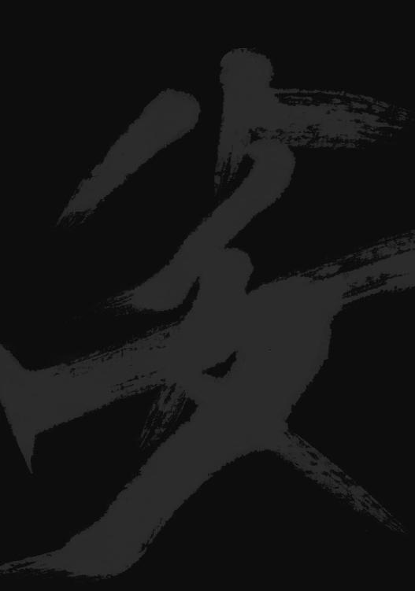
電子版
魔法少女禁止法Ⅰ
著者／伊藤ヒロ
イラスト／Koi
題字／矢島峰月
2014年9月29日電子版ver.1.0発行
発行人 青柳昌行
発行 株式会社KADOKAWA
〒102-8177 東京都千代田区富士見2-13-3
http://www.kadokawa.co.jp
企画・制作 エンターブレイン
装丁 芥 陽子（note）
(c)2013 Hiro Itou
本電子書籍は『魔法少女禁止法Ⅰ』（2013年10月11日発行 初刷）を元にして制作しております。
本書に関するお問い合わせ先
エンターブレイン カスタマーサポート
電話 0570-060-555
（受付時間 土日祝祭日を除く12：00～17：00）